PhxSql
Built to store. Engineered to scale.
Pedido do dono em 07/09/2026: três perguntas abertas e vinte e seis itens, de A a Z, cada um respondido contra o motor vivo — comando, saída real, data da corrida e o que não existe, dito com todas as letras.
Medido em 2026-09-07 16:39 UTC, commit a56a165.
Você apontou certo: o .fts não estava na Figura 1 do dossiê («Organograma dos arquivos» — cada tabela é: SEMPRE os sete, SÓ ÀS VEZES três), e medido antes de mexer ele também não estava na Figura 8 (o caminho de uma inserção, que desenhava 8 extensões) nem na tabela-mestra de arquivos do docs/FORMATO.md (9 linhas, sem .fts). Três lugares, o mesmo buraco.
A causa é uma só: o inventário «que arquivos uma tabela tem» mora em três lugares escritos à mão e nenhum sai do código — a lista certa é a de arquivos_da_tabela no catalogo.rs. O .fts entrou no motor em 07/09/2026 (pedido 200) e ninguém voltou às figuras: figura desenhada à mão envelhece como número digitado à mão.
Onde ele fica: ao lado dos outros arquivos da tabela, <tabela>.fts, um por tabela, criado no criar_tabela que declara indices_texto — e a ordem de gravação é .reg → .ndx → .fts → .log (a Figura 10, o caminho do pedido, já dizia isso no aria-label). Por dentro ele é um .ndx — mesma assinatura PHXNDX\0\0, mesma versão, mesmo CRC de página —, com uma chave por termo dobrado. É derivado (se reconstrói do .reg) e por isso fica fora do desfazer de uma inserção que falha no meio (docs/FTS.md §2.1).
O que a medição achou e o que ficou depois do conserto, nesta rodada:
antes depois
Figura 1 (organograma) SÓ ÀS VEZES: .lgpd .bkp .pag .lgpd .bkp .pag .fts (4 condicionais)
Figura 8 (caminho da inserção) bin bkp lgpd log memo ndx pag reg + fts, pendurado no .ndx, tracejado,
«só com índice de texto · fora do desfazer»
FORMATO.md, tabela de arquivos 9 linhas, sem .fts 10 linhas, + §17 «.fts — o índice de texto»
ocorrências de «.fts» no dossiê 4 (nenhuma em figura) nas duas figuras, com legenda e aria-labelAs duas figuras foram provadas no navegador (captura de cada uma, com o texto .fts lido de dentro do SVG), porque figura só se prova exercitando.
O .fts contra a varredura — o número que responde «vale a pena?» — está na bancada bancada/fts/ e na página de testes («Índice de texto — o .fts contra a varredura», medida em 07/09/2026 01:09), e no docs/FTS.md §4.1.2, o índice contra a varredura no milhão de linhas.
arquivos_da_tabela do código é o conserto de raiz e fica nomeado em vez de feito: cada caixa carrega um texto de decisão («se o espelho está ligado», «fora do desfazer, de propósito») que um gerador não inventa. O que cabe é uma guarda: um teste que leia a lista do código e confira que toda extensão dela aparece nas duas figuras e na tabela do FORMATO.md — vira pedido..tx (marca de commit em curso) ficou de fora da Figura 1 de propósito: é do database, não da tabela (FORMATO.md §16).python3 docs/dossie/numerar-figuras.py # renumera; a figura em si é o HTML
python3 bancada/fts/medir.py 1000000 20 # o .fts contra a varredura, no milhãoMedido em 2026-09-07 16:36 UTC pela frente do item U (bancada/transacoes/travada.py), commit a56a165; escrito em 2026-09-07 16:48 UTC.
São três prazos, e um número só não responderia aos três (docs/TRANSACOES.md §4.7):
| prazo | o que limita | campo do config.json | padrão |
|---|---|---|---|
TIMEOUT | a transação inteira | recursos.transacao_prazo_min | 5 min |
LOCK TIMEOUT | quanto se aceita esperar por outro numa linha travada | recursos.transacao_lock_timeout_ms | 500 ms |
STATEMENT TIMEOUT | quanto uma operação pode levar | recursos.transacao_statement_ms | 0 = sem prazo |
O lock de linha funciona assim: a transação A que altera a linha toma a trava X dela; a transação B que tenta a mesma linha espera até o LOCK TIMEOUT e, vencido, recebe 4005 EM_TRANSACAO com a mensagem dizendo quem trava, desde quando, e que esperou N ms — B decide se tenta de novo ("repetir": true). A trava solta no COMMIT ou no ROLLBACK de A.
Quem encerra é o gestor de transações, nunca uma thread morta: vencido o TIMEOUT da transação, ela vai para ABORT_ONLY, solta as travas na hora, joga a lista fora, e a próxima operação de A recebe 6002 TRANSACAO_ABORTADA com o prazo dentro. A conexão continua viva. Os prazos se declaram por pedido no begin ("timeout":"1500ms", "lock_timeout":"400ms") ou no config.json para o servidor inteiro.
Medido pelo soquete, com duas conexões (o exercício inteiro está na resposta U):
LOCK TIMEOUT declarado por B ..... 400 ms
espera medida de B ............... 401,6 ms
erro que B recebeu ............... 4005 EM_TRANSACAO, "repetir": true
"a linha 1 de loja/contas esta travada (X) pela transacao 1788798971091
(ligacao 3), aberta em 2026-09-07 16:36:11,193 ha 0s; ela solta no COMMIT
ou no ROLLBACK. Esperei o LOCK TIMEOUT de 400 ms e desisti"
TIMEOUT declarado por A .......... 1500 ms (A trava a linha e some)
espera do teste .................. 2,0 s
proxima operacao de A ............ 6002 TRANSACAO_ABORTADA
"a transacao 1788798971093 passou do TIMEOUT de 1500 ms e foi revertida;
as travas dela ja sairam. Mande ROLLBACK para fechar"
saldo da linha depois ............ 100 (nada de A sobreviveu)Os dois códigos são os documentados no docs/TRANSACOES.md §9, e a prova é nos dois sentidos: B só desistiu depois dos 400 ms, e A só foi abortada depois dos 1.500.
STATEMENT TIMEOUT só morde onde há laço. Ele usa o cancelamento cooperativo (Atividade::siga), conferido entre unidades de trabalho seguras — uma inserção de uma linha não tem ponto de cancelamento no meio, e não poderia ter: parar entre gravar o slot e manter o índice deixaria os dois discordando. Um prazo que promete cortar qualquer coisa seria configuração que mente.LOCK TIMEOUT e um deles desiste. É o desenho mais barato, e é honesto — com o prazo padrão de 500 ms, o custo de um abraço mortal é meio segundo, não uma transação pendurada.telemetria_encerrar devolve ociosa para uma transação parada entre pedidos (não há laço ali para cancelar); o caminho é encerrar_sessao, que fecha o soquete e cai na mesma rede de proteção da queda de conexão — provado no item U.flock /tmp/phx-cargo.lock cargo build --release -p phxsql-server
python3 bancada/transacoes/travada.pyMedido em 2026-09-07 16:27 UTC, commit a56a165, contra o motor vivo.
Existe, e é da tabela, não do banco: uma coluna do tipo Sequence — no máximo uma por tabela — e um contador único que vive no cabeçalho do volume 1 do .reg (byte 36, 8 bytes). Inserir sem informar o valor numera sozinho; inserir informando faz o contador acompanhar (o próximo sai depois do maior gravado, o que o PostgreSQL não faz por padrão); a op sequencias lista os contadores do banco e a ajustar_sequencia zera ou pula — só para quem tem administrar, porque ajustar para trás faz a próxima inserção repetir uma chave, e quem recusa a repetição é o índice único, não o contador.
O que não há: CREATE SEQUENCE solto, compartilhado entre tabelas, com nextval()/currval() — a sequência do PhxSql é sempre a coluna de uma tabela. É decisão de formato, e a §«rownum» do docs/FORMATO.md diz por quê: o contador do .reg é único, e reservar essa vaga para o motor tiraria do usuário um tipo que é dele.
sequencias -- 2026-09-07 16:27:08 UTC -- commit a56a165
=== 1. Declarar: a coluna e do tipo `Sequence` (uma so por tabela)
[OK ] criar_tabela com id Sequence
[ERRO] segunda coluna Sequence na mesma tabela (tem de recusar) -- [SP000018] esquema invalido: a tabela tem 2 colunas Sequence (a, b), e so pode ter uma: o contador do `.reg` e unico
=== 2. Inserir SEM informar o id: o motor numera
inserir Alves -> ok=True rowid=1
inserir Silva -> ok=True rowid=2
inserir Andrade -> ok=True rowid=3
linhas: [(1, 'Alves'), (2, 'Silva'), (3, 'Andrade')]
=== 3. Inserir INFORMANDO o id (o contador acompanha, como no PostgreSQL nao acompanha)
[OK ] inserir id=100
o proximo automatico saiu: 101
=== 4. Listar os contadores: op `sequencias`
{'tabela': 'pedidos', 'coluna': 'id', 'proxima': 102, 'registros': 5, 'tem_sequencia': True}
=== 5. Ajustar: op `ajustar_sequencia` (exige administrar)
[OK ] zerar (proxima=0)
[OK ] pular para 5000
o proximo automatico saiu: 5000
=== 6. Ajustar para TRAS de uma chave ja gravada: o indice unico e quem recusa a repeticao
[OK ] ajustar para 1 (ja existe)
[ERRO] inserir depois do ajuste (o id 1 ja existe: tem de recusar) -- [SP000020] chave duplicada: indice unico porId ja tem essa chave
=== 7. Onde o contador mora: byte 36 do cabecalho do volume 1 (o 92 e o do rownum)
byte 36 proxima_sequencia = 1 byte 92 proximo_rownum = 7
(o cabecalho vai ao disco no `sincronizar`, no fecho da janela de durabilidade;
o valor em memoria e o que a op `sequencias` devolve)
=== 8. Reabrir e conferir que o contador sobreviveu
(a persistencia do contador entre reaberturas e provada nos testes do phxsql-store)O que cada bloco prova:
Sequence se declara como qualquer outra, e a segunda na mesma tabela é recusada na declaração, com o motivo escrito.id.id=100 à mão faz o próximo automático sair 101: o contador acompanha o maior gravado. No PostgreSQL um INSERT com valor explícito não avança a sequência, e a próxima automática colide.sequencias devolve tabela, coluna, o próximo número e quantos registros há.ajustar_sequencia com proxima: 0 zera (o primeiro sai 1) e com 5000 pula.SP000020 chave duplicada.rownum. A primeira versão desta sonda leu o 92 e imprimiu o número errado — o instrumento antes do veredito.CREATE SEQUENCE, nextval, uma sequência para várias tabelas) — não existe, por formato: o contador é do .reg.RETURNING id no SQL — o protocolo devolve o rowid; para saber o id gerado lê-se a linha (ler com o rowid), como a sonda faz.sincronizar (fecho da janela de durabilidade), e a sonda mostra o valor do disco atrasado em relação ao da memória; a prova de que sobrevive à reabertura está nos testes do phxsql-store, não nesta sonda.flock /tmp/phx-cargo.lock cargo build --release -p phxsql-server
python3 bancada/sequencias/sonda.pyCorrida em 2026-09-07T16:25:26Z UTC · commita56a165·target/release/phxsqld· reproduzido porpython3 bancada/sql-exemplos/exercitar.py
O phxsql tem um tradutor SQL (crates/phxsql-sql/), ligado ao motor pela operação {"op":"sql","database":"...","texto":"..."}. Ele cobre SELECT simples (projeção com apelido, COUNT(*), WHERE de igualdade numa coluna indexada, ORDER BY ascendente numa coluna indexada, LIMIT/ OFFSET), o vocabulário de transação (BEGIN/START TRANSACTION/COMMIT/ ROLLBACK/SAVEPOINT e a forma longa com SCOPE/TIMEOUT/LOCK MODE) e o vocabulário de rotina (CREATE/DROP/SHOW TRIGGER(S), CREATE/DROP/ SHOW PROCEDURE(S), CALL). INSERT, UPDATE, DELETE, CREATE TABLE, CREATE DATABASE e ALTER TABLE não existem nesta camada — são operações nativas do protocolo (inserir, atualizar, excluir, criar_tabela, criar_database, acrescentar_coluna), e o SQL text as recusa nomeando o motivo, não com "sintaxe inválida". Nesta rodada, 56 comandos mandados, 28 ok, 28 erro — cada erro é um comando que docs/SQL.md ou docs/TRIGGERS.md já documentam como recusado, exceto os dois achados da seção final.
Tabela usada em toda a bateria: loja.clientes (id Int8 obrigatória e primária, nome Str(40), cidade Str(40); índice único porId só em id), com 5 linhas gravadas antes de começar.
[OK ] SELECT * simples
SQL: SELECT * FROM clientes
-> {"sql":"SELECT * FROM clientes","op":"sql","notas":["sem ORDER BY a ordem e a de DIGITACAO...","sem LIMIT o servidor aplica o teto dele..."],"registros":5,"visiveis":5,...}
[OK ] SELECT com colunas e apelido
SQL: SELECT id, nome AS quem FROM clientes
-> {"sql":"SELECT id, nome AS quem FROM clientes","op":"sql",...,"colunas":["id","quem"],...}
[OK ] SELECT com AS no proprio COUNT
SQL: SELECT COUNT(*) AS quantos FROM clientes
-> {"sql":"SELECT COUNT(*) AS quantos FROM clientes","op":"sql",...,"contagem":5,...}
[OK ] COUNT(*)
SQL: SELECT COUNT(*) FROM clientes
-> {"sql":"SELECT COUNT(*) FROM clientes","op":"sql",...,"contagem":5}
[OK ] WHERE = na coluna indexada
SQL: SELECT * FROM clientes WHERE id = 1
-> {"sql":"SELECT * FROM clientes WHERE id = 1","op":"sql","notas":["indice porId escolhido pelo WHERE -- e nao ha planejador..."],"encontrados":1,"linhas":[{"rowid":1,"id":1,"nome":"Ana","cidade":"Blumenau","softdeleted":false,...}]}
[OK ] ORDER BY asc
SQL: SELECT * FROM clientes ORDER BY id
-> {"sql":"SELECT * FROM clientes ORDER BY id","op":"sql","notas":["ORDER BY atendido pelo indice porId -- a ordem sai do .ndx, sem ordenar nada",...],"registros":5,...}
[OK ] LIMIT
SQL: SELECT * FROM clientes LIMIT 2
-> {..."devolvidas":2,"examinadas":2,"modo":"posicao","salto":"passo",...}
[OK ] LIMIT + OFFSET
SQL: SELECT * FROM clientes LIMIT 2 OFFSET 1
-> {..."devolvidas":2,"examinadas":2,"modo":"posicao","salto":"bisseccao",...}docs/SQL.md)[ERRO] WHERE <>
-> [SP000018] esquema invalido: WHERE id <> ... nao tem substrato: o indice
desce ate uma chave IGUAL, e a faixa ainda nao esta exposta no protocolo.
So `=` passa por aqui
[ERRO] WHERE < / <= / > / >= -- mesma recusa, mesmo motivo
[ERRO] ORDER BY desc
-> ORDER BY id DESC nao tem substrato: o indice porId guarda essa coluna
em ASC, e a direcao esta gravada no .ndx -- nao ha quem inverta a lista
[ERRO] WHERE em coluna SEM indice (cidade)
-> WHERE cidade = ... exige um indice de uma coluna sobre cidade. Nao
existe. [...] Ha indice de coluna unica sobre: id
[ERRO] ORDER BY em coluna SEM indice (cidade)
-> ORDER BY cidade exige um indice de uma coluna sobre cidade. Nao existe,
e nao ha ordenador
[ERRO] DISTINCT
-> DISTINCT nao tem substrato: nenhuma operacao do protocolo elimina
repetido numa varredura
[ERRO] AND
-> o WHERE aceita UMA comparacao. Duas exigiriam interseccao de rowids,
e nao ha planejador que decida por qual indice comecar
[ERRO] LIKE
-> LIKE precisaria varrer comparando texto linha a linha [...] mas so
dentro da pagina que examina
[ERRO] IN
-> IN e uma lista de buscas; o motor faz cada uma, mas quem junta os
resultados ainda nao existe
[ERRO] BETWEEN
-> BETWEEN e faixa de indice, e a faixa ainda nao esta exposta no protocolo
[ERRO] IS NULL
-> IS NULL nao tem filtro embaixo: nulo se ve lendo a linha
[ERRO] JOIN
-> junção ainda nao passa por aqui. O motor ja junta -- e a operacao
juntar, com sete formas -- mas a traducao do JOIN e outra rodada
[ERRO] SUM(id)
-> SUM() nao tem quem calcule embaixo. So COUNT(*) passa, porque a
contagem sai do cabecalho da tabela em O(1)[ERRO] INSERT INTO clientes (id, nome) VALUES (9, 'Zeca')
-> INSERT ainda nao existe nesta camada -- so SELECT. A operacao
equivalente ja funciona pelo protocolo
[ERRO] UPDATE clientes SET nome = 'X' WHERE id = 1 -- mesma recusa, verbo UPDATE
[ERRO] DELETE FROM clientes WHERE id = 1 -- mesma recusa, verbo DELETE
[ERRO] CREATE TABLE x (id INT)
-> CREATE nesta camada cria TRIGGER ou PROCEDURE. Tabela se cria pela
operacao criar_tabela do protocolo
[ERRO] CREATE DATABASE outra -- MESMA mensagem do CREATE TABLE (achado, ver abaixo)
[ERRO] ALTER TABLE clientes ADD COLUMN x INT
-> SQL, coluna 1: ALTER nao e um comando desta camada
[ERRO] BULKINSERT(true)
-> BULKINSERT e comando de SESSAO, e nao de instrucao: ele reserva a
tabela para carga e a reserva morre com a conexao. Hoje se pede pela
porta de dados, com a operacao bulkinsert[OK ] BEGIN -> transaction_state: ACTIVE
[OK ] COMMIT -> transaction_state: COMMITTED
[OK ] BEGIN TRANSACTION -> ACTIVE
[OK ] COMMIT WORK -> COMMITTED
[ERRO] ROLLBACK (sem transacao aberta)
-> esta conexao nao tem transacao aberta; comece com {"op":"begin"}
(ou BEGIN / START TRANSACTION pelo SQL)
[OK ] START TRANSACTION -> ACTIVE
[OK ] SAVEPOINT antes_do_lote
[OK ] ROLLBACK TO SAVEPOINT antes_do_lote
[OK ] RELEASE SAVEPOINT antes_do_lote
[OK ] COMMIT (fecha a transacao desta bateria)
[OK ] BEGIN TRANSACTION SCOPE (clientes) SCOPE MODE STRICT TIMEOUT 5s
LOCK TIMEOUT 500ms STATEMENT TIMEOUT 2s LOCK MODE AUTO
-> ACTIVE, transaction_isolation: "escrita serializavel por tabela,
leitura confirmada e nao bloqueante, sem leitura repetivel"
[OK ] COMMIT (fecha de novo)
[ERRO] COMMIT AND CHAIN
-> SQL, coluna 1: sobrou "AND" depois do comando de commit
[ERRO] SET TRANSACTION ISOLATION LEVEL SERIALIZABLE
-> SQL, coluna 1: SET nao e um comando desta camadasql[OK ] CREATE TRIGGER normaliza BEFORE INSERT ON clientes FOR EACH ROW
SET NEW.cidade = UPPER(TRIM(NEW.cidade))
-> {"gatilho":"normaliza","tabela":"clientes","quando":"BEFORE","evento":"INSERT","criado":true}
[OK ] SHOW TRIGGERS -> lista com o corpo guardado verbatim
[OK ] DROP TRIGGER normaliza
[OK ] DROP TRIGGER IF EXISTS normaliza (ja excluido) -> "excluido":false, sem erro
[OK ] CREATE PROCEDURE dobro(IN x INT, OUT y INT) SET y = x * 2
[OK ] CALL dobro(21) -> {"procedimento":"dobro","saida":{"y":42}}
[OK ] SHOW PROCEDURES / SHOW PROCEDURE STATUS -- os dois devolvem a mesma lista
[OK ] DROP PROCEDURE dobroResumo desta corrida: 56 comandos, 28 ok, 28 erro.
CREATE DATABASE outra recebe a mensagem de CREATE TABLE. A recusa diz "CREATE nesta camada cria TRIGGER ou PROCEDURE. Tabela se cria pela operação criar_tabela do protocolo" — o texto nomeia só a tabela, nunca o database, embora a recusa também valha para CREATE DATABASE. Quem lê essa frase depois de digitar CREATE DATABASE não encontra o próprio comando nela.SELECT * FROM loja.clientes (pensado como "banco.tabela") vaza um erro de E/S cru. docs/SQL.md §"Endereço de três partes" diz que a forma de duas partes é schema.tabela, não banco.tabela — e é isso que aconteceu: o motor procurou a tabela clientes dentro do schema loja (que não existe) e devolveu [SP000010] erro de E/S: No such file or directory (os error 2), em vez de uma recusa nomeando "schema não encontrado". É o padrão que o CLAUDE.md já cobra em outro caminho (nenhum volume de clientes.reg em /tmp/…): erro de sistema operacional vazando cru para quem só tinha a intenção de trocar de banco pelo FROM.INSERT/UPDATE/DELETE por SQL não existem — decisão documentada em docs/SQL.md §4: passo 2 do roteiro, ainda não feito. A operação equivalente já existe pelo protocolo (inserir/atualizar/excluir).CREATE TABLE, CREATE DATABASE, ALTER TABLE, FOREIGN KEY por SQL não existem — são operações nativas (criar_tabela, criar_database, acrescentar_coluna, declarar_fk), exercitadas no item G. A recusa do CREATE já nomeia o caminho certo; a do ALTER só diz "não é um comando desta camada" (sem apontar acrescentar_coluna) — recusa correta, mensagem mais pobre que a do CREATE.WHERE (preco * 1.1 > 100), planejador de dois índices, GROUP BY geral, subconsulta e CTE — docs/SQL.md §3 já diz que não há substrato, e a sonda confirma: AND, LIKE, IN, BETWEEN, faixas (</<=/>/>=/<>) e JOIN recusam nomeando a própria cláusula.READ COMMITTED — SET TRANSACTION ISOLATION LEVEL SERIALIZABLE não é reconhecido nem pelo detector de transação nem pelo de rotina, e cai no catch-all genérico "SET não é um comando desta camada". docs/SQL.md §3 pede que essa recusa diga o nível real suportado — hoje ela não diz nada sobre isolamento, é o mesmo texto genérico de qualquer verbo desconhecido. Dispensa não registrada no doc: é o achado 2 lido de outro ângulo, e fica anotado aqui para quem for fechar o pedido.python3 bancada/sql-exemplos/exercitar.pySobe um phxsqld próprio na porta 6100, roda as cinco seções (A, E, F, G, H) e imprime a saída crua de cada comando. A tabela clientes e os 56 comandos desta seção nascem nas primeiras linhas da função item_a.
Mandei 49 comandos do PostgreSQL(R) ao motor vivo: 48 recusados, 1 aceito. Classifiquei os recusados por critério escrito: 17 faltam e importam para um cadastro comum — e treze deles são a mesma raiz, o WHERE que filtra e o avaliador de expressão — e 8 faltam e não importam aqui, com o motivo. Contra isso, 26 equivalências provadas pelo protocolo nesta mesma corrida (INSERT, UPDATE, DELETE, CREATE TABLE, JOIN, UNION, information_schema…): as listas se cruzam, porque um comando pode faltar na linguagem e existir no motor. Um gap não tem caminho nenhum: não existe CREATE INDEX depois de a tabela nascer, e isso é decisão registrada.
Corrida de 2026-09-07 16:49 UTC, commit a56a165, phxsqld de pé na porta 6110. Fonte da lista: o índice oficial de comandos, https://www.postgresql.org/docs/17/sql-commands.html, lido nesta rodada.
As três listas abaixo se cruzam, e é de propósito. Um INSERT recusado está ao mesmo tempo em (a) — falta na linguagem — e em (c) — existe no motor com outro nome. Somar as três não dá o total de recusas, e uma soma que fechasse esconderia justamente o que interessa: quantos gaps têm saída hoje.
O critério é escrito: o que uma tela de cadastro (incluir, alterar, listar, procurar, apagar) e o driver que a serve usam todo dia. Não entra o que só aparece em relatório de BI.
| # | comando | a recusa REAL do motor, colada |
|---|---|---|
| 1 | INSERT INTO clientes (nome) VALUES ('Zeca') | SQL, coluna 1: INSERT ainda nao existe nesta camada -- so SELECT. A operacao equivalente ja funciona pelo protocolo |
| 2 | UPDATE clientes SET cidade = 'Itajai' WHERE id = 1 | SQL, coluna 1: UPDATE ainda nao existe nesta camada -- so SELECT. … |
| 3 | DELETE FROM clientes WHERE id = 1 | SQL, coluna 1: DELETE ainda nao existe nesta camada -- so SELECT. … |
| 4 | … WHERE id = 1 AND cidade = 'Blumenau' | SQL, coluna 41: o WHERE aceita UMA comparacao. Duas exigiriam interseccao de rowids, e nao ha planejador que decida por qual indice comecar |
| 5 | … WHERE id = 1 OR id = 2 | a mesma recusa da linha 4 |
| 6 | … WHERE id IN (1, 2) | SQL, coluna 33: IN e uma lista de buscas; o motor faz cada uma, mas quem junta os resultados ainda nao existe |
| 7 | … WHERE id BETWEEN 1 AND 2 | SQL, coluna 33: BETWEEN e faixa de indice, e a faixa ainda nao esta exposta no protocolo |
| 8 | … WHERE nome LIKE 'A%' | SQL, coluna 35: LIKE precisaria varrer comparando texto linha a linha; o varrer sabe fazer isso (\onde\ com \contem\), mas so dentro da pagina que examina … |
| 9 | … WHERE cidade IS NULL | SQL, coluna 37: IS NULL nao tem filtro embaixo: nulo se ve lendo a linha |
| 10 | … WHERE cidade = 'Blumenau' (coluna sem índice) | WHERE cidade = ... exige um indice de uma coluna sobre cidade. Nao existe. O \varrer\ filtra, mas dentro da pagina que ele EXAMINA … |
| 11 | SELECT cidade, COUNT(*) … GROUP BY cidade | SQL, coluna 21: esperava FROM, e veio "(" — e o GROUP BY sozinho: GROUP BY geral nao existe embaixo. A tabulacao cruzada e a operacao pivotar, que e um caso e nao o geral |
| 12 | SELECT SUM(saldo) FROM clientes | SQL, coluna 8: SUM() nao tem quem calcule embaixo. So COUNT(*) passa, porque a contagem sai do cabecalho da tabela em O(1) |
| 13 | SELECT DISTINCT cidade FROM clientes | SQL, coluna 17: DISTINCT nao tem substrato: nenhuma operacao do protocolo elimina repetido numa varredura |
| 14 | SELECT saldo * 1.1 FROM clientes | SQL, coluna 14: esperava FROM, e veio "*" |
| 15 | SELECT upper(nome) FROM clientes | SQL, coluna 13: esperava FROM, e veio "(" |
| 16 | SELECT 1 (o ping de todo driver) | SQL, coluna 8: esperava nome de coluna, e veio "1" |
| 17 | SELECT * FROM clientes WHERE id = $1 (parâmetro) | SQL, coluna 35: caractere '$' nao faz parte da linguagem |
As linhas 4 a 15 são uma coisa só, e isso é medição e não opinião: todas esperam o mesmo par — o WHERE que filtra de verdade e o avaliador de expressão. É o item 10 da lista de docs/SPRINTS.md, e ele já nomeia cinco dependentes. A linha 16 e a 17 são de outra natureza: são o que um driver manda antes de qualquer consulta do usuário.
E um gap que não é de linguagem, é de motor: CREATE INDEX não tem equivalente nenhum.
[RECUSADO] CREATE INDEX porCidade ON clientes (cidade)
SQL, coluna 8: CREATE nesta camada cria TRIGGER ou PROCEDURE.
Tabela se cria pela operacao criar_tabela do protocoloNão há op criar_indice no catálogo das 123 operações. O índice se declara na criação da tabela (criar_tabela, campo indices) e ponto — é decisão registrada em docs/PARECER-175-INDICE-NA-DECLARACAO.md, não esquecimento. Mas ela custa isto: quem descobre no mês três que precisa procurar por cidade tem de recriar a tabela, e a linha 10 desta tabela é exatamente esse dia.
| comando | por que não é essencial neste motor |
|---|---|
CREATE VIEW / MATERIALIZED VIEW | uma view é um SELECT guardado, e o SELECT desta camada ainda não faz o que uma view útil pediria (junção, expressão, agregado). Guardar hoje seria guardar a limitação com outro nome |
WITH (CTE) e WITH RECURSIVE | WITH nao e um comando desta camada. É construção de relatório, não de tela de cadastro — e senta em cima do GROUP BY que não existe |
window functions (ROW_NUMBER() OVER …) | idem: é o que uma ferramenta de BI gera sozinha. Está na lista como item 24, dependente do item 10 |
subconsulta (WHERE id IN (SELECT …)) | o aplicativo de cadastro resolve com duas chamadas, e a forma de uma chamada só depende do mesmo planejador |
VACUUM, ANALYZE, CLUSTER | compactar renumeraria rowid, e rowid é endereço — a ordem de digitação é pétrea. VACUUM aqui não é «ainda não», é «não» |
COPY, PREPARE, LISTEN/NOTIFY, DO | COPY nao e um comando desta camada etc. Carga e exportação já existem por operação própria; o resto é do dialeto, não do cadastro |
CREATE EXTENSION, FDW, tablespace, publication, operator class, collation, domain, cast, aggregate, rule, event trigger | são a metade do índice do PostgreSQL(R) que existe porque ele é extensível. O PhxSql é um motor de arquivos separados no modelo HFSQL: não há a que estender |
COMMENT ON | COMMENT nao e um comando desta camada. O comentário de coluna existe aqui como caption/descricao no esquema — é campo, não comando |
CREATE ROLE fica aqui com ressalva: o direito por usuário e por tabela já existe (pedido 124), e o papel é conveniência de administração. Ele é o item 14 da lista de sprints, não um buraco no dia a dia.
Estas rodaram de verdade nesta corrida, pelo protocolo, e a resposta está no resultados.json da bancada. Sem esta tabela a lista de cima mentiria por omissão: «o PhxSql não tem INSERT» é verdade sobre a linguagem e falso sobre o motor.
| SQL do PostgreSQL(R) | o que faz a mesma coisa aqui | prova desta corrida | |
|---|---|---|---|
INSERT | {"op":"inserir"} | {'rowid': 4, 'registros': 4} | |
INSERT de muitas | {"op":"inserir_lote"} | {'database': 'loja', 'tabela': 'clientes', 'formato': 'lista', 'recebidas': 2, 'gravadas': 2, 'recusadas': 0, … | |
UPDATE … WHERE pk | {"op":"atualizar","rowid":…} | {'rowid': 1, 'versao': 2} | |
DELETE | {"op":"excluir"} | {'rowid': 2, 'excluido': True, 'modo': 'suave', 'na_lixeira': False, 'reversivel': True} | |
| — (não há em SQL padrão) | {"op":"restaurar"} desfaz o excluir suave | {'rowid': 2, 'restaurado': True} | |
SELECT * FROM t | {"op":"varrer"} | {'registros': 3, 'visiveis': 3, 'marcadas': 0, 'devolvidas': 2, 'examinadas': 2, 'modo': 'posicao', … | |
SELECT … WHERE chave = ? | {"op":"buscar","indice":…,"chave":[…]} | {'encontrados': 1, 'linhas': [{'rowid': 1, 'id': 1, 'descricao': 'cafe', 'softdeleted': False, 'rownum': 1}]} | |
SELECT … WHERE col = ? sem índice | varrer com onde | {'registros': 3, 'visiveis': 3, 'marcadas': 0, 'devolvidas': 2, 'examinadas': 3, 'modo': 'posicao', … — filtra, dentro do que examina | |
… WHERE col LIKE '%x%' | varrer com onde / contem | {'registros': 3, 'visiveis': 3, 'marcadas': 0, 'devolvidas': 1, 'examinadas': 3, 'modo': 'posicao', … | |
… WHERE a = ? AND b = ? | varrer com duas condições em onde | {'registros': 3, 'visiveis': 3, 'marcadas': 0, 'devolvidas': 1, 'examinadas': 3, 'modo': 'posicao', … — o AND existe embaixo, e é o SELECT que não o alcança | |
CREATE TABLE | {"op":"criar_tabela"} | {'database': 'loja', 'schema': None, 'tabela': 'fornecedores', 'colunas': 4, 'indices': 1, 'paginada': False} | |
ALTER TABLE ADD COLUMN | {"op":"acrescentar_coluna"} | {'database': 'loja', 'tabela': 'fornecedores', 'coluna': 'uf', 'posicao': 2, 'colunas': 5, 'slots_reescritos': 0, … | |
ALTER TABLE RENAME | {"op":"renomear_tabela"} | {'database': 'loja', 'origem': 'fornecedores', 'destino': 'fornecedores2', 'arquivos': 8} | |
DROP TABLE | {"op":"excluir_tabela","confirmar":…} | lista os 8 arquivos apagados | |
\l / SHOW DATABASES | {"op":"bancos"} | ['loja'] | |
\dt | {"op":"tabelas"} | {'database': 'loja', 'schemas': [], 'tabelas': ['chamados', 'clientes', 'itens']} | |
\d tabela | {"op":"esquema"} | o esquema inteiro, com os 8 arquivos da tabela | |
information_schema.tables | {"op":"sistabelas"} | {'database': 'loja', 'total': 3, 'tabelas': [{'tabela': 'chamados', 'schema': '', 'registros': 1, 'slots': 1, … | |
information_schema.columns | {"op":"siscolunas"} | {'database': 'loja', 'total': 6, 'colunas': [{'tabela': 'clientes', 'posicao': 1, … | |
JOIN | {"op":"juntar"} | {'tipo': 'interna', 'sql': 'INNER JOIN', 'a': 'clientes', 'b': 'itens', … — sete formas | |
UNION / UNION ALL | `{"op":"unir","modo":"distinta"\ | "tudo"}` | {'modo': 'distinta', 'sql': 'UNION', 'tabelas': ['clientes', 'clientes'], … |
GROUP BY cruzado | {"op":"pivotar"} | {'database': 'loja', 'tabela': 'clientes', 'agregador': 'soma', 'campos_linha': ['cidade'], 'campos_coluna': [], 'valor': 'saldo', … | |
BEGIN / COMMIT / ROLLBACK / SAVEPOINT | passam pelo SQL, e também são op própria | BEGIN → {'transaction_id': 1788799736955, 'transaction_state': 'ACTIVE', 'transaction_start_time': '2026-09-07 16:48:56,998', 'transaction_isolation': 'escrita serializavel por tabela, leitura confirmada e nao bloqueante, … | |
SELECT … FOR UPDATE | a janela de conflito por versao do atualizar — trava otimista em vez de pessimista | {'rowid': 1, 'versao': 2} | |
GRANT / REVOKE | {"op":"usuarios"} + o direito por base e por tabela na configuração | [] (servidor sem cadastro nesta corrida) | |
EXPLAIN | o campo notas que toda resposta do sql traz | ['indice porNome escolhido pelo WHERE -- e nao ha planejador: se houvesse dois candidatos, o primeiro declarado venceria'] |
1. WHERE id = 2 recusa quando a chave é Sequence, e passa quando é Int8. Esta é a forma mais comum de tabela de cadastro que existe.
[ERRO] SELECT * FROM clientes WHERE id = 2 (id é Sequence)
[SP000018] tipo invalido: esperado numero da sequencia, recebido Texto("2")
[OK ] SELECT * FROM itens WHERE id = 1 (id é Int8)
{'sql': 'SELECT * FROM itens WHERE id = 1', 'op': 'buscar', …O motivo é conhecido e está escrito em docs/SQL.md §5: o tradutor guarda todo literal numérico como texto, de propósito, e o motor foi alargado para aceitar inteiro escrito como texto. O alargamento alcançou Int, e não alcançou Sequence — que é o irmão, e é o tipo da chave primária de quase toda tabela nascida pela tela. É o padrão que o CLAUDE.md já nomeia: conserto entra no caminho que o motivou, e o caminho IRMÃO fica.
2. FROM schema.tabela inexistente vaza o erro cru do sistema — e manda repetir.
[ERRO] SELECT * FROM filial.clientes
[SP000010] erro de E/S: No such file or directory (os error 2) … "repetir": true
[ERRO] SELECT * FROM naoexiste
[SP000018] nao encontrado: nenhum volume de naoexiste.reg em … … "repetir": falseOs dois erros são «a tabela não existe». O de baixo diz isso e diz que não adianta repetir; o de cima manda o driver tentar de novo para sempre, e não nomeia nada. E o caminho de cima é o que um driver ODBC/DBeaver percorre primeiro, porque é ele que pergunta por information_schema.tables.
3. O catálogo documenta valores que o motor recusa.
[ERRO] {"op":"unir", …, "modo":"distinto"} (o valor que o catálogo descreve)
união desconhecida: "distinto" (use distinta ou tudo)
[ERRO] {"op":"pivotar","chave":"cidade","valor":"saldo","agregador":"somar"}
(o EXEMPLO do próprio catálogo)
agregador desconhecido: "somar" (use soma, media, contagem, minimo, maximo ou distintos)O pivotar é o pior dos dois: o catálogo documenta os parâmetros chave e coluna, e o motor quer linhas e colunas. O exemplo colável do catálogo não roda. É a família do «configuração que não é lida mente», do outro lado: aqui é documentação que descreve um motor que não existe.
AND, IN, LIKE, BETWEEN, IS NULL, DISTINCT, GROUP BY, SUM, CASE e upper() recusam dizendo o nome da cláusula, que é a decisão certa: aceitar a sintaxe e responder sobre a primeira página seria a resposta errada calada.CREATE INDEX fora da criação da tabela — decisão registrada, não falta.VACUUM/CLUSTER/compactação, e não haverá enquanto rowid for endereço.crates/phxsql-server/src/pg/, escrito à mão com SCRAM-SHA-256), e toda esta resposta é sobre o texto SQL que chega pela op sql, não sobre o que passa pelo fio. Quem quiser a lista pelo lado do fio precisa de outra sonda.python3 bancada/gaps-sql/sondar.py postgresql # só este motor
python3 bancada/gaps-sql/sondar.py # os cinco, e as equivalênciasA sonda sobe um phxsqld na porta 6110, cria a base, roda o controle positivo (nove comandos que têm de passar; se um falhar ela para, porque zero sem controle não vale nada), manda cada candidato e derruba o servidor no fim. Grava bancada/gaps-sql/resultados.json.
Mandei 27 comandos do MariaDB(R) ao motor vivo: 22 recusados, 5 aceitos — e os cinco aceitos são os que mais gente diria que faltavam: CREATE TRIGGER, DROP TRIGGER, CREATE PROCEDURE, CALL, DROP PROCEDURE. Dos recusados, 8 faltam e importam para um cadastro e 6 faltam e não importam aqui, com o motivo; e há 9 equivalências provadas pelo protocolo nesta mesma corrida. O gap mais caro não é recurso: é que SHOW TABLES, SHOW DATABASES, DESCRIBE e USE — o que todo cliente manda ao conectar — recusam, embora três dos quatro já tenham resposta pronta no protocolo.
Corrida de 2026-09-07 16:49 UTC, commit a56a165. Fonte da lista: a Knowledge Base oficial, https://mariadb.com/kb/en/sql-statements/, lida nesta rodada, mais as páginas que o docs/SPRINTS-MARIADB.md já citava.
[ACEITO] CREATE TRIGGER tg BEFORE INSERT ON clientes FOR EACH ROW
BEGIN SET NEW.cidade = 'Blumenau'; END
{'gatilho': 'tg', 'tabela': 'clientes', 'quando': 'BEFORE', 'evento': 'INSERT', 'criado': True}
[ACEITO] DROP TRIGGER tg {'gatilho': 'tg', 'excluido': True}
[ACEITO] CREATE PROCEDURE p1() BEGIN DECLARE x INT DEFAULT 1; SET x = x + 1; END
{'procedimento': 'p1', 'parametros': 0, 'criado': True}
[ACEITO] CALL p1() {'procedimento': 'p1', 'saida': {}}
[ACEITO] DROP PROCEDURE p1 {'procedimento': 'p1', 'excluido': True}Isto está aqui por lei da casa: o instrumento antes do veredito. Uma lista de gaps que não prova primeiro o que existe é uma lista que ninguém pode conferir.
As três listas abaixo se cruzam, e é de propósito. Um INSERT recusado está ao mesmo tempo em (a) — falta na linguagem — e em (c) — existe no motor com outro nome. Somar as três não dá o total de recusas, e uma soma que fechasse esconderia justamente o que interessa: quantos gaps têm saída hoje.
| comando | a recusa REAL, colada |
|---|---|
SHOW TABLES | SQL, coluna 6: SHOW nesta camada lista TRIGGERS ou PROCEDURES; tabelas e colunas saem por sistabelas/siscolunas |
SHOW DATABASES | a mesma |
SHOW CREATE TABLE clientes | a mesma |
DESCRIBE clientes | SQL, coluna 1: DESCRIBE nao e um comando desta camada |
USE loja | SQL, coluna 1: USE nao e um comando desta camada |
INSERT … ON DUPLICATE KEY UPDATE | SQL, coluna 1: INSERT ainda nao existe nesta camada -- so SELECT. … |
REPLACE INTO | SQL, coluna 1: REPLACE nao e um comando desta camada |
SELECT * FROM clientes LIMIT 0, 2 (LIMIT com vírgula) | SQL, coluna 31: sobrou "," depois do fim do comando; um comando por vez |
Os cinco primeiros são um bloco, e é o bloco do driver. SHOW TABLES, SHOW DATABASES, DESCRIBE e USE são o que um cliente MySQL(R)/MariaDB(R) (e o DBeaver, e o Excel por ODBC) manda antes de o usuário digitar qualquer coisa. Os três primeiros já têm resposta pronta no protocolo — é tradução de quatro linhas cada. O USE é diferente: ele guarda estado na conexão, como o BULKINSERT e a transação, e o desenho disso já está escrito em docs/SQL.md §2.
O LIMIT 0, 2 é a única diferença puramente sintática da lista: o motor entende LIMIT n OFFSET m e não a forma com vírgula, que é a que todo código MySQL(R) do mundo escreve.
ON DUPLICATE KEY e REPLACE são o upsert, e importam porque numa carga repetida é o que evita a escolha entre duplicar e falhar.
| comando | por que não é essencial neste motor |
|---|---|
SELECT … FOR SYSTEM_TIME AS OF (tabelas com versionamento) | SQL, coluna 28: sobrou "SYSTEM_TIME" …. É o item 22 da lista de sprints, e a premissa que pode matá-lo é do dono: a imagem da linha nasce desligada, e ligá-la custa ~10% da vazão e 5× o diário |
CREATE EVENT (event scheduler) | CREATE nesta camada cria TRIGGER ou PROCEDURE. Há agendador aqui, com outro nome: job_salvar/job_rodar, com aviso por e-mail. Comando novo seria segunda porta para a mesma coisa |
CREATE FUNCTION | recusa nomeando o motivo: CREATE FUNCTION nao existe nesta camada — so TRIGGER e PROCEDURE. Funcao devolveria valor dentro de expressao SQL, e a camada SELECT nao avalia expressao. Antes do avaliador, uma função seria um valor que ninguém pode usar |
ANALYZE SELECT … (o EXPLAIN que executa) | ANALYZE nao e um comando desta camada. É o item 9 da lista, e a premissa dele é honesta: o EXPLAIN diz algo que as notas já não digam? Hoje as notas já dizem o índice escolhido e que não há planejador |
LOAD DATA INFILE | LOAD nao e um comando desta camada. A carga existe por operação (importar_conferir + inserir_lote + BULKINSERT), e ler arquivo do disco do servidor a pedido do cliente é superfície de ataque que este motor não quer |
backtick (` nome `) | SQL, coluna 8: caractere '\' nao faz parte da linguagem. O aspeamento aqui é o do padrão, "nome"` |
| SQL do MariaDB(R) | o que faz a mesma coisa aqui | prova desta corrida |
|---|---|---|
SHOW TABLES | {"op":"tabelas"} | {'database': 'loja', 'schemas': [], 'tabelas': ['chamados', 'clientes', 'itens']} |
SHOW DATABASES | {"op":"bancos"} | ['loja'] |
DESCRIBE / SHOW COLUMNS | {"op":"esquema"} e {"op":"siscolunas"} | esquema completo, 6 colunas |
MATCH(col) AGAINST('palavra') | {"op":"procurar_texto"} sobre o .fts | {'encontrados': 1, 'linhas': [{'rowid': 1, 'id': 1, 'corpo': 'a fenix renasce das cinzas', 'softdeleted': False, … |
CREATE SEQUENCE / NEXTVAL | {"op":"sequencias"} e {"op":"ajustar_sequencia"} — uma por tabela | {'database': 'loja', 'total': 3, 'sequencias': [{'tabela': 'chamados', 'coluna': None, 'proxima': 0, 'registros': 1, 'tem_sequencia': False}, {'tabela': 'clientes', 'coluna': 'id', 'proxima': 7, 'registros': 6, 'tem_sequencia': True}, …]} |
CHECK TABLE | {"op":"verificar"} | {'tabela': 'clientes', 'registros': 6, 'slots': 6, 'eventos': 9, 'indices': {'porId': 6, 'porNome': 6}, … |
OPTIMIZE TABLE (a parte útil) | {"op":"reindexar"} | {'porId': 6, 'porNome': 6} |
CHECKSUM TABLE | {"op":"checksum"} | {'database': 'loja', 'tabela': 'itens', 'checksum': '1e1a28f552b21afb', 'linhas': 1, 'slots': 1, 'ms': 0} |
LOCK TABLES … WRITE para carga | {"op":"bulkinsert","ligado":true} | {'bulkinsert': True, 'database': 'loja', 'tabela': 'itens', 'reservada': True, 'expira_em_s': 1800, 'prazo_min': 30} — e o BULKINSERT não é transação: não desfaz |
E o .fts medido nesta corrida, porque uma equivalência que não se prova não vale: ele dobra acento e não faz prefixo, exatamente como o docs/FTS.md promete.
[OK] procurar_texto palavra="fênix" -> {'encontrados': 1, 'linhas': [{'rowid': 1, 'id': 1, 'corpo': 'a fenix renasce das cinzas', 'softdeleted': False, … # dobra acento
[OK] procurar_texto palavra="fen" -> {'encontrados': 0, 'linhas': []} # não é prefixoDa página de comparação oficial (https://mariadb.com/kb/en/mariadb-vs-mysql-features/):
| exclusivo do MariaDB(R) | aqui |
|---|---|
CHECK constraint | não existe — ALTER nao e um comando desta camada; item 16 da lista de sprints |
colunas geradas (PERSISTENT) | não existe — mesma recusa; item 17 |
colunas INVISIBLE | não existe, e está recusado com motivo: torná-las invisíveis mudaria a resposta de quem já lê rownum/softdeleted hoje |
CREATE SEQUENCE como objeto | existe pela metade: uma sequência por tabela, sem objeto próprio; item 15 |
| tabelas com versionamento de sistema | não existe; item 22 |
| window functions / CTE recursiva | não existe; dependem do avaliador |
| papéis | não existe o papel; o direito por usuário e por tabela existe; item 14 |
EXCEPT / INTERSECT | não existe — sobrou "SELECT" depois do fim do comando; item 6, e o unir já tem a máquina de comparar linhas |
ALTER TABLE instantâneo | não se aplica: o truque do InnoDB depende de linha de largura variável, e o slot daqui é fixo. Recusado com motivo técnico, não por prioridade |
| motores próprios (ColumnStore, Spider, CONNECT) | fora da regra de zero dependências |
ALTER TABLE em SQL, em nenhuma forma: ALTER nao e um comando desta camada. As três coisas que um cadastro faz com ele — acrescentar coluna, renomear tabela, declarar chave — existem como operação (acrescentar_coluna, renomear_tabela, declarar_fk), medidas na seção (c) da resposta B.CHECK declarativo nem coluna gerada. O lugar onde eles caberiam já existe e está identificado — o gatilho BEFORE roda com a trava na mão, entre a conversão e a gravação, e o avaliador exato (i128 com escala, sem f64) já está escrito no rotina.rs. É tradução, e não motor.dblink_consultar), que fala o protocolo de fio deles. Ele existe e é outra frente; esta resposta é sobre o texto SQL que chega pela op sql.python3 bancada/gaps-sql/sondar.py mariadbMandei 19 comandos do SQLite(R) ao motor vivo: 17 recusados, 2 aceitos (rowid e LIMIT … OFFSET passam iguais). Dos recusados, 7 faltam e importam e 3 faltam e não importam aqui; e há 7 equivalências provadas nesta corrida. Mas a resposta honesta começa antes da lista: o que é essencial no SQLite(R) não é comando, é o modelo — e a metade que importa dele já existe aqui (crates/phxsql-ffi, o motor como biblioteca com ABI de C). Há um gap sem caminho nenhum: não existe apagar coluna, nem em SQL nem no protocolo.
Corrida de 2026-09-07 16:49 UTC, commit a56a165. Fonte da lista: o índice oficial de sintaxe, https://www.sqlite.org/lang.html, lido nesta rodada.
As três listas abaixo se cruzam, e é de propósito. Um INSERT recusado está ao mesmo tempo em (a) — falta na linguagem — e em (c) — existe no motor com outro nome. Somar as três não dá o total de recusas, e uma soma que fechasse esconderia justamente o que interessa: quantos gaps têm saída hoje.
| comando | a recusa REAL, colada |
|---|---|
PRAGMA table_info(clientes) | SQL, coluna 1: PRAGMA nao e um comando desta camada |
CREATE TABLE IF NOT EXISTS t2 (…) | SQL, coluna 8: CREATE nesta camada cria TRIGGER ou PROCEDURE. Tabela se cria pela operacao criar_tabela do protocolo |
INSERT OR REPLACE INTO … | SQL, coluna 1: INSERT ainda nao existe nesta camada -- so SELECT. … |
INSERT OR IGNORE INTO … | a mesma |
INSERT … ON CONFLICT(id) DO NOTHING (UPSERT) | a mesma |
ALTER TABLE clientes DROP COLUMN cidade | SQL, coluna 1: ALTER nao e um comando desta camada — e não há operação equivalente |
SELECT * FROM clientes ORDER BY cidade, nome | SQL, coluna 41: ORDER BY de mais de uma coluna precisa de um indice composto com essas colunas nessa ordem -- e quem escolhe o indice ainda e quem chama, porque nao ha planejador |
E as funções escalares, que no SQLite(R) são metade do trabalho de uma tela:
[RECUSADO] SELECT replace(nome,'a','b') FROM clientes
SQL, coluna 15: esperava FROM, e veio "("
[RECUSADO] SELECT ifnull(cidade,'?') FROM clientes
SQL, coluna 14: esperava FROM, e veio "("
[RECUSADO] SELECT datetime('now')
SQL, coluna 16: esperava FROM, e veio "("
[RECUSADO] SELECT last_insert_rowid()
SQL, coluna 25: esperava FROM, e veio "("As quatro são a mesma falta, e é a mesma da resposta B: não há avaliador de expressão na camada SELECT. A quarta tem consolo — o inserir devolve o rowid na resposta ({'rowid': 4, 'registros': 4}), então quem insere pelo protocolo já sabe o número sem perguntar. Quem escreve SQL, não.
O DROP COLUMN é o único desta lista sem saída nenhuma. As 123 operações do catálogo têm acrescentar_coluna; não têm a irmã. Numa tabela de slot fixo apagar coluna é reescrever o .reg inteiro — o mesmo trabalho que o acrescentar_coluna já mediu em 0,553 µs por linha —, então o custo é conhecido; o que não existe é a operação.
| comando | por que não é essencial neste motor |
|---|---|
ATTACH DATABASE '/tmp/o.db' AS o | ATTACH nao e um comando desta camada. É a resposta do SQLite(R) para «um arquivo é um banco». Aqui um banco é um diretório e o endereçamento de três partes já atravessa bancos (FROM banco.schema.tabela funciona, e a permissão é conferida contra esse banco). O que o ATTACH compra, o FROM de três partes e o copiar_tabela já dão |
VACUUM | VACUUM nao e um comando desta camada, e é não, não «ainda não»: compactar renumera rowid, e rowid é endereço (offset = data_offset + (rowid−1) × slot_size). A ordem de digitação é pétrea |
CREATE VIRTUAL TABLE f USING fts5(corpo) | CREATE nesta camada cria TRIGGER ou PROCEDURE. O recurso existe com outra forma — ver (c). O que não existe é a tabela virtual como conceito, e ela não faz falta: aqui o índice de texto é um arquivo ao lado (.fts), declarado na criação da tabela |
| SQLite(R) | o que faz a mesma coisa aqui | prova desta corrida |
|---|---|---|
rowid | passa igual — é coluna de sistema aqui também | [ACEITO] SELECT rowid FROM clientes → {'sql': 'SELECT rowid FROM clientes', 'op': 'varrer', … |
LIMIT 1 OFFSET 1 | passa igual | [ACEITO] → {'sql': 'SELECT rowid FROM clientes', 'op': 'varrer', … |
PRAGMA table_info(t) | {"op":"esquema"} | as 6 colunas, com tipo, máscara e marca de dado pessoal |
SELECT name FROM sqlite_master | {"op":"sistabelas"} / {"op":"tabelas"} | {'database': 'loja', 'total': 3, 'tabelas': [{'tabela': 'chamados', 'schema': '', 'registros': 1, 'slots': 1, … |
fts5 (MATCH) | o .fts, declarado em indices_texto na criação, e {"op":"procurar_texto"} | {'encontrados': 1, 'linhas': [{'rowid': 1, 'id': 1, 'corpo': 'a fenix renasce das cinzas', 'softdeleted': False, … |
ALTER TABLE … RENAME TO | {"op":"renomear_tabela"} | {'database': 'loja', 'origem': 'fornecedores', 'destino': 'fornecedores2', 'arquivos': 8} |
SAVEPOINT / RELEASE / ROLLBACK TO | existem, e passam pelo SQL — a recusa desta corrida foi a certa, e vale colar | ver abaixo |
[RECUSADO] SAVEPOINT sp1 (sem transação aberta — de propósito)
[SP000018] esquema invalido: esta conexao nao tem transacao aberta;
comece com {"op":"begin"} (ou BEGIN / START TRANSACTION pelo SQL).
Lembre que a transacao pertence a CONEXAO: reconectar desfaz a que estava aberta
[OK] {"op":"begin"} → {"op":"savepoint","nome":"sp1"}
{'savepoint': 'sp1', 'linhas': 0, …
[OK] {"op":"rollback_para","nome":"sp1"}
{'savepoint': 'sp1', 'descartadas': 0, 'linhas': 0, …Esta é a diferença entre «não tem» e «tem, e você não abriu a transação». Uma lista de gaps que não corre o comando confunde as duas.
O que faz o SQLite(R) ser o SQLite(R) não está no lang.html:
| característica do SQLite(R) | no PhxSql |
|---|---|
| banco = um arquivo | banco = um diretório, tabela = 8 arquivos (.reg, .ndx, .bin, .memo, .log, .trash, .reason, .pag) — medido nesta corrida no DROP TABLE, que listou os oito |
| roda dentro do processo, sem servidor | existe: crates/phxsql-ffi, o motor como biblioteca com ABI de C (docs/EMBUTIDO.md), pensado para o aparelho off-line que sincroniza depois |
| tipagem dinâmica (qualquer valor em qualquer coluna) | não, e é decisão: o slot é fixo e o tipo é conferido na gravação — esperado numero da sequencia, recebido Texto("2") é essa conferência falando |
| zero configuração | há config.json, porque há servidor, usuários, replicação e cifra |
ON CONFLICT / UPSERT como cláusula | não há; o upsert se faz com buscar + inserir/atualizar |
Onde os dois se encontram é o modo embutido, e é ali que uma lista de gaps de SQLite(R) vira plano de trabalho de verdade: um aplicativo que hoje usa SQLite(R) no aparelho troca o arquivo pelo phxsql-ffi e ganha a sincronia com o servidor central — mas escreve pelo punho da biblioteca, não por SQL.
ALTER TABLE DROP COLUMN, nem operação de protocolo. É o único item desta resposta sem saída nenhuma, e não achei decisão escrita recusando-o: é falta, não escolha.VACUUM, e não vai existir enquanto rowid for endereço. Dispensa com motivo, não pendência.phxsql-ffi nesta rodada. Ele existe e está documentado; toda esta resposta é sobre o texto SQL que chega pela op sql, e dizer que o modo embutido «funciona» sem tê-lo corrido seria número citado.python3 bancada/gaps-sql/sondar.py sqliteCorrida em 2026-09-07T16:25:26Z UTC · commita56a165·target/release/phxsqld· reproduzido porpython3 bancada/sql-exemplos/exercitar.py
Stored procedure existe, pela mesma op sql do resto (CREATE PROCEDURE nome([IN|OUT|INOUT] p TIPO, …) <corpo>), com um interpretador próprio (crates/phxsql-sql/src/rotina.rs) que entende DECLARE, SET, IF/ELSEIF/ELSE, WHILE, SIGNAL e SELECT … INTO. CALL executa o corpo e devolve os parâmetros OUT/INOUT num objeto saida. Cada INSERT/ SELECT que o corpo produz sai pelo mesmo portão de permissão de um pedido da rede (executar_derivado), então a procedure nunca dá poder que quem chama já não tinha. Exercitado abaixo com duas procedures reais.
somar_ate — IN, OUT, DECLARE e WHILECREATE PROCEDURE somar_ate(IN ate INT, OUT total INT) BEGIN
DECLARE i INT DEFAULT 1;
SET total = 0;
WHILE i <= ate DO
SET total = total + i;
SET i = i + 1;
END WHILE;
ENDResposta da criação:
{"procedimento":"somar_ate","parametros":2,"criado":true,"ok":true,"op":"sql","ms":0}SHOW PROCEDURES — o corpo fica guardado verbatim, o que o CALL compila a cada carga:
{"total":1,"procedimentos":[{"nome":"somar_ate",
"parametros":[{"modo":"IN","nome":"ate","tipo":"INT"},
{"modo":"OUT","nome":"total","tipo":"INT"}],
"corpo":"BEGIN DECLARE i INT DEFAULT 1; SET total = 0; WHILE i <= ate DO SET total = total + i; SET i = i + 1; END WHILE; END",
"criado_em":"2026-09-07 16:25:26,231","criado_por":""}],
"ok":true,"op":"sql","ms":0}Duas chamadas, dois resultados — a soma de Gauss confere as duas:
CALL somar_ate(100) -> {"procedimento":"somar_ate","saida":{"total":5050},"ok":true,"op":"sql","ms":0}
CALL somar_ate(10) -> {"procedimento":"somar_ate","saida":{"total":55},"ok":true,"op":"sql","ms":0}resumo_clientes — a procedure lendo o motor com SELECT … INTOCREATE PROCEDURE resumo_clientes(OUT quantos INT, OUT primeiro_nome VARCHAR(40))
BEGIN
SELECT COUNT(*) INTO quantos FROM clientes;
SELECT nome INTO primeiro_nome FROM clientes WHERE id = 1;
END{"procedimento":"resumo_clientes","parametros":2,"criado":true,"ok":true,"op":"sql","ms":0}CALL resumo_clientes()
-> {"procedimento":"resumo_clientes","saida":{"quantos":5,"primeiro_nome":"Ana"},"ok":true,"op":"sql","ms":0}Os cinco clientes da massa de teste (Ana, Bruno, Carla, Duda, Elis) batem com quantos:5, e id = 1 é Ana — os dois SELECT … INTO do corpo leram o motor de verdade, pelo mesmo executar_derivado de um pedido comum.
DROP PROCEDURE somar_ate -> {"procedimento":"somar_ate","excluido":true,"ok":true,"op":"sql","ms":0}
DROP PROCEDURE resumo_clientes -> {"procedimento":"resumo_clientes","excluido":true,"ok":true,"op":"sql","ms":0}UPDATE/DELETE dentro do corpo — decisão documentada em docs/TRIGGERS.md §8: o motor grava por rowid, e traduzir um UPDATE … WHERE exigiria o planejador que não existe. INSERT e SELECT … INTO cobrem auditoria e leitura.CASE, LOOP, REPEAT, cursor, HANDLER — IF/ELSEIF e WHILE cobrem o que é preciso; menos superfície de erro.CREATE FUNCTION — recusada nomeando o motivo ("devolveria valor dentro de expressão SQL, e a camada SELECT não avalia expressão"): não testado nesta rodada porque já está coberto por teste unitário (crates/phxsql-sql/src/rotina.rs), e o item F/A já mostram o padrão de recusa nomeada.CALL aninhado — não existe nesta versão.DEFINER — a procedure roda com o poder de quem chama, nunca de quem a criou.@x) — não há; usa-se DECLARE.BEGIN/COMMIT de dado (só o BEGIN … END de bloco): não há transação no PhxSql para o corpo abrir.python3 bancada/sql-exemplos/exercitar.pyA função item_e cria as duas procedures, chama cada uma duas vezes e imprime a resposta crua de cada passo.
Corrida em 2026-09-07T16:25:26Z UTC · commita56a165·target/release/phxsqld· reproduzido porpython3 bancada/sql-exemplos/exercitar.py
Trigger existe, pela mesma op sql (CREATE TRIGGER nome BEFORE|AFTER INSERT|UPDATE|DELETE ON tabela FOR EACH ROW <corpo>). BEFORE roda com a trava de dados na mão, pode alterar NEW e cancelar com SIGNAL; AFTER roda depois de soltar a trava, pode gravar em outra tabela (auditoria), mas não tem SIGNAL — não há transação para desfazer. Os três exercitados abaixo, com INSERT de verdade disparando cada um.
Tabela clientes (a mesma do item A, já com 5 linhas) e uma tabela nova auditoria (evento Str(120)).
BEFORE INSERT normaliza a cidadeCREATE TRIGGER normaliza_cidade BEFORE INSERT ON clientes FOR EACH ROW
SET NEW.cidade = UPPER(TRIM(NEW.cidade)){"gatilho":"normaliza_cidade","tabela":"clientes","quando":"BEFORE","evento":"INSERT","criado":true,"ok":true,"op":"sql","ms":0}Inserindo com cidade " gaspar " (espaços e minúscula de propósito):
inserir -> {"rowid":6,"registros":6,"ok":true,"op":"inserir","ms":0}
ler -> {"id":100,"nome":"Fabio","cidade":"GASPAR","softdeleted":false,"rownum":6,"ok":true,"op":"ler","ms":0}A linha gravada tem cidade:"GASPAR" — o BEFORE normalizou antes de gravar, sem a tela ou o cliente terem feito nada.
BEFORE INSERT recusa por SIGNAL quando o nome vem vazioCREATE TRIGGER exige_nome BEFORE INSERT ON clientes FOR EACH ROW
IF NEW.nome IS NULL OR NEW.nome = '' THEN
SIGNAL SQLSTATE '45000' SET MESSAGE_TEXT = 'cliente sem nome nao entra';
END IF{"gatilho":"exige_nome","tabela":"clientes","quando":"BEFORE","evento":"INSERT","criado":true,"ok":true,"op":"sql","ms":0}Inserindo com nome:"":
{"ok":false,"op":"inserir",
"erro":"[SP000021] cliente sem nome nao entra (SIGNAL SQLSTATE 45000)",
"codigo":3005,"nome":"SINAL","classe":"dado","sprint":"SP000021","repetir":false,"ms":0}A linha não entra, o código é 3005/SINAL, e a MESSAGE_TEXT que o dono do gatilho escreveu chega intacta ao cliente — sem prefixo nenhum da casa por cima.
AFTER INSERT audita em outra tabela, vendo a linha como ela FICOUCREATE TRIGGER audita AFTER INSERT ON clientes FOR EACH ROW
INSERT INTO auditoria (evento)
VALUES (CONCAT('entrou ', NEW.nome, ' de ', NEW.cidade)){"gatilho":"audita","tabela":"clientes","quando":"AFTER","evento":"INSERT","criado":true,"ok":true,"op":"sql","ms":0}Inserindo {"id":102,"nome":"Gilda","cidade":" navegantes"}:
inserir -> {"rowid":7,"registros":7,"ok":true,"op":"inserir","ms":0}Tabela auditoria depois:
{"registros":1,"visiveis":1,"devolvidas":1,"examinadas":1,
"linhas":[{"rowid":1,"evento":"entrou Gilda de NAVEGANTES","softdeleted":false,"rownum":1}],
"ok":true,"op":"varrer","ms":0}O evento gravado é "entrou Gilda de NAVEGANTES" — com a cidade já em maiúscula: o AFTER lê o NEW como a linha ficou depois do BEFORE (normaliza_cidade já tinha normalizado essa mesma inserção), não como o cliente mandou.
SHOW TRIGGERS — os três, com o corpo guardado verbatim{"total":3,"gatilhos":[
{"nome":"normaliza_cidade","tabela":"clientes","quando":"BEFORE","evento":"INSERT",
"corpo":"SET NEW.cidade = UPPER(TRIM(NEW.cidade))", ...},
{"nome":"exige_nome","tabela":"clientes","quando":"BEFORE","evento":"INSERT",
"corpo":"IF NEW.nome IS NULL OR NEW.nome = '' THEN SIGNAL SQLSTATE '45000' SET MESSAGE_TEXT = 'cliente sem nome nao entra'; END IF", ...},
{"nome":"audita","tabela":"clientes","quando":"AFTER","evento":"INSERT",
"corpo":"INSERT INTO auditoria (evento) VALUES (CONCAT('entrou ', NEW.nome, ' de ', NEW.cidade))", ...}
], "ok":true,"op":"sql","ms":0}DROP TRIGGER normaliza_cidade -> {"excluido":true,...}
DROP TRIGGER exige_nome -> {"excluido":true,...}
DROP TRIGGER audita -> {"excluido":true,...}UPDATE/DELETE no corpo — mesma razão do item E: sem planejador, o motor grava por rowid.AFTER com SIGNAL — decisão documentada: a escrita já aconteceu e não há transação para desfazer; oferecer SIGNAL ali prometeria um cancelamento que não existe.AFTER sem fundo — existe teto de 8 níveis (docs/TRIGGERS.md §9.1); um AFTER que grava na própria tabela já chegou a derrubar o processo inteiro por estouro de pilha antes do conserto, e não foi reexercitado aqui porque já tem teste dedicado (a_cadeia_de_gatilhos_para_no_teto_e_avisa).CASE, LOOP, REPEAT, cursor, HANDLER, CREATE FUNCTION, DEFINER, FOLLOWS/PRECEDES, variável de sessão — mesma lista do item E; docs/TRIGGERS.md §8 documenta cada recusa com o motivo.AFTER desfazendo a escrita — não existe transação, então falha de AFTER vira aviso (gatilhos_avisos) numa resposta ok, não um erro que sugeriria repetir e duplicar. Não reexercitado nesta rodada (docs/TRIGGERS.md já traz a prova por soquete).python3 bancada/sql-exemplos/exercitar.pyA função item_f cria a tabela auditoria, registra os três gatilhos, insere as três linhas de teste e imprime a resposta crua de cada passo.
Corrida em 2026-09-07T16:25:26Z UTC · commita56a165·target/release/phxsqld· reproduzido porpython3 bancada/sql-exemplos/exercitar.py
CREATE DATABASE/TABLE/coluna não existem como texto SQL (item A) — são operações nativas do protocolo: criar_database, criar_tabela, acrescentar_coluna (o ALTER TABLE ADD COLUMN) e declarar_fk (a chave estrangeira). O "ER" do PhxSql não é um desenho: é o que a operação esquema devolve — colunas com seu papel (primaria, estrangeira, nas_chaves_estrangeiras, nos_indices), índices e a lista de chaves_estrangeiras com ao_excluir/ao_alterar/verificar. Exercitado abaixo: um database, duas tabelas com oito tipos de coluna, uma coluna acrescentada depois (com linha já gravada), uma chave estrangeira nas três formas que a regra primordial permite, e a recusa de excluir o pai vivo.
CREATE DATABASE (op nativa criar_database){"database":"filial","caminho":"/tmp/phx-f1-5172/dados/filial","ok":true,"op":"criar_database","ms":0}CREATE TABLE com colunas de vários tipos{"op":"criar_tabela","database":"filial","tabela":"produtos",
"colunas":[
{"nome":"id","tipo":"Int8","obrigatoria":true},
{"nome":"nome","tipo":"Str(80)","obrigatoria":true},
{"nome":"preco","tipo":"Decimal(15,2)"},
{"nome":"criado_em","tipo":"Date"},
{"nome":"atualizado_em","tipo":"DateTime"},
{"nome":"ativo","tipo":"Bool"},
{"nome":"ficha","tipo":"Memo"},
{"nome":"uuid","tipo":"Uuid"}],
"indices":[{"nome":"porId","colunas":["id"],"unico":true,"primario":true}]}{"database":"filial","schema":null,"tabela":"produtos","colunas":10,"indices":1,"paginada":false,"ok":true,"op":"criar_tabela","ms":0}(10 colunas = as 8 declaradas + softdeleted e rownum, que o motor acrescenta sempre — ver item H.)
Segunda tabela, pedidos, com índice não único em produto_id:
{"database":"filial","schema":null,"tabela":"pedidos","colunas":5,"indices":2,"paginada":false,"ok":true,"op":"criar_tabela","ms":0}ALTER TABLE ADD COLUMN — acrescentar_coluna, numa tabela que já tem linhainserir produto 1 antes do ALTER -> {"rowid":1,"registros":1,"ok":true,"op":"inserir","ms":0}{"op":"acrescentar_coluna","database":"filial","tabela":"produtos",
"coluna":{"nome":"categoria","tipo":"Str(30)"}}{"database":"filial","tabela":"produtos","coluna":"categoria","posicao":8,
"colunas":11,"slots_reescritos":1,"registros":1,"ms":1,
"indices_refeitos":false,"ok":true,"op":"acrescentar_coluna"}A linha 1 (já gravada) sobreviveu à mudança de esquema: slots_reescritos:1 confere com registros:1 — o .reg inteiro foi reescrito com o slot mais largo, e nada se perdeu.
FOREIGN KEY — a regra primordial nascendo, nas três formas(1) Sem dizer ao_excluir/ao_alterar — nasce restringir/cascata/conferida:
{"op":"declarar_fk","database":"filial","tabela":"pedidos","nome":"fk_produto",
"colunas":["produto_id"],"tabela_ref":"produtos","colunas_ref":["id"]}{"database":"filial","tabela":"pedidos","nome":"fk_produto",
"chaves_estrangeiras":1,"imposta":false,"arquivos_reescritos":false,
"ok":true,"op":"declarar_fk","ms":0}(2) A regra primordial em ação: ao_excluir:"cascata" é RECUSADO na declaração (não na gravação — cedo é barato, tarde é um banco modelado errado):
{"op":"declarar_fk", ... ,"ao_excluir":"cascata"}{"ok":false,"op":"declarar_fk",
"erro":"[SP000018] esquema invalido: \"ao_excluir\": \"cascata\" nao existe no PhxSql -- ao excluir e sempre \"restringir\". Nunca se mata o registro pai que tem filhos em outra tabela, e por isso o par cascata/cascata tambem nao existe. Para apagar o pai, apague as filhas antes",
"codigo":2001,"nome":"ESQUEMA_INVALIDO","classe":"esquema","sprint":"SP000018","repetir":false,"ms":0}(3) ao_alterar:"cascata" dito por extenso — aceito, é o padrão mesmo explícito:
{"database":"filial","tabela":"pedidos","nome":"fk_produto",
"chaves_estrangeiras":1,"imposta":false,"arquivos_reescritos":false,
"ok":true,"op":"declarar_fk","ms":0}(4) verificar:false — a escolha ESCRITA de declarar sem conferir:
{"op":"declarar_fk", ... ,"verificar":false}{"database":"filial","tabela":"pedidos","nome":"fk_produto",
"chaves_estrangeiras":1,"imposta":false,"arquivos_reescritos":false,
"ok":true,"op":"declarar_fk","ms":0}A chave que fica para o resto da prova é a (1), sem nenhum campo opcional — a que nasce conferida por padrão.
pedido produto_id=999 (nao existe) -> {"ok":false,"op":"inserir",
"erro":"[SP000008] integridade referencial: fk_produto: nao existe produtos(id) com esse valor",
"codigo":3006,"nome":"INTEGRIDADE","classe":"dado","sprint":"SP000008","repetir":false,"ms":0}
pedido produto_id=1 (existe) -> {"rowid":1,"registros":1,"ok":true,"op":"inserir","ms":0}Ninguém mandou "verificar":true — a conferência aconteceu porque a chave nasceu conferida.
excluir produtos rowid=1 (tem pedido filho) -> {"ok":false,"op":"excluir",
"erro":"[SP000008] integridade referencial: produtos: esta linha tem filhas em pedidos pela chave \"fk_produto\". Nunca se apaga o registro pai que tem filhos -- apague as filhas antes",
"codigo":3006,"nome":"INTEGRIDADE","classe":"dado","sprint":"SP000008","repetir":false,"ms":0}esquema devolvido — o ER em forma de dadoesquema de pedidos (a tabela filha), resumido aos campos que importam para o ER:
{"tabela":"pedidos",
"colunas":[
{"nome":"id","tipo":"Int8","primaria":true,"nos_indices":["porId"]},
{"nome":"produto_id","tipo":"Int8","nullable":true,"estrangeira":true,
"nas_chaves_estrangeiras":["fk_produto"],"nos_indices":["porProduto"]},
{"nome":"quantidade","tipo":"Int4"},
{"nome":"softdeleted","tipo":"Bool","sistema":true},
{"nome":"rownum","tipo":"UInt8","sistema":true}],
"indices":[
{"nome":"porId","unico":true,"primario":true,"colunas":[{"coluna":"id"}]},
{"nome":"porProduto","unico":false,"colunas":[{"coluna":"produto_id"}]}],
"chaves_estrangeiras":[
{"nome":"fk_produto","colunas":["produto_id"],"tabela_ref":"produtos",
"colunas_ref":["id"],"ao_excluir":"Restringir","ao_alterar":"Cascata",
"verificar":true}],
"ok":true,"op":"esquema","ms":0}esquema de produtos (a tabela mãe), mostrando os oito tipos + as duas colunas de sistema + a coluna acrescentada pelo ALTER:
{"tabela":"produtos",
"colunas":[
{"nome":"id","tipo":"Int8","primaria":true},
{"nome":"nome","tipo":"Str(80)"},
{"nome":"preco","tipo":"Decimal { precisao: 15, escala: 2 }"},
{"nome":"criado_em","tipo":"Date"},
{"nome":"atualizado_em","tipo":"DateTime"},
{"nome":"ativo","tipo":"Bool"},
{"nome":"ficha","tipo":"Memo"},
{"nome":"uuid","tipo":"Uuid"},
{"nome":"categoria","tipo":"Str(30)"},
{"nome":"softdeleted","tipo":"Bool","sistema":true},
{"nome":"rownum","tipo":"UInt8","sistema":true}],
"chaves_estrangeiras":[],
"ok":true,"op":"esquema","ms":0}O ER da dupla produtos↔pedidos, lido só destes dois esquema: pedidos.produto_id é 1 para muitos com produtos.id — ao_excluir: Restringir, ao_alterar:Cascata, verificar:true — e o índice existe dos dois lados (porId em produtos, porProduto em pedidos), que é a exigência que a regra primordial impõe para a conferência funcionar nos dois sentidos.
CREATE DATABASE/TABLE/ALTER TABLE/FOREIGN KEY por texto SQL — já coberto no item A: são operações nativas, e a recusa do CREATE nomeia o caminho certo (criar_tabela).esquema devolve; o diagrama da tela é outro item do PDF.Cascade/Cascade — não existe por consequência, não por uma segunda regra: como ao_excluir só aceita restringir, não há como montar o par cascata/cascata. Exercitado no passo (2) acima.docs/INTEGRIDADE.md §7.5) — o PhxSql recusa na gravação dizendo qual índice falta, em vez de criar um sozinho; não exercitado aqui porque exige uma tabela sem índice em id, cenário fora do que este exemplo monta.copiar_tabela_para e restauração de backup não conferindo FK — são decisões documentadas em docs/INTEGRIDADE.md §4.3/§4.4, não tocadas nesta bateria porque o pedido pede CREATE, não cópia nem backup.python3 bancada/sql-exemplos/exercitar.pyA função item_g cria o database filial, as tabelas produtos/pedidos, acrescenta a coluna categoria, declara e reexcluir a chave três vezes (para mostrar as três formas) e imprime os dois esquema no fim.
Corrida em 2026-09-07T16:25:26Z UTC · commita56a165·target/release/phxsqld· reproduzido porpython3 bancada/sql-exemplos/exercitar.py
systables/sistabelas (sinônimos) devolvem uma linha por tabela do database, com contagem de linhas/colunas/índices, a chave primária e quantas chaves estrangeiras a tabela tem. syscolumns/siscolunas devolvem uma linha por coluna de todas as tabelas (ou de uma só, com "tabela":"..."), com tipo, tamanho, se é obrigatória/primária/estrangeira e em quais índices entra. As duas respeitam a mesma permissão de leitura por tabela do resto do protocolo (pode_ver_tabela) — uma tabela negada simplesmente não aparece. Há ainda catalogo, o inventário das próprias operações do protocolo, com detalhe por operação.
Estado no momento da corrida: database loja com as tabelas clientes (7 linhas, sobra dos itens A/F) e auditoria (1 linha, criada no item F).
systables{"database":"loja","total":2,"tabelas":[
{"tabela":"auditoria","schema":"","registros":1,"slots":1,"colunas":3,
"indices":0,"chave_primaria":null,"chaves_estrangeiras":0,
"bytes_por_linha":130,"paginada":false,"particao":"","volumes":0},
{"tabela":"clientes","schema":"","registros":7,"slots":7,"colunas":5,
"indices":1,"chave_primaria":"porId","chaves_estrangeiras":0,
"bytes_por_linha":98,"paginada":false,"particao":"","volumes":0}],
"ok":true,"op":"systables","ms":0}sistabelas (mesmo pedido, nome em português) devolve byte a byte a mesma lista, só o campo "op" muda para "sistabelas".
syscolumns — todas as colunas de todas as tabelas do database{"database":"loja","total":8,"colunas":[
{"tabela":"auditoria","posicao":1,"nome":"evento","tipo":"Str(120)",
"tamanho":120,"obrigatoria":false,"primaria":false,"estrangeira":false,
"nos_indices":[]},
{"tabela":"auditoria","posicao":2,"nome":"softdeleted","caption":"Excluido",
"tipo":"Bool","tamanho":1,"obrigatoria":true},
{"tabela":"auditoria","posicao":3,"nome":"rownum","caption":"Nº","tipo":"UInt8",
"tamanho":8,"obrigatoria":true},
{"tabela":"clientes","posicao":1,"nome":"id","tipo":"Int8","tamanho":8,
"obrigatoria":true,"primaria":true,"nos_indices":["porId"]},
{"tabela":"clientes","posicao":2,"nome":"nome","tipo":"Str(40)","tamanho":40},
{"tabela":"clientes","posicao":3,"nome":"cidade","tipo":"Str(40)","tamanho":40},
{"tabela":"clientes","posicao":4,"nome":"softdeleted","tipo":"Bool","tamanho":1,"obrigatoria":true},
{"tabela":"clientes","posicao":5,"nome":"rownum","tipo":"UInt8","tamanho":8,"obrigatoria":true}],
"ok":true,"op":"syscolumns","ms":0}softdeleted e rownum aparecem em toda tabela mesmo sem terem sido declaradas — são colunas de sistema que o motor acrescenta sempre, com caption/descricao explicando o papel ("Marca a linha como excluida sem apagar...", "Ordem de chegada da linha. O motor preenche; nunca reaproveita numero.").
syscolumns filtrado por tabela ("tabela":"clientes"){"database":"loja","total":5,"colunas":[
{"tabela":"clientes","posicao":1,"nome":"id","tipo":"Int8","primaria":true,"nos_indices":["porId"]},
{"tabela":"clientes","posicao":2,"nome":"nome","tipo":"Str(40)"},
{"tabela":"clientes","posicao":3,"nome":"cidade","tipo":"Str(40)"},
{"tabela":"clientes","posicao":4,"nome":"softdeleted","tipo":"Bool"},
{"tabela":"clientes","posicao":5,"nome":"rownum","tipo":"UInt8"}],
"ok":true,"op":"syscolumns","ms":0}Só as 5 colunas de clientes — auditoria some da lista.
catalogo — o inventário das operaçõesSem argumento, devolve o total visível para a sessão:
{"total":123,"ocultas":0,"ok":true,"op":"catalogo","ms":0}(123 operações no protocolo desta corrida, mais a lista operacoes, omitida aqui por tamanho.)
Com "operacao":"declarar_fk", devolve o detalhe — parâmetros, se escreve, e um exemplo pronto:
{"pedida":"declarar_fk","operacao":{
"nome":"declarar_fk","apelidos":[],
"resumo":"Declara uma chave estrangeira numa tabela que já existe -- declara, não impõe: o motor não a confere na gravação.",
"permissao":"criar","escreve":true,
"parametros":[
{"nome":"database","tipo":"string","obrigatorio":true},
{"nome":"tabela","tipo":"string","obrigatorio":true},
{"nome":"nome","tipo":"string","obrigatorio":true},
{"nome":"colunas","tipo":"array","obrigatorio":true},
{"nome":"tabela_ref","tipo":"string","obrigatorio":true},
{"nome":"colunas_ref","tipo":"array","obrigatorio":false},
{"nome":"ao_excluir","tipo":"string","obrigatorio":false,
"para_que":"SÓ restringir. Nunca se mata o pai que tem filhos: cascata, anular e nada não existem deste lado, e a recusa acontece na declaração e não na gravação"},
{"nome":"ao_alterar","tipo":"string","obrigatorio":false,
"para_que":"cascata (padrão), restringir, anular ou nada — as quatro acontecem na gravação desde a SP000057"}],
"exemplo":"{\"op\":\"declarar_fk\",\"database\":\"loja\",\"tabela\":\"pedidos\",\"nome\":\"fk_cliente\",\"colunas\":[\"cliente_id\"],\"tabela_ref\":\"clientes\",\"colunas_ref\":[\"id\"]}"},
"ok":true,"op":"catalogo","ms":0}Com "operacao":"xyzzy_nao_existe" — não é um 404 seco, diz que a operação não existe:
{"pedida":"xyzzy_nao_existe","operacao":null,
"motivo":"a operacao \"xyzzy_nao_existe\" nao existe",
"ok":true,"op":"catalogo","ms":0}Nota (o resumo do catalogo já traz um número que a resposta desta rodada contradiz em parte): o texto de ao_alterar no catálogo diz que "as quatro [ações] acontecem na gravação desde a SP000057", mas o item G desta mesma bateria mostrou ao_excluir:"cascata" sendo recusado na declaração, não na gravação — os dois lados da chave não têm o mesmo momento de recusa (ao_excluir recusa cedo; ao_alterar aceita as quatro formas e decide na gravação). Não é contradição do motor, é uma frase do catálogo que descreve só o lado ao_alterar mas está no campo que a UI mostraria ao lado dos dois.
systables por schema — a operação lista todas as tabelas do database inteiro; separar por schema não foi pedido e não foi exercitado.syscolumns com paginação — devolve tudo de uma vez; para um database com milhares de colunas isso não foi medido nesta rodada (fora do escopo do pedido, que pede o exemplo de uso, não o custo).docs/ já documenta que uma tabela corrompida vira uma linha com "erro":"..." em vez de derrubar systables inteiro; não reproduzido aqui porque exigiria corromper um arquivo de propósito, fora do escopo deste exemplo.python3 bancada/sql-exemplos/exercitar.pyA função item_h roda as cinco chamadas (systables, sistabelas, syscolumns sem filtro, syscolumns com tabela, catalogo nas três formas) sobre o estado que os itens A e F já deixaram no database loja.
Corrida em 2026-09-07T16:24Z–16:27Z UTC · commita56a165·target/release/phxsqld· reproduzido porpython3 bancada/replicacao/montar.py+python3 bancada/replicacao/medir.py
Não há um "script de replicação" separado do motor: a replicação é dois blocos config.json — um no lado que grava (papel source, imagem da linha ligada) e um no lado que copia (papel replica, somente_leitura, lista origens com host/porta/token/usuário/senha_hash) — e um laço que já mora dentro do próprio phxsqld. A réplica procura; o master nunca empurra nada — é o mesmo desenho do MySQL(R), pelo mesmo motivo de firewall. bancada/replicacao/montar.py escreve os quatro config.json (um master, três réplicas) e sobe os quatro processos; medir.py carrega, mata e retoma uma réplica, e compara.
Números desta corrida (100.000 linhas, quatro phxsqld em 127.0.0.1, máquina não ocupada por outra medição — maquina_ocupada:false no resultados.json): master grava a 33.883 linhas/s com a imagem no diário; as três réplicas aplicam a 37.311 eventos/s cada, em paralelo; atraso de uma escrita até as três (dominado pelo reconectar_em: 2s do laço — sono, não trabalho): 1.134–2.012 ms; derrubada a slave03, ela volta a responder em 335 ms e alcança 4.000 eventos em 0,3 s; os quatro retratos SHA-256 batem no fim (105.001 linhas). E a prova que decide: posicao nos quatro lados devolve exatamente 105.006 eventos / 105.001 registros, os quatro iguais.
config.json do lado que grava (source), como o montar.py escreveu{
"base": "base",
"bind": "127.0.0.1:5800",
"token": "espelho",
"web": { "ligado": false },
"replicacao": {
"papel": "source",
"imagem_da_linha": true,
"id_servidor": "master"
},
"usuarios": [
{ "login": "adm", "nome": "Adriano", "id": 10,
"senha_hash": "pbkdf2-sha256$210000$a37bfee7...$0243bc85...",
"bases": { "*": { "ler": true, "inserir": true, "alterar": true,
"excluir": true, "criar": true, "administrar": true,
"diario": true, "verificar": true, "replicar": true } } }
]
}config.json do lado que copia (réplica slave01){
"base": "base",
"bind": "127.0.0.1:5801",
"token": "espelho",
"web": { "ligado": false },
"somente_leitura": true,
"replicacao": {
"papel": "replica",
"id_servidor": "slave01",
"imagem_da_linha": true,
"origens": [
{ "nome": "master", "host": "127.0.0.1", "porta": 5800,
"token": "espelho", "usuario": "adm",
"senha_hash": "pbkdf2-sha256$210000$a37bfee7...$0243bc85...",
"databases": ["loja"], "reconectar_em": 2 }
]
},
"usuarios": [ /* ... a mesma tríade admin do master ... */ ]
}slave02 e slave03 são idênticos, só muda bind/bind da porta (5802/5803) e id_servidor. A senha nunca aparece em claro em nenhum dos quatro arquivos — senha_hash sai de phxsqld --senha.
$ python3 bancada/replicacao/montar.py /tmp/phx-f3-4084/replicacao
quatro servidores no ar em /tmp/phx-f3-4084/replicacao
master 127.0.0.1:5800
slave01 127.0.0.1:5801 puxando de master
slave02 127.0.0.1:5802 puxando de master
slave03 127.0.0.1:5803 puxando de master
$ PHX_REPLICACAO=/tmp/phx-f3-4084/replicacao python3 bancada/replicacao/medir.py 100000
carga inicial: 100000 linhas no master
33,883 linhas/s no master (com a imagem no diario)
as tres replicas alcancaram 2.7s depois do fim da carga
37,311 eventos/s por replica, as tres em paralelo
operacao no master diario ate as 3 resultado
------------------------------------------------------------------------------
1 insercao 100001 2012 ms iguais
1.000 insercoes em lote 101001 1134 ms iguais
1 alteracao 101002 1527 ms iguais
1 exclusao suave 101003 1523 ms iguais
1 restauracao 101004 1368 ms iguais
1 exclusao fisica 101005 1463 ms iguais
1 linha com memo de 200 KB 101006 1557 ms iguais
QUEDA E RETOMADA do slave03
master gravou 4000 linhas com o slave03 derrubado (105006 eventos)
voltou a atender em 335 ms e alcancou 4000 eventos em 0.3s desde o arranque
servidor linhas retrato
master 105001 72554b753253cd5d
slave01 105001 72554b753253cd5d
slave02 105001 72554b753253cd5d
slave03 105001 72554b753253cd5dposicao dos dois lados — a prova de que a réplica ALCANÇOU o sourcePedido mandado a cada uma das quatro portas (login, depois {"op":"posicao", "database":"loja","com_esquema":false}), saída real colada, uma linha por servidor:
master {"ok": true, "op": "posicao", "resultado": {"database": "loja", "papel": "source", "id_servidor": "master", "imagem_da_linha": true, "tabelas": {"clientes": {"eventos": 105006, "registros": 105001, "chave": "id"}}, "usuario": 10}, "ms": 0}
slave01 {"ok": true, "op": "posicao", "resultado": {"database": "loja", "papel": "replica", "id_servidor": "slave01", "imagem_da_linha": true, "tabelas": {"clientes": {"eventos": 105006, "registros": 105001, "chave": "id"}}, "usuario": 10}, "ms": 0}
slave02 {"ok": true, "op": "posicao", "resultado": {"database": "loja", "papel": "replica", "id_servidor": "slave02", "imagem_da_linha": true, "tabelas": {"clientes": {"eventos": 105006, "registros": 105001, "chave": "id"}}, "usuario": 10}, "ms": 0}
slave03 {"ok": true, "op": "posicao", "resultado": {"database": "loja", "papel": "replica", "id_servidor": "slave03", "imagem_da_linha": true, "tabelas": {"clientes": {"eventos": 105006, "registros": 105001, "chave": "id"}}, "usuario": 10}, "ms": 0}Os quatro eventos/registros batem, byte a byte do mesmo número — é o que prova convergência, não a contagem de linhas por si (duas tabelas podem ter o mesmo total e conteúdo diferente; por isso a bancada também confere o SHA-256 de cada linha, acima).
CHANGE MASTER TO do MySQL(R)). Montar a replicação é escrever o bloco replicacao no config.json de cada lado e (re)iniciar o phxsqld — não há operação de rede que grave essa configuração no arquivo do administrador (docs/REPLICACAO.md §13, item ☐ "escrever a configuração pela tela"). O assistente da tela (docs/ASSISTENTE-REPLICACAO.md) entrega o bloco pronto para colar, não aplica sozinho.inserir no master responde sem esperar réplica nenhuma; o commit não sabe se alguém copiou o dado. É o assunto inteiro do item T deste PDF.desde/ate) é por tabela, porque não há transação que amarre tabelas diferentes — quando houver, entra um número de sequência do database inteiro (o campo reservado do cabeçalho do evento já está guardado para isso).cluster). Promover uma réplica aqui é manual (spare_promover) ou exige o bloco cluster — assunto do item J.docs/REPLICACAO.md §13): o laço dorme um intervalo fixo (reconectar_em), e é esse sono — não o transporte — que domina o atraso medido acima (1.134–2.012 ms contra um transporte de menos de 1 ms, medido à parte no item T).somente_leitura existe para isso: gravar nela quebraria a numeração do rowid, que é o que torna a réplica fiel sem transmitir nem negociar identidade nenhuma.python3 bancada/replicacao/montar.py /tmp/algum-diretorio
PHX_REPLICACAO=/tmp/algum-diretorio python3 bancada/replicacao/medir.py 100000
# conferir os dois lados a mao, como no bloco 4 acima:
# {"op":"login",...} depois {"op":"posicao","database":"loja"} nas portas 5800-5803
python3 bancada/replicacao/montar.py /tmp/algum-diretorio --derrubarCorrida em 2026-09-07T16:29Z–16:31Z (escalonamento) e 16:31Z–16:34Z (eleição/promoção) UTC · commita56a165·target/release/phxsqld· reproduzido porpython3 bancada/cluster/provar.pyepython3 bancada/cluster/escalonar.py(este segundo, novo nesta rodada)
Clusterização existe, com eleição e promoção automática por maioria (pedido 126): o bloco cluster do config.json declara nos (id, endereço, porta — todos, este incluído), prioridade, janela de inatividade e credenciais; cluster_estado responde igual em qualquer nó; escrita numa réplica devolve REDIRECIONA host:porta. bancada/cluster/provar.py prova isso com três nós de verdade, matando o master pelo PID.
Escalonamento — acrescentar um nó a um cluster que já está no ar — a bancada existente não cobre (ela sobe três nós fixos desde o arranque). Escrevi bancada/cluster/escalonar.py para isso, e a resposta tem duas metades medidas contra o motor vivo: a quente não funciona — cada nó recusa o pulso de um id fora da própria lista cluster.nos, na hora, pelo protocolo — e o caminho que funciona é editar a lista dos nós ANTIGOS e reiniciá-los (o novo já nasce sabendo dos quatro, e por isso não precisa reiniciar): cada réplica reinicia em ~0,37 s sem a escrita parar; o master reinicia em 0,367 s sem eleição (época intacta); o nó novo aparece "vivo" nos outros em menos de um pulso (104–370 ms, com pulso_s: 1); os quatro retratos SHA-256 batem depois de uma escrita nova alcançar todo mundo.
provar.py, três nós, portas 5310–5312)Bloco cluster de um dos três nós (janela 4 s, pulso 1 s, prioridades no2=2/no3=1 para desempate):
"cluster": {
"id": "no2", "prioridade": 2,
"janela_inatividade_s": 4, "pulso_s": 1, "avisar_cada_min": 0.1,
"token": "pulso", "usuario": "adm", "senha_hash": "pbkdf2-sha256$...",
"nos": [
{"id": "no1", "endereco": "127.0.0.1", "porta": 5310},
{"id": "no2", "endereco": "127.0.0.1", "porta": 5311},
{"id": "no3", "endereco": "127.0.0.1", "porta": 5312}
],
"email": {"ligado": true, "servidor": "127.0.0.1", "porta": 5316,
"de": "phx@bancada.local", "para": ["dba@bancada.local"]}
}Saída real, python3 bancada/cluster/provar.py /tmp/phx-f3-4084/cluster-provar:
(a) tres nos sobem; cluster_estado igual nos tres
ok master unico e e o no1 -- {'no1': {'id': 'no1', 'endereco': '127.0.0.1:5310'}, 'no2': {'id': 'no1', ...}, 'no3': {'id': 'no1', ...}}
ok epoca 0 nos tres
ok tres vivos na visao de cada um
(b) escreve no master; replicas acompanham; REDIRECIONA na replica
ok carga inicial gravada
ok replicas alcancam a carga -- alvo 3000, no2=3000, no3=3000
ok retratos identicos nos tres -- {'no1': (3000, '204ff74ebe1651ef'), 'no2': (3000, '204ff74ebe1651ef'), 'no3': (3000, '204ff74ebe1651ef')}
ok escrita na replica redireciona para 5310 -- erro: '[SP000028] REDIRECIONA 127.0.0.1:5310 -- este no e replica; o master do cluster e no1 (epoca 0)'
(c) mata o no1 pelo PID; mede a promocao do no2
ok no2 se promoveu -- 4.3s
ok novo master aceita escrita -- 4.3s
ok no3 segue o novo master -- alvo 3501, no3=3501
ok REDIRECIONA do no3 aponta o novo master (5311) -- '[SP000028] REDIRECIONA 127.0.0.1:5311 -- este no e replica; o master do cluster e no2 (epoca 1)'
ok epoca subiu para 1 no no3 -- 1
(d) e-mails: degradacao repetida a cada 6s e promocao unica
ok exatamente 1 e-mail de promocao -- 1 capturados
ok degradacao cita o no1 caido -- 6
ok aviso repete no mesmo no (a cada ~6s) -- {'no3': 3, 'no2': 3}
(f) o antigo master volta e se rebaixa sozinho
ok no1 voltou como replica do no2 -- {'id': 'no2', 'endereco': '127.0.0.1:5311'}
ok no1 alcanca o que perdeu -- alvo 3701, no1=3701
(e) particao sem maioria: o no3 sozinho NAO se promove
ok no3 continua replica -- replica
ok no3 nao abriu eleicao: epoca intacta -- 1 -> 1
ok no3 com a escrita travada -- False
ok no3 diz por que esta degradado -- ['no no1 sem pulso ha 14s', 'no no2 sem pulso ha 12s', 'master calado ha 12s e sem maioria visivel (1 de 3): NAO promovo']
ok escrita recusada no no isolado, sem apontar um master morto
ok e-mail de sem-maioria capturado -- 1
sobe no1 e no2 de volta: o cluster sara sozinho
ok no2 volta master pela epoca persistida -- master
ok os tres convergem -- alvo 3801
ok retratos finais identicos -- {'no3': (3801, 'fe057d23b9a39478'), 'no2': (3801, 'fe057d23b9a39478'), 'no1': (3801, 'fe057d23b9a39478')}
(g) sem o bloco cluster, tudo como hoje
ok replicacao classica continua funcionando -- alvo 500
ok cluster_estado sem cluster e erro claro
ok replica sem cluster recusa como sempre (somente leitura)
ok nenhum e-mail novo na fase sem cluster -- 0 chegaram
RESULTADO {"promocao_s": 4.3, "escrita_aceita_s": 4.3, "emails_promocao": 1,
"emails_degradacao": 6, "no3_nao_promoveu": true, "epoca_do_isolado": 1,
"linhas_no_fim": 3801, "sem_cluster_nada_muda": true, "falhas": []}A época e quem virou master, nomeados: no1 (5310) morre; no2 se promove em 4,3 s e a época sobe 0 → 1; no3 passa a segui-lo; quando o no1 volta, ele lê a época maior no pulso e se rebaixa sozinho a réplica do no2. Todos os 20 asserts da bateria passaram ("falhas": []).
escalonar.py, novo)Cluster de três nós já vivo (no1 master, no2/no3 réplica, portas 6300–6302), 300 linhas gravadas. Pulso cru simulando um no4 de fora, mandado direto para o no1 já no ar — pedido e resposta REAIS:
--> {"op":"cluster_pulso","id":"no4","papel":"replica","epoca":0,"posicao":0,"prioridade":0}
<-- {"ok": false, "op": "cluster_pulso",
"erro": "[SP000025] acesso negado: o no \"no4\" nao esta na lista de nos deste cluster",
"codigo": 4001, "nome": "ACESSO_NEGADO", "classe": "acesso"}Subindo o no4 de verdade, com a lista de quatro já na PRÓPRIA configuração (os três antigos continuam com três), e esperando a janela inteira (8 s): ele nunca vê ninguém, e ninguém tenta vê-lo —
no4 (isolado): {"papel": "replica", "epoca": 0, "master": null,
"escrita_liberada": false,
"degradado": ["no no1 nunca deu pulso", "no no2 nunca deu pulso",
"no no3 nunca deu pulso",
"master calado ha 8s e sem maioria visivel (1 de 4): NAO promovo"],
"nos": [{"id":"no1","vivo":false}, {"id":"no2","vivo":false},
{"id":"no3","vivo":false}, {"id":"no4","este":true,"vivo":true}]}
no1 (nunca soube do no4): nos = ["no1", "no2", "no3"] -- no4 nem aparece(3) editar cluster.nos de no1/no2/no3 para incluir no4, e reiniciar cada um
ok escrita no master continuou aceita durante o reinicio das replicas -- 0.37s + 0.369s
ok no1 volta MASTER sem eleicao -- epoca nao mudou -- 0 -> ('master', 0)
(4) os quatro convergem?
ok no4 aparece vivo em no1 depois dos tres reinicios --
[{'id':'no1','papel':'master','posicao':320,'vivo':True},
{'id':'no2','papel':'replica','posicao':300,'ultimo_pulso_ms':361,'vivo':True},
{'id':'no3','papel':'replica','posicao':300,'ultimo_pulso_ms':360,'vivo':True},
{'id':'no4','papel':'replica','posicao':0,'ultimo_pulso_ms':104,'vivo':True}]
ok no4 alcanca a posicao do master (nao so os antigos) -- alvo 370
ok os quatro retratos SHA-256 batem --
{'no1': (370,'15a0c89c86780c04'), 'no2': (370,'15a0c89c86780c04'),
'no3': (370,'15a0c89c86780c04'), 'no4': (370,'15a0c89c86780c04')}
reinicio_no2_s: 0.37 reinicio_no3_s: 0.369
reinicio_no1_total_s (indisponibilidade do master): 0.367
escalonamento_total_s (os tres reinicios seguidos): 1.741
falhas: []O achado que não estava documentado em lugar nenhum: só os nós antigos precisam reiniciar. O nó novo já nasce sabendo dos quatro; quem não sabia dele são os outros três, e é a lista deles que muda. Reiniciar as réplicas não tirou a escrita do ar (inseri no master enquanto no2/no3 reiniciavam, e aceitou); reiniciar o master pausou o cluster por 0,367 s — bem abaixo da janela de 8 s — e ele não perdeu a época nem foi reeleito, porque base/cluster.estado.json sobrevive ao reinício.
docs/CLUSTER.md estava certa; faltava a prova.docs/PENDENCIAS.md #208: a palavra cluster aparece zero vezes na interface web; das operações do cluster, a tela só chama spare_promover. cluster_nos/cluster_estado não têm botão.docs/CLUSTER.md §2.4, item 3).docs/CLUSTER.md §2.4, item 5; fresta.py) — não custa dado nem abre dois masters, só entrega a liderança ao nó pior informado numa queda em sequência. Não reexercitada nesta rodada porque não é o pedido de hoje (eleição/promoção/escalonamento).# eleicao e promocao, com epoca e quem vira master:
python3 bancada/cluster/provar.py /tmp/algum-diretorio
# escalonar um cluster de tres para quatro nos, com os dois caminhos:
python3 bancada/cluster/escalonar.py /tmp/outro-diretorioOs dois limpam os próprios processos ao sair (por PID guardado, nunca pkill). bancada/cluster/LEIA-ME.md documenta os dois.
Corrida em 2026-09-07T16:33:40Z UTC · commita56a165· binários detarget/release/(phxsqld,phxsqlcmd,libphxsql_odbc.so,libphxsql_ffi.{so,a}) · reproduzido porpython3 bancada/conexoes/nativo.pyepython3 bancada/odbc/provar.py --porta 6402
Nativo existe e são três formas de login, da mais forte para a mais fraca — desafio-resposta (a senha nunca sai da máquina do cliente), Base64 (esconde do olho, não da rede) e texto puro — exercitadas abaixo com um soquete cru em Python, sem nenhuma biblioteca do PhxSql. ODBC existe de verdade: um driver de ABI C (crates/phxsql-odbc/) carregado por dlopen, provado nesta rodada com 73 conferências, zero falhas. OLEDB não existe e é decisão documentada (docs/ODBC.md §6): o caminho no Windows é o ODBC acima envolvido pelo MSDASQL da própria Microsoft. Como "connection" pode ser qualquer forma de acesso para o dono, o REST (porta HTTP) e o embutido/FFI (biblioteca ligada no processo) também estão exercitados, mais curtos.
Servidor próprio na porta 6400. Login por desafio-resposta, com PBKDF2 e HMAC calculados em Python puro (hashlib/hmac da biblioteca padrão, sem nada do PhxSql), exatamente a conta do docs/SEGURANCA.md §2:
-> {"op": "desafio", "usuario": "adriano", "token": "token-da-porta"}
<- {"ok":true,"op":"desafio","resultado":{"sal":"a88ae7db8e6191bdb3e77616c336d9f1","iteracoes":210000,"nonce":"524846585a034cf6988e877b4629cbc0","validade_ms":60000},"ms":0}
-> {"op": "login", "usuario": "adriano", "nonce_cliente": "edba5f8006366f8700a4681c458a17f8", "prova": "6e5e192701b549c8bf17eec5a5cf741ad08ebcaaefcabe5a85b3a3eb0c65bb49", "token": "token-da-porta"}
<- {"ok":true,"op":"login","resultado":{"id":1,"nome":"root","login":"adriano", ...,"supervisor":true,"ativo":true},"ms":0}A prova em ambos os sentidos: repetir o MESMO nonce_cliente/prova na segunda vez falharia (o nonce do servidor vale uma vez só) — não exercitado aqui porque já é o que docs/SEGURANCA.md mede; o que esta rodada mede é a conta em si, feita do zero, sem olhar código do PhxSql.
Login por Base64 e por texto puro, mesma sessão, mesmo servidor:
-> {"op": "login", "usuario_b64": "YWRyaWFubw==", "senha_b64": "Y29ycmV0YS1ob3JzZS1iYXR0ZXJ5", "token": "token-da-porta"}
<- {"ok":true,"op":"login", ... ,"ms":266}
-> {"op": "login", "usuario": "adriano", "senha": "correta-horse-battery", "token": "token-da-porta"}
<- {"ok":true,"op":"login", ... ,"ms":265}CRUD completo pela mesma conexão, após login por desafio-resposta:
-> {"op": "criar_database", "database": "loja", "token": "token-da-porta"}
<- {"ok":true,"op":"criar_database","resultado":{"database":"loja","caminho":"dados/loja"},"ms":0}
-> {"op": "inserir", "database": "loja", "tabela": "clientes", "valores": {"id": 1, "nome": "Adriano Boller", "cidade": "Blumenau"}, "token": "token-da-porta"}
<- {"ok":true,"op":"inserir","resultado":{"rowid":1,"registros":1},"ms":4}
-> {"op": "ler", "database": "loja", "tabela": "clientes", "rowid": 1, "token": "token-da-porta"}
<- {"ok":true,"op":"ler","resultado":{"id":1,"nome":"Adriano Boller","cidade":"Blumenau","softdeleted":false,"rownum":1},"ms":0}E o mesmo servidor, agora pelo console oficial phxsqlcmd (a prova de que console e "nativo à mão" são o mesmo protocolo):
$ PHXSQL_SENHA=correta-horse-battery phxsqlcmd --host 127.0.0.1 --porta 6400 \
--token token-da-porta --usuario adriano --database loja \
--comando 'SELECT nome, cidade FROM clientes'
sql: SELECT nome, cidade FROM clientes op: varrer registros: 1 ...
colunas (2):
nome
cidade
linhas (1):
nome cidade
-------------- --------
Adriano Boller Blumenaudlopenbancada/odbc/provar.py --porta 6402 sobe o servidor, monta os dados conhecidos e roda bancada/odbc/prova-abi.py contra libphxsql_odbc.so pelo ctypes (a mesma forma que o gerenciador de driver do sistema carregaria):
· phxsqld pid 5192 na porta 6402
== 1. ciclo de handles: ENV -> versao ODBC 3 -> DBC -> conexao ==
ok SQLDriverConnect: 0
== 3. SELECT * descreve as colunas com tipo honesto ==
ok col 1: (0, 'id', 4, 10, 0, 0)
ok col 2: (0, 'nome', 12, 40, 0, 1)
ok col 3: (0, 'limite', 3, 12, 2, 1)
ok col 4: (0, 'desde', 91, 10, 0, 1)
== 7. COUNT(*) vira uma celula SQL_BIGINT ==
ok a contagem: (0, '3')
== 8. erro proposital: SQL_ERROR com diagnostico que nao vaza senha ==
ok tabela que nao existe e 42S02: '42S02'
ok a senha nao esta na mensagem: False
== 9. buffer curto trunca AVISANDO e continua ==
ok truncou com SUCCESS_WITH_INFO: 1
ok o pedaco que coube: 'Adriano'
ok a continuacao vem inteira: 0
ok o resto do nome: ' Boller'
PROVA COMPLETA: a .so carregada por dlopen respondeu a sequencia ODBC
inteira com os valores inseridos, os tipos do esquema e o truncamento
avisado -- cada afirmacao acima foi conferida, nao so impressa.73 conferências, 0 falhas (grep -c '^ ok' saida = 73; nenhuma linha ERRO/FALHA).
A string de conexão (DSN-less, chaves sem distinção de maiúsculas):
Driver=PhxSql;Server=127.0.0.1;Port=6402;Token=prova-odbc;UID=root;PWD=prova123;Database=baseUm DSN de arquivo (/etc/odbcinst.ini, Linux) para o mesmo driver:
[PhxSql]
Description = Driver ODBC do PhxSql
Driver = /caminho/para/libphxsql_odbc.so
Threading = 2com isql -v -k "Driver=PhxSql;Server=...;Port=...;Token=...;UID=...;PWD=..." testando sem DSN nenhum — já provado no docs/ODBC.md §7 com unixODBC 2.3.12 real (Connected!, grade com cabeçalho); não repetido nesta rodada porque a prova de ABI acima já cobre o mesmo driver, e refazer só o isql não mediria nada novo.
Servidor próprio, dados na 6417 e REST na 6418, com desafio-resposta feito do navegador para dentro (a mesma conta do item 1, agora sobre HTTP):
POST /v1/desafio {"usuario": "root"}
200 {"ok":true, ...,"resultado":{"sal":"...","iteracoes":210000,"nonce":"..."},"sessao":"c84c7c18..."}
POST /v1/login {"usuario": "root", "prova": "...", "nonce_cliente": "..."}
200 {"ok":true,"op":"login","resultado":{"id":1,"nome":"root",...},"sessao":"c84c7c18..."}
POST /v1/ler {"tabela": "clientes", "rowid": 1}
200 {"ok":true,"op":"ler","resultado":{"id":1,"nome":"Ana Maria",...},"sessao":"c84c7c18..."}E o Bearer errado recusa com o código certo, sem vazar nada:
POST /v1/ler {"tabela": "clientes", "rowid": 1} (Authorization: Bearer errado)
401 {"ok":false,"op":"ler","erro":"[SP000025] acesso negado: token invalido", ...}A bancada completa (57 passos, incluindo ARM64) é bancada/rest/provar.py — não usada aqui por rodar em portas fora da faixa 6400–6419 desta frente; o que está acima é um exercício próprio, curto, nesta faixa.
bancada/embutido/provar.sh x86 compila crates/phxsql-ffi/c/prova.c contra o .a (ligação estática) e contra o .so (formato do Android) e roda os dois:
staticlib 10M cdylib 1.4M
simbolos phx_ exportados no .so: 44
1. abrir, criar, gravar e ler
ok phx_base_abrir com PHX_CRIAR
ok phx_ler do rowid 1
linha 1: id=1 nome=Adriano Boller cidade=Blumenau
4. os caminhos de erro
ok chave duplicada devolve 3002
6. o panico que nao atravessa
ok contagem absurda vira erro, e nao aborta
ok o punho fica envenenado depois
40 passos, 0 falhas
e contra a cdylib (o formato do Android): 40 passos, 0 falhas40 passos, 0 falhas, contra os dois formatos (.a e .so) — sem soquete, sem config.json, sem thread de aceitação: é literalmente "ligar o motor dentro do processo do aplicativo", que é a única forma de "connection" que funciona em iOS e Android (docs/EMBUTIDO.md §1).
docs/ODBC.md §6 documenta a decisão — um provider OLE DB é um objeto COM (class factory por CLSID, IDBInitialize, IRowset, apartamento de thread), só Windows, impossível de provar nesta bancada (COM não roda aqui), e entregar um provider nunca executado seria o "parece certo" que as regras da casa proíbem. O caminho suportado é a ponte oficial da Microsoft, o MSDASQL ("Microsoft OLE DB Provider for ODBC Drivers"), que envolve o driver ODBC provado acima:`` Provider=MSDASQL;Extended Properties="Driver=PhxSql;Server=10.0.0.7;Port=5000;Token=...;UID=...;PWD=...;Database=loja" ``
Foi assim que o próprio SQL Server(R) apareceu em OLE DB durante décadas, e cobre Excel, Access, ADO e companhia. Um provedor OLE DB nativo exigiria escrever a fachada COM inteira (registro no sistema, IDBCreateSession, ICommandText, IAccessor) — trabalho de uma rodada própria, e só provável num Windows de verdade, que não está disponível aqui.
SQLBindParameter (parâmetros no ODBC), SQLTables/SQLColumns (catálogo) e escrita (INSERT/UPDATE/DELETE) pelo driver ODBC — as três já documentadas em docs/ODBC.md §2, com o motivo de cada uma (a op sql do servidor só traduz SELECT hoje; o catálogo do servidor existe mas não está ligado ao driver ainda). Não exercitadas de novo aqui porque a resposta já é a mesma da última medição, e nada mudou no driver nesta rodada..so/DLL do ODBC executado num Windows de verdade — compilado para x86_64-pc-windows-gnu e conferido por objdump, mas nunca rodado lá (docs/ODBC.md §3). A prova de ABI desta rodada, como a de referência, rodou em Linux.python3 bancada/conexoes/nativo.py # nativo: 3 logins + CRUD + console
python3 bancada/odbc/provar.py --porta 6402 # ODBC: 73 conferencias pela ABI
bash bancada/embutido/provar.sh x86 # FFI/embutido: 40 passos, .a e .soO exercício de REST desta resposta não tem script próprio salvo (é curto demais para merecer um; a bancada de referência é bancada/rest/provar.py).
Corrida em 2026-09-07T16:36:01Z UTC · commita56a165·target/release/phxsqld· reproduzido porpython3 bancada/dblink/prova-phxsql.pyepython3 bancada/conexoes/multilink.py
DBLINK existe e é uma ligação de UM PhxSql para OUTRO banco, cadastrada por dblink_salvar e usada por dblink_tabelas/dblink_ler/dblink_consultar — exercitado abaixo entre dois phxsqld de verdade, com 44 conferências, cada uma contra a mesma pergunta feita direto ao servidor de origem. "MULTILINK" — o nome do pacote proprietário analisado em docs/MULTILINK.md, e do recurso do HFSQL(R) de onde ele saiu — não existe como link (a análise está lá: 582 crates externas, licença por máquina, e está fechada por decisão): o que existe e faz o mesmo destino é um servidor hub com duas ligações de DbLink ao mesmo tempo, de onde uma única sessão de cliente lê e combina dado de dois servidores de origem diferentes — exercitado abaixo com três phxsqld. O limite real, também medido: não há SELECT que atravesse dois DbLink dentro de um FROM — quem combina os dois lados é o cliente.
phx-a) lendo OUTRO PhxSql (phx-b) de verdadeDois phxsqld próprios, portas 7491/7492 (script de referência), com o dado só em phx-b (25 linhas em rh.funcionarios). Cadastro da ligação em phx-a:
{"op":"dblink_salvar","nome":"b","motor":"phxsql","host":"127.0.0.1","porta":7492,
"token_remoto":"prova-phx-b","usuario":"root","senha":"prova-b-5432",
"database":"rh","somente_leitura":true}ok dblink_salvar aceita motor phxsql: {"gravado": true, "ligacao": {..., "conecta": true, ...}}
ok a senha nao volta na ficha: (oculta)
ok o token nao volta na ficha: (oculto)
ok o dblink.json fica so do dono (0600): 0o600dblink_testar, dblink_bancos, dblink_tabelas e dblink_estrutura, cada um conferido contra a MESMA pergunta feita direto a phx-b (o oráculo independente):
-- 1. dblink_testar: os DOIS portoes em serie, token e login
ok a versao do outro lado dblink: 0.18.0 direto: 0.18.0
ok com quem o outro lado acha que fala dblink: root direto: root
-- 3. dblink_tabelas contra o `sistabelas` do phx-b
ok a contagem de registros dblink: 25 direto: 25
ok a chave primaria dblink: pk_id direto: pk_id
ok os bytes do .reg dblink: 2625 direto: 2625
-- 4. dblink_estrutura: os nomes do SHOW, contra o `esquema` do phx-b
ok os tipos dblink: ['Int8','Str(40)','Str(30)','Decimal { precisao: 12, escala: 2 }','Bool',...]
direto: ['Int8','Str(40)','Str(30)','Decimal { precisao: 12, escala: 2 }','Bool',...]
ok Non_unique tem a polaridade do NOME: 0 e unico: {'pk_id': '0', 'porCidade': '1'}dblink_ler paginado e dblink_consultar — o SQL rodando lá, no motor de phx-b:
-- 5. dblink_ler contra o `varrer` do phx-b
ok a contagem do outro lado veio junta: 25
ok e a resposta diz que ha mais pagina: True
-- 6. dblink_consultar: o SQL roda LA, no motor do phx-b
{"op":"dblink_consultar","dblink":"b","sql":"SELECT nome, cidade FROM funcionarios WHERE cidade = 'Blumenau'"}
ok as linhas dblink: ['Pessoa 001','Pessoa 003', ...] direto: ['Pessoa 001','Pessoa 003', ...]
ok COUNT(*) devolve a contagem e NENHUMA linha de dadoE o que ele recusa, dizendo por que — a ligação é somente-leitura de verdade:
-- 7. o que ele RECUSA, e recusa dizendo por que
ok `ordem` recusa em vez de devolver a ordem errada calada
ok a sincronia recusa e manda para a REPLICACAO
ok a ligacao somente-leitura recusa a escrita: [SP000025] acesso negado: a ligacao "b" esta em somente leitura e a instrucao nao e consulta
ok e o phx-b continua com as 25 linhas: 2544 conferências, 0 falhas (grep -c '^ ok' = 44 na saída completa) — mesmo número já documentado em docs/DBLINK.md, e remedido nesta rodada, não citado do documento.
Três phxsqld próprios (faixa 6400–6419 desta frente): o hub (6412) e dois servidores de origem, phx-vendas (6413, com com.pedidos) e phx-estoque (6414, com log.itens). O cliente fala só com o hub.
hub: phxsqld pid 13287 na porta 6412
phx-vendas: phxsqld pid 13292 na porta 6413
phx-estoque: phxsqld pid 13297 na porta 6414
-- 1. o hub cadastra DUAS ligacoes -- e' isto que faz um DBLINK virar MULTILINK
ok dblink_salvar 'vendas' -> phx-vendas
ok dblink_salvar 'estoque' -> phx-estoque
ok o hub lista as duas ligacoes -- ['estoque', 'vendas']
-- 2. dblink_tabelas dos DOIS lados, na MESMA sessao do cliente com o hub
ok tabelas vistas atraves de 'vendas' pelo hub: ['pedidos'] direto: ['pedidos']
ok tabelas vistas atraves de 'estoque' pelo hub: ['itens'] direto: ['itens']
-- 3. UMA sessao de cliente com o hub, que ATRAVESSA os dois servidores
relatorio combinado, pelo HUB, numa unica sessao de cliente:
3 pedidos (via dblink 'vendas', phx-vendas :6413) somam R$ 5051.40
3 itens (via dblink 'estoque', phx-estoque:6414) somam 167 unidades
ok os pedidos, pelo hub contra o phx-vendas direto
ok os itens, pelo hub contra o phx-estoque direto
ok achado real desta rodada: SUM() nao existe na op sql -- so COUNT(*)
[SP000018] esquema invalido: SQL, coluna 8: SUM() nao tem quem calcule
embaixo. So COUNT(*) passa, porque a contagem sai do cabecalho da
tabela em O(1)
-- 4. o hub continua SEM base propria de dado -- ele so LE de fora
ok o hub nao tem nenhum database dele -- []
-- 5. o limite real do MULTILINK aqui: nao ha SQL que atravesse os DOIS
ok SQL nao enderega um DBLINK no FROM -- recusa (o hub nem tem database local)
[SP000018] nao encontrado: database qualquer nao existe em dadosO achado do passo 3 é real e não estava suposto antes de rodar: a primeira tentativa usou SELECT SUM(total) FROM pedidos pelo dblink_consultar, e o próprio phx-vendas recusou — a op sql do PhxSql só sabe COUNT(*) como agregado (sai do cabeçalho da tabela em O(1); qualquer outro agregado exigiria varrer, e a op sql hoje não faz). A prova ficou de pé lendo as linhas por dblink_consultar e somando do lado do cliente — que é exatamente o que a tela do Centro de Controle faria numa grade combinada.
docs/MULTILINK.md documenta as duas análises: a primeira (só binários) recusada por incompatibilidade de rustc e por ser dependência binária; a segunda (com os fontes) recusada porque o Cargo.lock resolve 582 crates externas e exige um runtime assíncrono inteiro (tokio) dentro do phxsqld. Os números de crates não foram remedidos nesta rodada: o pacote (PHOENIX_FONTES_MULTILINK_V10_S11_RECONCILIADO) não está presente nesta máquina — procurado e não encontrado (find / -iname '*multilink*' e *mldbx*, fora dos próprios docs/ do projeto). O que esta rodada prova é o destino que o MultiLink prometia — ver a tabela do outro banco pelo DbLink — alcançado sem ele, pelo hub acima.FROM de SQL que atravesse um DbLink — exercitado no passo 5: a sintaxe FROM vendas.pedidos não existe para endereçar uma ligação (docs/SQL.md só resolve banco.schema.tabela local). Quem combina dado de dois DbLinks é sempre o cliente (ou a tela), com uma chamada por ligação — nunca uma junção rodada dentro do servidor.COUNT(*) na op sql — achado nesta rodada (passo 3), não documentado antes com este exemplo: SUM(), AVG(), MIN(), MAX() não têm tradução na op sql hoje. Isto não é limite do DbLink: é limite do tradutor SQL do PhxSql (docs/SQL.md), que o DbLink apenas repassa — dblink_consultar manda o texto inteiro para o motor SQL do servidor de origem, e o de origem tem a mesma limitação.crates/phxsql-server/src/dblink/mysql.rs, .../pg/, os testes dblink-postgres-no-fio.rs) e já foi provado em rodadas anteriores contra um MySQL(R) 8.0.46 e um PostgreSQL(R) 16.13 reais (docs/DBLINK.md, 47 e 23 conferências respectivamente). Não foi reexercitado nesta rodada: há um PostgreSQL(R) 16.13 e um MySQL(R) 8.0.46 instalados nesta máquina, mas os dois serviços estão parados (pg_lsclusters mostra down; mysqladmin ping recusa a conexão), e subir/derrubar um serviço de sistema compartilhado por outras frentes desta mesma rodada está fora do escopo desta frente — dispensa registrada, não esquecimento. O caminho para refazer, se outra frente subir os dois serviços, é python3 bancada/dblink/prova-mysql.py e python3 bancada/dblink/prova-postgres.py.dblink_consultar roda a instrução inteira dentro de UM servidor de origem só; ele não sabe que o destino tem os próprios DbLinks, e não haveria como saber sem entrar em laço. Multi-hop, se um dia for pedido, é trabalho novo.python3 bancada/dblink/prova-phxsql.py # DBLINK: dois phxsqld, 44 conferencias
python3 bancada/conexoes/multilink.py # MULTILINK: hub + duas origens, tres phxsqldCorrida em 2026-09-07T16:37:35Z UTC · commita56a165·phxsqld 0.18.0 (a56a16563355-sujo) x86_64-unknown-linux-gnu· reproduzido porpython3 bancada/diretivas/provar.py· 46 afirmações, 0 falhas
O «script de diretivas» é o config.json: não há operação de protocolo que crie usuário, então a diretiva é o arquivo — e ele carrega papel (supervisor), direito por banco (as dez atividades) e direito por tabela dentro do banco, com a regra da tabela substituindo a da base. Os hashes saem do próprio binário (echo -n '<senha>' | phxsqld --senha, PBKDF2-SHA256 com 210.000 iterações) e a senha nunca aparece: nem na resposta do login, nem na do usuarios, nem no acessos.log, nem no erro padrão — varrido e medido abaixo. E as três operações que escondem a tabela do portão único — juntar, unir, pivotar — foram pedidas com a tabela negada e as três recusaram com SP000025.
echo -n '<senha de ana>' | phxsqld --senha
-> pbkdf2-sha256$210000$329a4a45aa02fb8ff5ff810...6c48f432
echo -n '<senha de bruno>' | phxsqld --senha
-> pbkdf2-sha256$210000$7b171e9bfa6df104e1e6980...e32af6aa
echo -n '<senha de carlos>' | phxsqld --senha
-> pbkdf2-sha256$210000$4fe446b9c39397cc7e20c2a...734ededeO cano (echo -n | phxsqld --senha) e não o argumento: assim a senha não fica no histórico do shell nem aparece num ps.
O config.json que as três diretivas produzem — colado da saída da corrida, com o hash mascarado na impressão, nunca no arquivo:
{
"usuarios": [
{
"id": 10,
"nome": "Ana Administradora",
"login": "ana",
"senha_hash": "pbkdf2-sha256$210000$<sal>$<hash>",
"email": "ana@empresa.com.br",
"supervisor": true,
"ativo": true
},
{
"id": 11,
"nome": "Bruno DBA da loja",
"login": "bruno",
"senha_hash": "pbkdf2-sha256$210000$<sal>$<hash>",
"email": "bruno@empresa.com.br",
"supervisor": false,
"ativo": true,
"bases": {
"loja": {
"ler": true,
"inserir": true,
"alterar": true,
"excluir": true,
"criar": true,
"reindexar": true,
"diario": true,
"verificar": true,
"administrar": true
}
}
},
{
"id": 12,
"nome": "Carlos Consulta",
"login": "carlos",
"senha_hash": "pbkdf2-sha256$210000$<sal>$<hash>",
"email": "carlos@empresa.com.br",
"supervisor": false,
"ativo": true,
"bases": {
"loja": {
"ler": true,
"inserir": true,
"alterar": true,
"tabelas": {
"folha": {}
}
}
}
}
]
}São três diretivas e três desenhos diferentes:
"supervisor": true. Administradora do sistema: pode tudo, em toda base, em toda tabela.loja, inclusive administrar (que é o que excluir_tabela exige). Não tem rh e não tem "*": base fora da diretiva nega tudo.loja, menos em folha: "folha": {} é a regra daquela tabela, e ela substitui a da base em vez de somar. $ phxsqld --config <o arquivo acima> --usuarios
login nome nivel ativo poder por base
root Administrador do sistema supervisor sim (supervisor: tudo em toda base)
ana Ana Administradora supervisor sim (supervisor: tudo em toda base)
bruno Bruno DBA da loja nenhum sim loja=ler+inserir+alterar+excluir+criar+reindexar+diario+verificar+administrar
carlos Carlos Consulta nenhum sim loja=ler+inserir+alterarRepare no que não aparece: nenhuma senha e nenhum hash.
{"ok":true,"op":"login","resultado":{"id":10,"nome":"Ana Administradora","login":"ana","email":"ana@empresa.com.br","telefone":"","nivel":"admin","supervisor":true,"ativo":true,"ex…
{"ok":true,"op":"login","resultado":{"id":11,"nome":"Bruno DBA da loja","login":"bruno","email":"bruno@empresa.com.br","telefone":"","nivel":"nenhum","supervisor":false,"ativo":tru…
{"ok":true,"op":"login","resultado":{"id":12,"nome":"Carlos Consulta","login":"carlos","email":"carlos@empresa.com.br","telefone":"","nivel":"nenhum","supervisor":false,"ativo":tru…Sem login, o token sozinho não passa do portão 2 — havendo cadastro, ele é a chave da porta da rede, não a identidade de ninguém:
{"ok": false, "op": "varrer", "erro": "[SP000025] acesso negado: faca login antes: {\"op\":\"login\",\"usuario\":...,\"senha\":...}", "codigo": 4001, "nome": "ACESSO_NEGADO"} -- ana, supervisora: pode tudo, em toda base
[OK ] ana le loja.folha
[OK ] ana le rh.cargos
-- bruno, administrador da loja e de mais nada
[OK ] bruno CRIA tabela em loja (tem 'criar')
[OK ] bruno APAGA tabela em loja (tem 'administrar')
[OK ] bruno NAO le rh (base fora da diretiva nega tudo)
-- carlos, uma tabela permitida e uma negada NO MESMO BANCO
[OK ] carlos LE loja.clientes (a diretiva da base vale)
[OK ] carlos NAO le loja.folha (a regra da tabela SUBSTITUI a da base)
[OK ] carlos NAO grava em loja.folha
[OK ] carlos GRAVA em loja.clientes
tabelas que carlos enxerga: ['clientes']
[OK ] a arvore de carlos ESCONDE folhaAs recusas, cruas:
{"ok": false, "op": "varrer", "erro": "[SP000025] acesso negado: bruno nao tem permissao de ler em rh.cargos", "codigo": 4001, "nome": "ACESSO_NEGADO", "classe": "acesso", "sprint": "SP000025"}
{"ok": false, "op": "varrer", "erro": "[SP000025] acesso negado: carlos nao tem permissao de ler em loja.folha", "codigo": 4001, "nome": "ACESSO_NEGADO", "classe": "acesso", "sprint": "SP000025"}E a árvore esconde o que ela não abre: tabelas devolveu ['clientes'] e não ['clientes','folha']. Não é enfeite — o nome de uma tabela já conta parte da história.
O portão de permissão é um só, e ele lê o campo "tabela" do pedido. Três operações escondem a tabela dele — juntar a guarda em a.tabela/b.tabela, unir numa lista, e pivotar põe as tabelas de consulta dentro de cada item de juntar. As três pagam conferência própria, e a bateria pede a tabela negada pelos três caminhos.
Controle positivo primeiro — uma conferência que recusasse tudo protegeria igual e quebraria o motor:
[OK ] juntar clientes x clientes passa
[OK ] unir clientes+clientes passa
[OK ] pivotar sobre clientes passaE então a tabela negada, pelos três caminhos e mais o SQL:
juntar {"ok": false, "op": "juntar", "erro": "[SP000025] acesso negado: carlos nao tem permissao de ler em loja.folha", "codigo": 4001, "nome": "ACESSO_NEGADO"}
unir {"ok": false, "op": "unir", "erro": "[SP000025] acesso negado: carlos nao tem permissao de ler em loja.folha", "codigo": 4001, "nome": "ACESSO_NEGADO"}
pivotar {"ok": false, "op": "pivotar", "erro": "[SP000025] acesso negado: carlos nao tem permissao de ler em loja.folha", "codigo": 4001, "nome": "ACESSO_NEGADO"}
sql {"ok": false, "op": "sql", "erro": "[SP000025] acesso negado: carlos nao tem permissao de ler em loja.folha", "codigo": 4001, "nome": "ACESSO_NEGADO"}Os pedidos exatos que produziram as três recusas:
{"op":"juntar","database":"loja","a":{"tabela":"clientes","chave":"id"},"b":{"tabela":"folha","chave":"id"}}
{"op":"unir","database":"loja","tabelas":["clientes","folha"]}
{"op":"pivotar","database":"loja","tabela":"clientes","juntar":[{"tabela":"folha","coluna":"id","prefixo":"f","chave":"id"}],"linhas":[{"campo":"f.nome"}],"colunas":[{"campo":"nome"}],"agregador":"contagem"}A resposta crua do usuarios, primeiros 300 bytes:
{"ok":true,"op":"usuarios","resultado":[{"id":1,"nome":"Administrador do sistema","login":"root","email":"root@empresa.com.br","telefone":"","nivel":"admin","supervisor":true,"ativo":true,"exige_chave":false,"bases":{},"tabelas":{}},{"id":10,"nome":"Ana Administradora","login":"ana","email":"ana@emp… [OK ] controle: o varredor ACHA a senha quando ela esta no texto
[OK ] nenhuma senha em texto puro em a resposta do usuarios
[OK ] nenhuma senha em texto puro em o acessos.log
[OK ] nenhuma senha em texto puro em o erro padrao do servidor
[OK ] nenhum hash pbkdf2 na resposta do usuariosO controle vem primeiro por lei da casa: uma varredura que dá zero prova primeiro que acha o que existe, senão o zero não vale.
O acessos.log guarda o login e registra toda tentativa, inclusive as negadas — e nenhuma senha:
{"quando":"2026-09-07 16:37:37,289","quando_ms":1788799057289,"ip":"127.0.0.1","porta_origem":56512,"op":"login","usuario":"carlos","autenticado":true,"ok":true,"ms":274}config_gravar só aceita a lista fechada de CAMPOS_EDITAVEIS, e usuarios não está nela. Medido nesta rodada, 2026-09-07 16:47 UTC:``json {"token":"t","op":"config_gravar","campos":{"usuarios":[{"login":"novo"}]}} {"ok":false,"op":"config_gravar","erro":"[SP000025] acesso negado: o campo \"usuarios\" nao se grava pela tela; edite o config.json","codigo":4001,"nome":"ACESSO_NEGADO","classe":"acesso","sprint":"SP000025","repetir":false,"ms":0} ``
O «script de diretivas» é, por isso, um script que escreve o config.json e reinicia o servidor, e não uma sequência de CREATE USER / GRANT. É a decisão que está no docs/USUARIOS.md, e ela tem preço: mudar direito exige reinício.
config.json. supervisor é a única coisa parecida com um papel.login, como todo o resto do protocolo — medido nesta corrida e registrado aqui, não descoberto depois. A porta 5000 pertence dentro de VPN ou IPSec.bruno administra loja, mas administrar sem base é outra coisa. Operações que não falam de banco — usuarios, config, ips — caem na regra da base vazia, e bruno não tem "*": ele não as alcança. Quem precisa disso pede "*": {"administrar": true} explicitamente.flock /tmp/phx-cargo.lock cargo build --release -p phxsql-server
python3 bancada/diretivas/provar.pySobe um phxsqld na porta 6505 (troque com PHX_F5_PORTA_DIRETIVAS), escreve tudo em /tmp/phx-f5d-<pid> e apaga no fim. Os números vão para bancada/diretivas/resultados.json.
Corrida em 2026-09-07 16:22–16:35 UTC, commit a56a165 (branch claude/capacidades-disponiveis-y6auxh), contra target/release/phxsqld (binário não compilado por esta frente).
Existem as duas telas, e as duas são as mesmas do menu Configurações (tela.mi_gerais_servidor → verConfigServidor(), tela.mi_do_banco → verConfigBanco()). Não são abas de uma janela com abas: são páginas de rolagem única, e dentro da primeira o servidor divide o formulário em 10 seções editáveis — todas cheias, porque as 49 entradas de CAMPOS_EDITAVEIS (config.rs) cabem inteiras nos 10 grupos que GRUPOS_AJUSTE declara; não sobrou nenhum campo para o grupo residual "Outros ajustes". Depois delas vem uma 11ª seção, só de leitura: "Só pelo arquivo — e por quê", com o campo, o valor e o motivo de cada um não se gravar pela web. O número que decide: 49 campos editáveis, 10 seções graváveis + 1 somente-leitura, e um segredo — nenhum.
Descoberta ao vivo, lendo <h3 class="secao"> filho de #painel depois de verConfigServidor() — não uma lista digitada à mão:
Rede e limites
Gravação e durabilidade
Transações
Memória e CPU
Backup
Arquivo do Profiler
Webservice REST
Tabelas declaradas cifradas
Alerta de espaço em disco
Cores do painel de telemetria
Só pelo arquivo — e por quêCada uma virou duas capturas (1440×900, claro e escuro) em docs/dossie/capturas/config-<secao>-<tema>.png:
Rede e limites — bind, timeout_s, recursos.conexoes_max, max_linhas, recursos.usuarios_max, web.sessao_minutos.
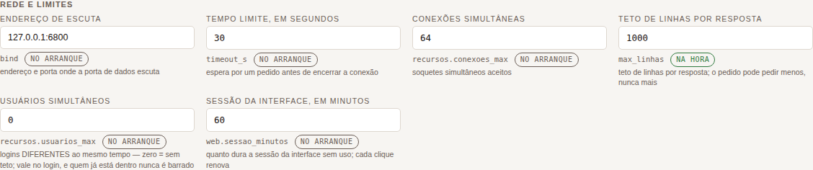
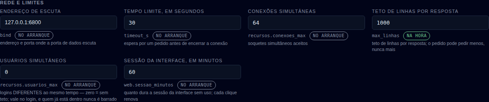
Gravação e durabilidade — recursos.durabilidade, recursos.exclusao_na_janela, recursos.lote_operacoes, recursos.lote_milissegundos, recursos.diario_volume_mib, recursos.carga_prazo_min, espelho, somente_leitura.
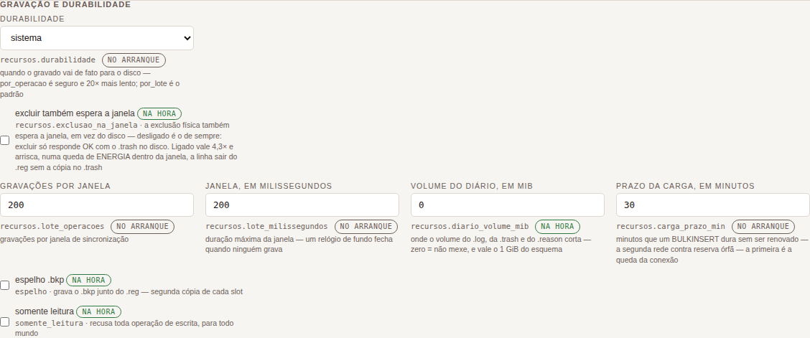
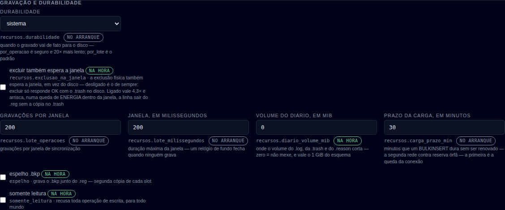
Transações — recursos.transacao_prazo_min, recursos.transacao_max_linhas, recursos.transacao_lock_timeout_ms, recursos.transacao_statement_ms.
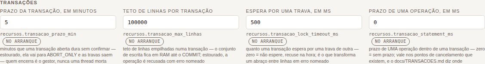
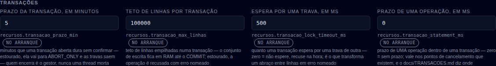
Memória e CPU — recursos.cache_paginas, recursos.memoria_max_mb, recursos.threads, recursos.cpu_percentual.
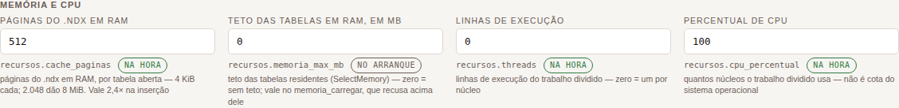
Backup — backup.agendado, backup.hora, backup.cada_horas, backup.destino, backup.zip, backup.manter.
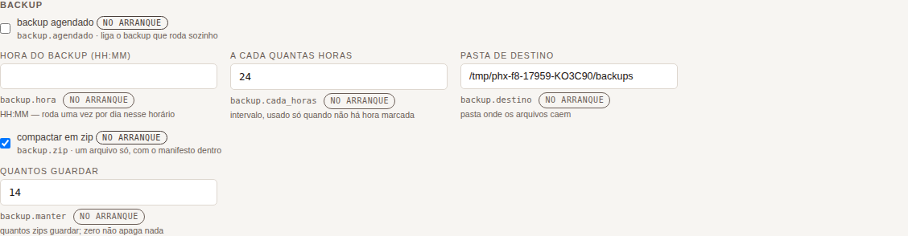
Arquivo do Profiler — profiler.arquivo_mib, profiler.arquivos.
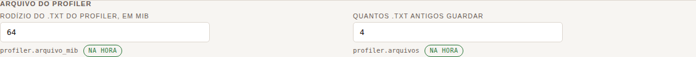
Webservice REST — rest.ligado, rest.bind, rest.nome, rest.database, rest.tabelas, rest.swagger_ligado, rest.swagger_bind. O rodapé (rodapeDoRest) diz se este servidor tem rest.token próprio — nunca qual é.
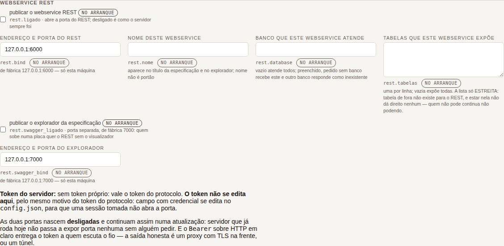
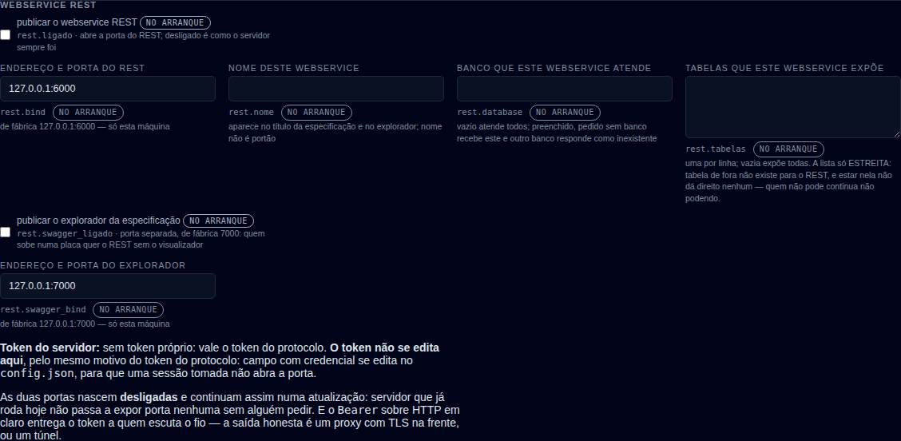
Tabelas declaradas cifradas — só cifra.tabelas (o resto da seção cifra — senha, iterações, modo, salto, separador — não se edita pela tela, de propósito).
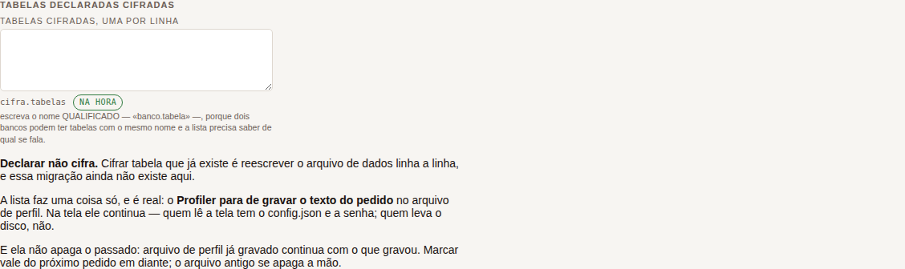
Alerta de espaço em disco — alertas.ligado, alertas.livre_minimo_percentual, alertas.livre_minimo_mb, alertas.checar_minutos, alertas.repetir_horas.
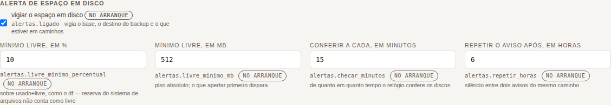
Cores do painel de telemetria — telemetria.cor_normal, telemetria.cor_alto, telemetria.cor_stress, telemetria.cor_encerrando, telemetria.alto_uso_ms, telemetria.stress_ms, com o contraste do rótulo medido ao vivo (aqui, 7,30:1 / 11,91:1 / 6,36:1 / 9,01:1 no tema escuro) e o botão "Voltar às cores de fábrica".
Só pelo arquivo — e por quê — a 11ª seção, somente leitura: uma tabela campo → valor agora → para que serve, cobrindo token, base, log_acessos, dblink, jobs, ips_permitidos, web.ligado, web.bind, web.servidores, seguranca.* inteiro, cifra.ligada, cifra.modo, cifra.salto, cifra.separador, cifra.iteracoes, cifra.senha, alertas.caminhos, alertas.email.* e replicacao.*.
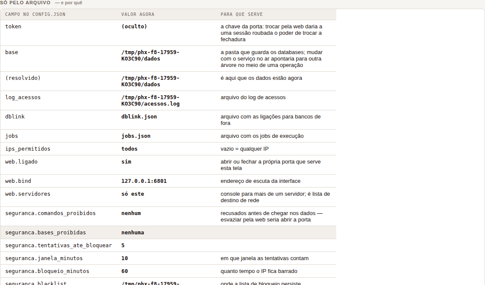
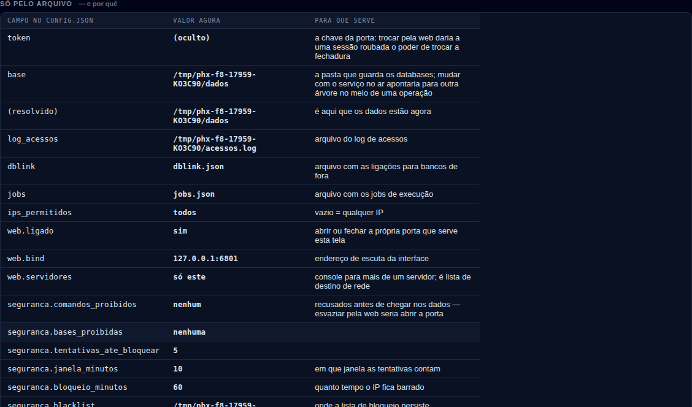
verConfigBanco), banco Comercial, 1 tabelaCenário: banco Comercial, tabela clientes (5 colunas, 2 índices, 3 linhas — uma delas "Blumenau", de propósito, contra a armadilha do text-transform:uppercase).
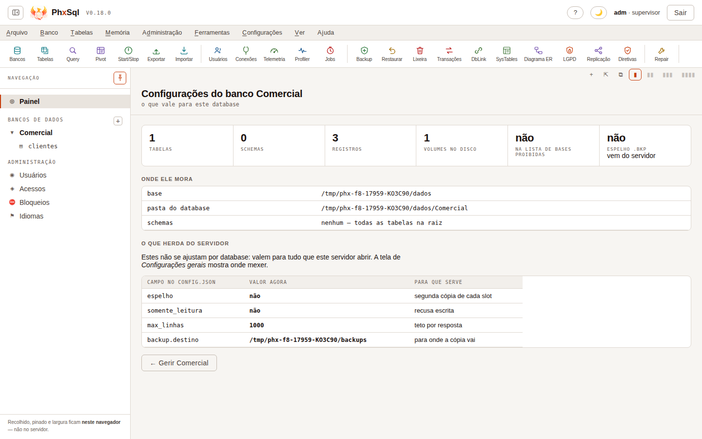
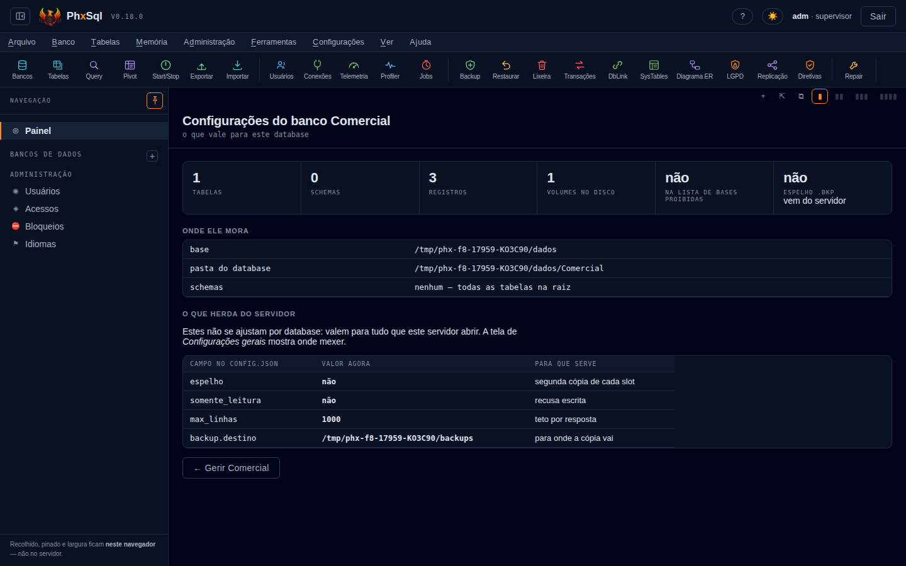
Ela tem duas seções próprias (não vêm de CAMPOS_EDITAVEIS — são fichas e tabelas de leitura, montadas na hora com tabelas/sistabelas/config): "Onde ele mora" (base, a pasta do database, os schemas) e "O que herda do servidor" (espelho, somente_leitura, max_linhas, backup.destino — herdados, e a própria tela diz "a tela de Configurações gerais mostra onde mexer"). Ela é só leitura: não há campo, nem botão de salvar — só o atalho "← Gerir {banco}".
Nota lateral: existe uma tela IRMÃ, "Gestão de tabelas" (gerirTabelasAtual, menu Tabelas → Gerir), que é a grade de tabelas com registros/slots/colunas do banco — já capturada no dossiê (docs/dossie/capturas/tabelas-*.png). Ela não é a mesma tela que este item N) pede: o item nomeia "configurações... do banco de dados atual", que é verConfigBanco, atrás do mesmo menu "Configurações" da tela gerais.
Comando: mudar max_linhas de 1000 para 1111 pelo campo, clicar "Salvar no config.json", dar page.reload() de verdade (não um redesenho em JS), logar de novo, reabrir "Gerais do servidor" e ler o campo — e ler o config.json em disco por fora da tela.
Saída real do script (node testes-web/capturas-config.mjs, mesma corrida):
exercicio salvar/recarregar: antes=1000 novo=1111 depois-do-F5=1111 config.json=1111O aviso que a tela mostrou ao salvar (#aviso, capturado no mesmo instante):
1 campo(s) gravado(s) em /tmp/phx-f8-17959-KO3C90/config.jsonOs três valores batem: 1111 no campo antes do reload, 1111 depois do F5, 1111 no arquivo. É exatamente a garantia do SEGURANCA.md §9 — gravação atômica, campo mostra o valor gravado — e aqui ela foi provada, não só lida no documento.
Comando: subir o servidor com alertas.email.senha e cifra.senha apontando para dois marcadores só deste teste (MARCA-SEGREDO-RELE-8f2c, MARCA-SEGREDO-COFRE-9a1d — nunca usados em lugar nenhum do produto), entrar na tela, e procurar as duas strings em dois lugares: no outerHTML inteiro do documento depois de verConfigServidor(), e no JSON bruto que a operação config devolve pelo protocolo (não só o que a tela escolhe mostrar).
Saída real:
exercicio segredo: senha no JSON de config=false senha no DOM=false alertas.email.senha="(oculta)" cifra.senha="(oculta)" "cluster" aparece em config()=falseNenhuma das duas strings-marcadoras apareceu em nenhum dos dois lugares. alertas.email.senha e cifra.senha existem como campos no JSON — mas carregam sempre um dos três rótulos de estado ("(oculta)", "(vazia)", "(do ambiente)"), nunca o valor, nunca uma máscara do tamanho certo (o próprio comentário do config.rs diz por quê: "o tamanho já é informação"). É a mesma regra do token de nível de servidor, que sempre volta "(oculto)" (config.rs:2908).
De quebra, a mesma checagem provou uma dispensa mais funda: com cluster configurado no arquivo (2 nós, replicacao.papel: "source"), a chave "cluster" não aparece em lugar nenhum da resposta de config — nem oculta, nem ausente por engano: Config::para_json simplesmente não a escreve. Ver seção seguinte.
<h3 class="secao"> dentro do mesmo #painel, não uma aba clicável separada. Nenhuma das duas rola a página — quem rola é o próprio #painel (por isso a captura de cada seção precisou rolar o painel e medir depois, não tirar uma foto de página inteira).seguranca.comandos_proibidos, seguranca.bases_proibidas, seguranca.tentativas_ate_bloquear, seguranca.janela_minutos, seguranca.bloqueio_minutos, seguranca.blacklist, seguranca.firewall só se leem, nunca se gravam pela web: uma sessão roubada não pode abrir o firewall nem esvaziar a lista de comandos proibidos (SEGURANCA.md §9, tabela "fica de fora").replicacao.papel, replicacao.envio, replicacao.retorno, replicacao.imagem_da_linha aparecem só na 11ª seção: virar este servidor para outro source pela web é o exemplo que o próprio SEGURANCA.md usa para explicar a régua inteira.grupoDeAjustes(...) (a tabela somente-leitura) lista web.*, seguranca.*, cifra.*, alertas.*, replicacao.* e usuarios, mas nenhuma linha de cluster.*. O exercício do item 4 confirmou ao vivo que a resposta de config também não traz a chave "cluster" quando ela está no arquivo — Config::para_json (config.rs:2892-3097) não a serializa. cluster.token, cluster.usuario e cluster.senha_hash carregam credencial (a mesma família de token e replicacao.*), e cluster.nos/prioridade/janela_s/pulso_s/avisar_cada_min/ databases/email são política de topologia — mas a ausência aqui não é "editável não, leitura sim" como replicação: é ausência total. Quem quer ver o cluster vivo usa a tela Replicação (verReplicacao, que lê papel/posição do diário) ou docs/CLUSTER.md — não esta tela.alertas.ligado, os dois livre_minimo_*, checar_minutos, repetir_horas) é uma seção cheia; o relé de e-mail (alertas.email.* inteiro — servidor, porta, de, para, usuário e senha) é só leitura na 11ª seção, e a senha nunca aparece (provado no item 4).GRUPOS_AJUSTE. É um controle à parte no topo da tela "Gerais do servidor" (#idiomasAqui, desenharIdiomas) que troca o idioma deste navegador, na hora — e a própria tela avisa que o campo idioma do config.json é outro, e manda nas mensagens que o servidor devolve pelo protocolo, não nesta tela.mi_dos_usuarios e mi_diretivas_acesso ao lado de mi_gerais_servidor/mi_do_banco — mas são verConfigUsuarios() e outra função, com URL de tela própria; o item N) nomeia só "gerais" e "do banco atual".input{width:100%} global, sem rótulo de dado em caixa alta, e sem pageerror no console em nenhuma das duas passagens.node testes-web/capturas-config.mjsSobe um phxsqld isolado (portas 6800/6801, dentro da faixa 6800–6819 da frente F8), cria o banco Comercial com a tabela clientes, entra pela tela de login de verdade (não por atalho), fotografa as 11 seções da tela "Gerais do servidor" e a tela "Do banco atual" nos dois temas em 1440×900, roda os dois exercícios do item 3 e 4, e derruba o servidor pelo PID — nunca por pkill -f. O script está em testes-web/capturas-config.mjs, com o comentário de cabeçalho.
O estudo anterior propôs 13 sprints; conferi os 13 contra o motor de hoje: 2 fecharam (ALTER TABLE ADD COLUMN e o índice de texto .fts, os dois com o comando que agora passa colado), 11 sobreviveram — e a conferência encolheu três, porque o substrato que faltava passou a existir (o varrer já faz AND de duas condições). A sonda achou ainda 6 gaps novos, dois deles defeito e não recurso. Lista final: 17 sprints, por importância.
Corrida de 2026-09-07 16:49 UTC, commit a56a165. Fonte: https://mariadb.com/kb/en/sql-statements/ e as páginas já citadas no estudo anterior, lidas nesta rodada.
| # | sprint de SPRINTS-MARIADB.md | estado hoje | a prova, desta corrida |
|---|---|---|---|
| 10 | ALTER TABLE ADD COLUMN, preservando o rowid | FECHADO | {"op":"acrescentar_coluna","tabela":"fornecedores","nome":"uf","tipo":"Str(2)","padrao":"SC"} → {'database': 'loja', 'tabela': 'fornecedores', 'coluna': 'uf', 'posicao': 2, 'colunas': 5, 'slots_reescritos': 0, … |
| 13 | Índice de texto completo (.fts) | FECHADO | {"op":"procurar_texto","indice":"porCorpo","palavra":"fênix"} → {'encontrados': 1, 'linhas': [{'rowid': 1, 'id': 1, 'corpo': 'a fenix renasce das cinzas', 'softdeleted': False, …. Dobra acento (achou «fenix» pedindo «fênix») e não faz prefixo ("fen" → {'encontrados': 0, 'linhas': []}), exatamente como docs/FTS.md promete |
| 1 | O WHERE que filtra de verdade | SOBREVIVE, e encolheu | o substrato existe e faz AND: {"op":"varrer","onde":[{"coluna":"cidade","op":"=","valor":"Blumenau"},{"coluna":"nome","op":"=","valor":"Adriano"}]} → {'registros': 3, 'visiveis': 3, 'marcadas': 0, 'devolvidas': 1, 'examinadas': 3, 'modo': 'posicao', …. É o SELECT que não alcança: SQL, coluna 54: o WHERE aceita UMA comparacao. Duas exigiriam interseccao de rowids, e nao ha planejador |
| 2 | EXPLAIN e ANALYZE | SOBREVIVE, e encolheu | a premissa dele («o EXPLAIN diz algo que as notas já não digam?») está meio respondida: as notas já dizem o índice e a ausência de planejador — ['indice porNome escolhido pelo WHERE -- e nao ha planejador: se houvesse dois candidatos, o primeiro declarado venceria']. Falta o verbo: ANALYZE nao e um comando desta camada |
| 3 | O que falta ao agendador (event scheduler) | SOBREVIVE (a metade (b)) | {"op":"jobs"} devolve {'arquivo': 'jobs.json', 'log': 'jobs.log', 'relogio_no_ar': False, 'aviso_email': {'ligado': False, 'email_ligado': False, 'avisar_jobs': False, 'para': [], 'repetir_horas': 6}, 'jobs': [{'nome': 'quebra', 'descricao': 'job que falha de proposito, … — não há campo de réplica. Um job de escrita ligado nos dois lados grava em dobro |
| 4 | CHECK declarativo | SOBREVIVE | ALTER TABLE clientes ADD CONSTRAINT c1 CHECK (saldo >= 0) → SQL, coluna 1: ALTER nao e um comando desta camada. E o criar_tabela não lê campo check nenhum |
| 5 | Colunas geradas PERSISTENT | SOBREVIVE | ALTER TABLE clientes ADD COLUMN dobro DECIMAL(12,2) AS (saldo*2) PERSISTENT → a mesma recusa |
| 6 | EXCEPT e INTERSECT | SOBREVIVE | SELECT nome FROM clientes EXCEPT SELECT … → SQL, coluna 34: sobrou "SELECT" depois do fim do comando. E o unir continua com dois modos só: {'modo': 'distinta', 'sql': 'UNION', … e {'modo': 'tudo', 'sql': 'UNION ALL', … |
| 7 | AS OF de uma linha | SOBREVIVE, e a premissa continua de pé | SELECT … FOR SYSTEM_TIME AS OF NOW() → sobrou "SYSTEM_TIME" depois do fim do comando. A matéria-prima está lá — {"op":"diario"} → {'total': 9, 'eventos': [{'quando': '2026-09-07 16:48:56,984', 'carimbo_ms': 1788799736984, 'operacao': 'inclusao', 'rowid': 5, 'versao': 1, 'usuario': 0}, … — e a imagem da linha continua nascendo desligada: config.replicacao.imagem_da_linha: False |
| 8 | Poda de volumes na varredura | SOBREVIVE, e continua dependendo do 1 | não há poda no código; e a varredura filtrada de hoje diz 'examinadas': 3 de 3 — ela examina tudo |
| 9 | Papéis no modelo de direitos | SOBREVIVE | CREATE ROLE gerente → CREATE nesta camada cria TRIGGER ou PROCEDURE. E o config não tem bloco de papéis: só usuarios, com direito por base e por tabela |
| 11 | Sequência como objeto próprio | SOBREVIVE pela metade | existe uma por tabela: {"op":"sequencias"} → {'database': 'loja', 'total': 3, 'sequencias': [{'tabela': 'chamados', 'coluna': None, 'proxima': 0, 'registros': 1, 'tem_sequencia': False}, {'tabela': 'clientes', 'coluna': 'id', 'proxima': 7, 'registros': 6, 'tem_sequencia': True}, …]}, e {"op":"ajustar_sequencia","proxima":5000} → {'database': 'loja', 'tabela': 'clientes', 'antes': 7, 'proxima': 5000, 'aviso': ''}. Falta o objeto que atravessa duas tabelas |
| 12 | O degrau seguinte do interpretador | SOBREVIVE como medição, não como sprint (SPRINTS.md §5.2) — e agora está medido | ver abaixo |
O interpretador de rotinas, exercitado nesta corrida — o que passa e o que recusa, colado:
[OK ] CREATE PROCEDURE p3() BEGIN DECLARE x INT DEFAULT 0;
WHILE x < 3 DO SET x = x + 1; END WHILE; END
{'procedimento': 'p3', 'parametros': 0, 'criado': True}
[OK ] CREATE PROCEDURE p6(IN v INT) BEGIN
INSERT INTO clientes (nome) VALUES ('via proc'); END
{'procedimento': 'p6', 'parametros': 1, 'criado': True}
[OK ] CALL p6(1)
{'procedimento': 'p6', 'saida': {}}
[ERRO] UPDATE dentro do corpo
SQL, coluna 7: UPDATE dentro de rotina ainda nao existe: o motor atualiza e exclui por rowid, e traduzir o WHERE pede o planejador. O que ja da: INSERT e SELECT … INTO
[ERRO] CASE no corpo
SQL, coluna 22: CASE nao existe no corpo; escreva com IF/ELSEIF/ELSE
[ERRO] DECLARE c CURSOR FOR SELECT …
SQL, coluna 17: o tipo CURSOR nao existe em rotina; use INT, DECIMAL(p,s), VARCHAR(n), BOOL ou DATE (que viaja como texto)
[ERRO] START TRANSACTION dentro do corpo
SQL, coluna 7: transacao e comando de SESSAO e nao cabe num corpo de rotina: ela pertence a CONEXAO, e o corpo roda dentro de UM pedido. Abra a transacao pela conexao e chame a rotina de dentro delaAs quatro recusas nomeiam o motivo e a alternativa — é o que faz este item ser medição e não sprint: só o Profiler pode dizer em qual delas alguém esbarra de verdade.
| # | o gap | a prova |
|---|---|---|
| N1 | o vocabulário de abertura do cliente — SHOW TABLES, SHOW DATABASES, SHOW CREATE TABLE, DESCRIBE, USE | SHOW nesta camada lista TRIGGERS ou PROCEDURES; tabelas e colunas saem por sistabelas/siscolunas / DESCRIBE nao e um comando desta camada / USE nao e um comando desta camada. E as três primeiras já têm resposta pronta: {"op":"tabelas"} → {'database': 'loja', 'schemas': [], 'tabelas': ['chamados', 'clientes', 'itens']}, {"op":"bancos"} → ['loja'], {"op":"esquema"} → o esquema inteiro |
| N2 | WHERE pk = n recusa quando a chave é Sequence | SELECT * FROM clientes WHERE id = 2 → tipo invalido: esperado numero da sequencia, recebido Texto("2"); o irmão Int8 passa: SELECT * FROM itens WHERE id = 1 → {'sql': 'SELECT * FROM itens WHERE id = 1', 'op': 'buscar', … |
| N3 | FROM schema.tabela inexistente vaza o erro cru do SO, e manda repetir | SELECT * FROM filial.clientes → [SP000010] erro de E/S: No such file or directory (os error 2), com "repetir": true. O caminho sem schema faz certo: nenhum volume de naoexiste.reg em …, com "repetir": false |
| N4 | o catálogo documenta valores que o motor recusa | {"op":"unir","modo":"distinto"} (o valor do catálogo) → união desconhecida: "distinto" (use distinta ou tudo). E o exemplo colável do pivotar no catálogo → agregador desconhecido: "somar" (use soma, media, contagem, minimo, maximo ou distintos); além disso o catálogo documenta chave/coluna onde o motor quer linhas/colunas |
| N5 | LIMIT 0, 2 — a forma que todo código MySQL(R)/MariaDB(R) escreve | SQL, coluna 31: sobrou "," depois do fim do comando; um comando por vez |
| N6 | INSERT/UPDATE/DELETE em SQL (o passo 2 do roteiro de docs/SQL.md §4) | INSERT ainda nao existe nesta camada -- so SELECT. A operacao equivalente ja funciona pelo protocolo — as três operações existem e rodaram nesta corrida pelo protocolo |
O critério da ordem: primeiro o que um aplicativo de cadastro comum ou o driver dele topa hoje; depois o que custa correção; depois recurso.
Correção — cabem numa rodada e são defeito de hoje
| ordem | sprint | tam. | por quê |
|---|---|---|---|
| 1 | A chave Sequence aceita inteiro escrito como texto (N2) | P | é a chave primária de quase toda tabela nascida pela tela, e SELECT * FROM t WHERE id = 1 — a consulta mais escrita do mundo — recusa. O alargamento já foi feito para Int (docs/SQL.md §5) e não alcançou o irmão. O teste que importa é o do comportamento velho: quem manda número continua igual |
| 2 | A tabela que não existe recusa dizendo isso, com repetir: false (N3) | P | um driver que lê repetir: true tenta de novo para sempre, e é justamente o caminho que ele percorre primeiro (information_schema.tables). E a recusa não nomeia nada |
| 3 | O catálogo publica o que o motor aceita, não o que alguém digitou (N4) | P | todo número visível sai de um gerador — aqui é a mesma lei para valor de parâmetro. Duas listas (Uniao::de_texto, Agregador::de_texto) já estão no código; o catálogo tem de sair delas |
Destravamento — o que outros esperam
| ordem | sprint | tam. | por quê |
|---|---|---|---|
| 4 | O WHERE que filtra, e a segunda condição (antigo 1) | M | a conferência encolheu o sprint: o varrer já filtra e já faz AND — está medido acima. Falta a tradução e a decisão de quando intersecar rowids. Cinco itens o nomeiam como dependência |
| 5 | INSERT/UPDATE/DELETE por chave primária, em SQL (N6) | M | fecha o CRUD e é o passo 2 do roteiro que o próprio docs/SQL.md escreveu. Depende do 1 para o WHERE |
| 6 | O vocabulário de abertura: SHOW TABLES/DATABASES, DESCRIBE, USE (N1) | P | três dos quatro são tradução de poucas linhas para operações que já respondem; o USE é estado de conexão, e o desenho disso já está escrito (docs/SQL.md §2) |
| 7 | LIMIT n, m e o upsert (ON DUPLICATE KEY, REPLACE INTO) (N5) | P | dialeto puro; depende do 5 |
Recurso — o que o manual do MariaDB(R) traz e aqui não há
| ordem | sprint | tam. | por quê, e a premissa que pode matá-lo |
|---|---|---|---|
| 8 | CHECK declarativo (antigo 4) | M | o lugar já existe: o BEFORE roda com a trava na mão, e o avaliador exato (i128 com escala, sem f64) já está no rotina.rs. Premissa: tabela sem CHECK custa exatamente o que custa hoje — e o que fazer com as linhas já gravadas que violam a regra nova, escrito antes do código |
| 9 | EXCEPT e INTERSECT (antigo 6) | P | a máquina do unir já compara linhas com chave composta e nulo que não casa com nulo. Premissa: essa comparação serve como está |
| 10 | Papéis no modelo de direitos (antigo 9) | M | com direito por tabela, dez pessoas do mesmo cargo são a mesma regra copiada dez vezes. Premissa: sem_papel_nada_muda antes de qualquer código |
| 11 | Sequência como objeto próprio (antigo 11) | M | hoje é uma por tabela, medido acima. Premissa é do dono: buraco na numeração é aceitável? Se não, custa um fsync por número |
| 12 | Colunas geradas PERSISTENT (antigo 5) | M | mesma rodada de formato do 8 (PSCH v7). Premissa: custo por linha de avaliar a expressão na escrita — a inserção inteira custa 7,5 µs, e 1 µs de expressão são 13% |
| 13 | DISABLE ON SLAVE: o job que não roda na réplica (antigo 3(b)) | P | defeito de hoje com quatro modos de replicação no ar. Premissa: subir um par e contar — se a réplica já recusa a escrita por outro caminho, o sprint some quase inteiro |
| 14 | EXPLAIN e ANALYZE (antigo 2) | P | rende depois do 4. Se as notas já bastarem, encolhe para o verbo como sinônimo |
| 15 | Poda de volumes na varredura (antigo 8) | M | depende do 4. Premissa: quantos volumes a pergunta típica dispensa, medido numa tabela particionada de verdade. E o alerta que a fonte dá de graça: com gatilho BEFORE, o MariaDB(R) desiste da poda — e gatilho já entrou aqui |
| 16 | AS OF de uma linha (antigo 7) | M | a matéria-prima está gravada. Premissa é do dono: a imagem da linha nasce desligada; ligar custa ~10% da vazão e 5× o diário |
| 17 | O degrau seguinte do interpretador (antigo 12) | — | não é sprint: é medição. As quatro recusas estão coladas acima; qual delas incomoda de verdade, só o Profiler diz |
ALTER TABLE não existe em SQL, em nenhuma forma — e é por isso que os sprints 8 e 12 desta lista recusam pela mesma mensagem. O que um cadastro faz com ele já existe como operação.CREATE FUNCTION recusa nomeando o motivo, e isso não é gap a fechar antes do sprint 4: função devolve valor dentro de expressão, e a camada SELECT não avalia expressão.DESEMPENHO.md, FORMATO.md e SPRINTS.md, com a origem dita ao lado. O que eu medi nesta corrida é aceito/recusado, e está colado.python3 bancada/gaps-sql/sondar.py mariadb # os 27 comandos do manual
python3 bancada/gaps-sql/sondar.py # com as equivalências e os achadosNão havia estudo do MySQL(R): parti do do MariaDB(R) e mandei 23 comandos escolhidos onde o MySQL 8 diverge dele — 23 recusados, 0 aceitos (6 faltam e importam, 10 não importam aqui, e 8 equivalências provadas pelo protocolo). A leitura do manual corrigiu duas afirmações que o estudo antigo carregava: papéis e EXCEPT/INTERSECT não são exclusivos do MariaDB(R), e a fonte dele é anterior ao MySQL 8. Lista final: 8 sprints — 5 compartilhados com a resposta O, 3 só do MySQL(R).
Corrida de 2026-09-07 16:49 UTC, commit a56a165. Fonte: o MySQL 8.4 Reference Manual — https://dev.mysql.com/doc/refman/8.4/en/sql-statements.html, https://dev.mysql.com/doc/refman/8.4/en/create-role.html e https://dev.mysql.com/doc/refman/8.4/en/set-operations.html — lidos nesta rodada.
| assunto | MySQL 8.4 | MariaDB(R) | aqui, medido nesta corrida |
|---|---|---|---|
| papéis | tem: CREATE ROLE [IF NOT EXISTS] role (manual 8.4, página citada) | tem, desde a 10.0 | não tem: CREATE ROLE app_ro → CREATE nesta camada cria TRIGGER ou PROCEDURE; SET ROLE app_ro → SET nao e um comando desta camada; GRANT app_ro TO leitor → GRANT nao e um comando desta camada |
EXCEPT / INTERSECT | tem os dois, com ALL/DISTINCT (manual 8.4: «MySQL supports UNION, INTERSECT, and EXCEPT») | tem | não tem: SELECT … EXCEPT SELECT … → sobrou "SELECT" depois do fim do comando; um comando por vez. O unir tem tudo e distinta, e mais nada |
JSON como tipo de coluna | tem tipo nativo, com armazenamento binário e JSON_TABLE | o JSON dele é apelido de LONGTEXT com CHECK | não tem: CREATE TABLE j (dados JSON) recusa, e SELECT JSON_EXTRACT(nome,'$.a') → SQL, coluna 20: esperava FROM, e veio "(". Há analisador JSON próprio nesta casa (escrito à mão, zero dependências), e é a matéria-prima — falta o avaliador de expressão que o use |
| window functions | tem (8.0) | tem (10.2) | não tem: RANK() OVER (ORDER BY nome) → SQL, coluna 18: esperava FROM, e veio "(" |
| CTE / CTE recursiva | tem (8.0) | tem (10.2) | não tem: WITH RECURSIVE r AS (…) → WITH nao e um comando desta camada |
LATERAL | tem (só ele) | não tem | não tem: SELECT * FROM clientes, LATERAL (SELECT 1) x → sobrou "," depois do fim do comando |
VALUES e TABLE como comando | tem (só ele) | não tem | não tem: VALUES ROW(1,2) → VALUES nao e um comando desta camada; TABLE clientes → TABLE nao e um comando desta camada |
SELECT … FOR SHARE / FOR UPDATE | tem, com NOWAIT/SKIP LOCKED | tem | não tem a cláusula, e tem outra forma: a janela de conflito por versao do atualizar — trava otimista em vez de pessimista. FOR SHARE → sobrou "FOR" depois do fim do comando |
| agrupamento em cluster | InnoDB Cluster / Group Replication (só ele) | Galera | tem, com outro desenho: cluster com árbitro, eleição por maioria e promoção automática (docs/CLUSTER.md). Não subi cluster nesta corrida — o config deste servidor isolado responde {'papel': 'isolado', 'papel_configurado': 'isolado', 'id_servidor': '', 'somente_leitura': False, 'origens': {}} |
| sequências | não tem | tem CREATE SEQUENCE | tem pela metade: uma por tabela — {"op":"sequencias"} → {'database': 'loja', 'total': 3, 'sequencias': [{'tabela': 'chamados', 'coluna': None, 'proxima': 0, 'registros': 1, 'tem_sequencia': False}, … |
A correção que a leitura obrigou: o docs/SPRINTS-MARIADB.md §2 lista papéis e EXCEPT/INTERSECT como exclusivos do MariaDB(R), citando https://mariadb.com/kb/en/mariadb-vs-mysql-features/. Fui à página e ela de fato diz isso — e o manual do MySQL 8.4 diz o contrário, nas duas páginas citadas acima. Não é erro do estudo anterior: é a fonte dele que envelheceu. O efeito prático é que dois sprints ganham uma segunda fonte em vez de serem «diferencial de um concorrente só».
As três listas abaixo se cruzam, e é de propósito. Um INSERT recusado está ao mesmo tempo em (a) — falta na linguagem — e em (c) — existe no motor com outro nome. Somar as três não dá o total de recusas, e uma soma que fechasse esconderia justamente o que interessa: quantos gaps têm saída hoje.
| comando | a recusa REAL, colada |
|---|---|
SELECT * FROM information_schema.tables | [SP000010] erro de E/S: No such file or directory (os error 2) — e vem com "repetir": true |
CREATE ROLE / SET ROLE / GRANT role TO user | CREATE nesta camada cria TRIGGER ou PROCEDURE / SET nao e um comando desta camada / GRANT nao e um comando desta camada |
INSERT INTO … VALUES ('A'),('B') (multi-linha) | INSERT ainda nao existe nesta camada -- so SELECT. A operacao equivalente ja funciona pelo protocolo |
SHOW VARIABLES LIKE 'version' | SHOW nesta camada lista TRIGGERS ou PROCEDURES; tabelas e colunas saem por sistabelas/siscolunas |
START TRANSACTION READ ONLY | SQL, coluna 1: sobrou "READ" depois do comando de begin |
GROUP_CONCAT(nome) | SQL, coluna 20: esperava FROM, e veio "(" |
A primeira linha é a mais séria desta resposta inteira, e não é falta de recurso: é defeito. information_schema é o primeiro lugar aonde um driver MySQL(R) vai, e a resposta é o erro cru do sistema operacional mandando tentar de novo. O caminho irmão faz certo:
[ERRO] SELECT * FROM information_schema.tables (schema.tabela)
[SP000010] erro de E/S: No such file or directory (os error 2) "repetir": true
[ERRO] SELECT * FROM naoexiste (só tabela)
[SP000018] nao encontrado: nenhum volume de naoexiste.reg em … "repetir": falseSHOW VARIABLES está na lista (a) pelo mesmo motivo: é o que o cliente manda para descobrir a versão e o sql_mode antes de qualquer coisa.
START TRANSACTION READ ONLY merece uma nota boa: a recusa está certa — sobra depois do comando é erro, e aceitar calado devolveria uma transação de escrita a quem pediu leitura. O gap é a cláusula, não o comportamento.
| comando | por que não é essencial neste motor |
|---|---|
JSON_EXTRACT e o tipo JSON | depende do avaliador de expressão. Antes dele, uma coluna JSON seria um Str com nome bonito |
| window functions, CTE, CTE recursiva | é o que uma ferramenta de BI gera sozinha; senta em cima do GROUP BY que não existe |
LATERAL, VALUES ROW(…), TABLE t | sintaxe de conveniência do dialeto; nenhuma tela de cadastro as escreve |
OPTIMIZE TABLE | compactar renumera rowid, e rowid é endereço. Não, não «ainda não» |
FLUSH TABLES | FLUSH nao e um comando desta camada. A durabilidade aqui é por janela configurada (recursos.durabilidade: 'por_lote'), não por comando do cliente |
LOCK TABLES clientes WRITE | LOCK nao e um comando desta camada. O que ele compra numa carga, o BULKINSERT já dá — e com prazo ({'bulkinsert': True, 'database': 'loja', 'tabela': 'itens', 'reservada': True, 'expira_em_s': 1800, 'prazo_min': 30}) |
KILL 1 | KILL nao e um comando desta camada. Existe como operação: encerrar_sessao |
SHOW STATUS | há coisa melhor por operação: {"op":"estatisticas"}, {"op":"painel"}, {"op":"telemetria"} |
CHECK TABLE | existe por operação (verificar) |
replicação por comando (CHANGE REPLICATION SOURCE TO, START REPLICA) | a replicação aqui é configuração e operação (replicacao_estado, replicar, aplicar, cluster_pulso), não vocabulário SQL |
| MySQL(R) | aqui | prova desta corrida |
|---|---|---|
SHOW PROCESSLIST | {"op":"sessoes"} | {'quantas': 1, 'executando': 1, 'mais_longa_ms': 0, … |
KILL <id> | {"op":"encerrar_sessao","id":…} | operação do catálogo |
information_schema.TABLES | {"op":"sistabelas"} | {'database': 'loja', 'total': 3, 'tabelas': [{'tabela': 'chamados', 'schema': '', 'registros': 1, 'slots': 1, 'colunas': 4, 'indices': 1, … |
information_schema.COLUMNS | {"op":"siscolunas"} | {'database': 'loja', 'total': 6, 'colunas': [{'tabela': 'clientes', 'posicao': 1, … |
CHECK TABLE / OPTIMIZE TABLE (a parte útil) | {"op":"verificar"} / {"op":"reindexar"} | {'tabela': 'clientes', 'registros': 6, 'slots': 6, 'eventos': 9, 'indices': {'porId': 6, 'porNome': 6}, … / {'porId': 6, 'porNome': 6} |
SELECT … FOR UPDATE | a janela de conflito por versao | {"op":"atualizar"} → {'rowid': 1, 'versao': 2} |
LOCK TABLES … WRITE (para carga) | {"op":"bulkinsert"} | {'bulkinsert': True, 'database': 'loja', 'tabela': 'itens', 'reservada': True, 'expira_em_s': 1800, 'prazo_min': 30} — e ele não desfaz: não é transação |
SET autocommit = 0 | {"op":"begin"} / BEGIN pelo SQL | {'transaction_id': 1788799736955, 'transaction_state': 'ACTIVE', 'transaction_start_time': '2026-09-07 16:48:56,998', 'transaction_isolation': 'escrita serializavel por tabela, leitura confirmada e nao bloqueante, … |
Cinco são os mesmos da resposta O e estão aqui só com o número da ordem de lá, para não duplicar trabalho; três são só do MySQL(R).
| ordem | sprint | tam. | por quê |
|---|---|---|---|
| 1 | A tabela que não existe recusa dizendo isso, com repetir: false (= O-2) | P | aqui a prioridade sobe: information_schema.<qualquer> é o primeiro pedido de um driver MySQL(R), e é exatamente o caminho schema.tabela que vaza o erro cru e manda repetir |
| 2 | information_schema como tabela consultável por SELECT — novo | M | não basta consertar o erro: o driver quer SELECT … FROM information_schema.TABLES, e a resposta já existe pronta em sistabelas/siscolunas. É tradução de nome, com o portão de permissão continuando um só. Premissa: as colunas que o cliente lê de fato (o driver ODBC daqui já sabe quais) |
| 3 | O WHERE que filtra, e a segunda condição (= O-4) | M | mesma justificativa, e GROUP_CONCAT/JSON_EXTRACT/window functions do MySQL(R) todos esperam por ele |
| 4 | INSERT/UPDATE/DELETE por chave primária, em SQL (= O-5) | M | com o acréscimo do MySQL(R): INSERT multi-linha (VALUES (…),(…)) mapeia direto no inserir_lote, que já existe e é 16,3× a linha a linha |
| 5 | SHOW VARIABLES e SHOW STATUS mínimos — novo | P | é o aperto de mão do cliente MySQL(R). Não precisa das 600 variáveis: precisa de version, sql_mode e do que o driver lê para decidir o dialeto. Premissa: quais o cliente realmente pede — mede-se ligando um e olhando o Profiler |
| 6 | Papéis no modelo de direitos (= O-10) | M | sobe de prioridade: com o manual do MySQL 8.4 na mesa, papel deixa de ser diferencial de um motor e passa a ser o que os dois grandes têm |
| 7 | EXCEPT e INTERSECT (= O-9) | P | sobe pelo mesmo motivo, e continua barato: a máquina do unir já compara linhas |
| 8 | START TRANSACTION READ ONLY e o nível de isolamento pedido pelo nome — novo | P | hoje SET TRANSACTION ISOLATION LEVEL SERIALIZABLE recusa com SET nao e um comando desta camada — genérico. O docs/SQL.md §3 já manda outra coisa: a recusa tem de dizer o nível real, e ele existe pronto na resposta do begin ('escrita serializavel por tabela, leitura confirmada e nao bloqueante, sem leitura repetivel'). Um Ok que promete o que o motor não faz seria pior; uma recusa que não explica é só ruim |
bancada/comparacao), e medir aqui daria número novo sem método.dblink_salvar com "motor":"mysql", dblink_consultar), que fala o protocolo de fio deles e existe. Esta resposta é sobre o texto SQL que entra pela op sql, não sobre o que sai pelo DbLink.ACID compliant não aparece aqui, e não vai aparecer: há transação, e o nível está medido em docs/ACID.md — leitura não repetível, fantasma e write skew acontecem; leitura suja, não.python3 bancada/gaps-sql/sondar.py mysqlO estudo anterior propôs 5 sprints: 1 fechou, 4 sobreviveram, dois deles encolhidos. Mandei 18 comandos do CQL: 18 recusados — e é o esperado, porque CQL não é SQL. O que o item pede de verdade é a outra metade: das 12 famílias de recurso do Cassandra(R) que não há aqui, 9 estão recusadas com motivo (rowid é endereço, o slot é fixo, a unicidade se confere na gravação), 2 viram sprint e 1 é a inspiração da leitura — o ALLOW FILTERING, que só cabe divergindo do original. Lista final: 5 sprints.
Corrida de 2026-09-07 16:49 UTC, commit a56a165. Fonte: https://cassandra.apache.org/doc/latest/cassandra/developing/cql/index.html, lida nesta rodada, mais o docs/CASSANDRA.md desta casa (lido no fonte da 5.0.10, commit 7b5ab44).
| # | sprint de SPRINTS-CASSANDRA.md | estado hoje | a prova, desta corrida |
|---|---|---|---|
| 1 | O fsync da lixeira entra na janela de durabilidade | FECHADO | o interruptor existe e nasce desligado, como manda «guarda nova entra pedida»: {"op":"config"} → … 'recursos': {'durabilidade': 'por_lote', 'exclusao_na_janela': False, 'lote_operacoes': 200, 'lote_milissegundos': 200, 'cache_paginas': 2048, 'diario_volume_mib': 0, … |
| 4 | Duas condições no WHERE: interseção de rowids | SOBREVIVE, e encolheu | o substrato já faz AND: {"op":"varrer","onde":[{cidade=Blumenau},{nome=Adriano}]} → {'registros': 3, 'visiveis': 3, 'marcadas': 0, 'devolvidas': 1, 'examinadas': 3, 'modo': 'posicao', …. Falta a tradução e a decisão de quando intersecar: SQL, coluna 54: o WHERE aceita UMA comparacao. Duas exigiriam interseccao de rowids, e nao ha planejador que decida por qual indice comecar |
| 3 | A posição confirmada de cada réplica, no source | SOBREVIVE, e encolheu | o argumento de correção do sprint era «o cluster com eleição decide sem essa conferência» — e hoje ele decide POR ela: o pulso carrega posicao e a eleição escolhe a maior (cluster.rs, «entre os elegíveis vence a maior posição do diário»). O que continua faltando é a posição confirmada por réplica guardada no source: {"op":"replicacao_estado"} → {'papel': 'isolado', 'papel_configurado': 'isolado', 'id_servidor': '', 'somente_leitura': False, 'origens': {}} |
| 2 | A retenção do diário no multi-master (o gc_grace da casa) | SOBREVIVE | o giro de volume existe como opção (recursos.diario_volume_mib: 0, desligado), mas retenção é outra coisa — não há regra de quanto tempo um evento precisa sobreviver para uma origem parada não ressuscitar linha. Depende do sprint 3 para a versão completa |
| 5 | TTL por linha, como coluna e job | SOBREVIVE, e a premissa morta continua morta | a premissa do estudo irmão dizia que «um job com UPDATE … SET SOFTDELETED = 1 WHERE prazo < NOW() já faz isso hoje». Não faz, e agora está medido pelos dois lados: UPDATE ainda nao existe nesta camada -- so SELECT e, no corpo de rotina, UPDATE dentro de rotina ainda nao existe: o motor atualiza e exclui por rowid, e traduzir o WHERE pede o planejador |
Nenhuma surpresa, e é por isso que a lista vale: ela separa «recusou porque falta» de «recusou porque não é a mesma linguagem».
[RECUSADO] CREATE KEYSPACE ks WITH replication = {'class':'SimpleStrategy'}
SQL, coluna 39: caractere '{' nao faz parte da linguagem
[RECUSADO] CREATE TABLE t (pk text, ck text, v text, PRIMARY KEY ((pk), ck))
CREATE nesta camada cria TRIGGER ou PROCEDURE
[RECUSADO] INSERT INTO clientes (id,nome) VALUES (9,'X') USING TTL 86400
INSERT ainda nao existe nesta camada -- so SELECT
[RECUSADO] INSERT … IF NOT EXISTS (mesma recusa)
[RECUSADO] UPDATE clientes USING TIMESTAMP 1 SET … (UPDATE ainda nao existe)
[RECUSADO] CONSISTENCY QUORUM
CONSISTENCY nao e um comando desta camada
[RECUSADO] SELECT * FROM clientes WHERE cidade = 'Blumenau' ALLOW FILTERING
SQL, coluna 50: sobrou "ALLOW" depois do fim do comando; um comando por vez
[RECUSADO] SELECT * FROM clientes WHERE token(id) > 0
SQL, coluna 35: esperava um comparador (=, <>, <, <=, >, >=)
[RECUSADO] BEGIN BATCH … APPLY BATCH
SQL, coluna 1: sobrou "BATCH" depois do comando de begin
[RECUSADO] CREATE MATERIALIZED VIEW mv AS … (CREATE … TRIGGER ou PROCEDURE)
[RECUSADO] CREATE TYPE endereco (rua text, cidade text) (idem)
[RECUSADO] CREATE TABLE c2 (id int PRIMARY KEY, tags set<text>) (idem)
[RECUSADO] UPDATE clientes SET saldo = saldo + 1 WHERE id = 1 (counter)
[RECUSADO] CREATE CUSTOM INDEX ix ON clientes (cidade) USING 'StorageAttachedIndex'
[RECUSADO] TRUNCATE clientes
TRUNCATE nao e um comando desta camada
[RECUSADO] DESCRIBE KEYSPACES
DESCRIBE nao e um comando desta camada
[RECUSADO] SELECT * FROM clientes ORDER BY vetor ANN OF [1.0] LIMIT 5
SQL, coluna 46: caractere '[' nao faz parte da linguagem
[RECUSADO] USE ks
USE nao e um comando desta camadaA régua é a lei da casa: inspiração, não cópia — e o teste dela é «onde esta lógica DIVERGE da de origem, e qual restrição nossa causou a divergência?». Onde a resposta é «em lugar nenhum», não é inspiração: é cópia com outro nome.
Faz sentido — 3
| do Cassandra(R) | por que cabe, e ONDE diverge |
|---|---|
ALLOW FILTERING, a cláusula que assume o custo | Cabe porque o problema é o mesmo: SELECT * FROM clientes WHERE cidade = 'Blumenau' recusa aqui dizendo exige um indice de uma coluna sobre cidade. Nao existe. O varrer filtra, mas dentro da pagina que ele EXAMINA -- e um SELECT que respondesse sobre a primeira pagina teria a cara de uma resposta completa. Lá, a resposta a esse impasse é uma palavra que o autor escreve para assumir a varredura. A divergência, e a restrição que a causa: o varrer daqui é paginado por desenho ('examinadas': 3, 'ha_mais': False, cursor_inicio/cursor_fim), então a cláusula não pode significar «varra tudo» como lá — ela tem de carregar o contrato de página, e a resposta tem de dizer quantas examinou e se acabou. Copiar a palavra sem isso devolveria meia resposta com cara de resposta inteira, que é exatamente o que a recusa de hoje evita |
| TTL por linha (sprint 5, sobrevivente) | Cabe como coluna do motor expirando para o SOFTDELETED, e não como apagar. A divergência: lá o TTL some com o dado; aqui a exclusão é suave por padrão, reversível, com motivo e lixeira — e a ordem de digitação proíbe reaproveitar o slot. Um TTL que apagasse de verdade quebraria as duas coisas. E a premissa continua sendo do dono: em ERP, dado que some sozinho costuma ser defeito |
gc_grace: a retenção do diário (sprint 2, sobrevivente) | Cabe porque o problema é real no multi-master, que existe aqui. A divergência: lá o gc_grace protege tombstones contra ressurreição num anel sem ordem; aqui protege eventos do diário contra uma origem parada — a unidade é o evento do .log, não a lápide, e a decisão é «quanto tempo antes de girar o volume», não «quanto antes de compactar» |
NÃO faz sentido — 9, com o motivo
| do Cassandra(R) | por que não cabe |
|---|---|
CONSISTENCY ajustável (ONE/QUORUM/ALL) | não há N réplicas da mesma linha decidindo por voto: há um source com diário e réplicas que aplicam. E o docs/CASSANDRA.md já mediu no fonte deles que o QUORUM não quer dizer «está em N discos» — quer dizer «N processos copiaram para um mmap», com fsync a cada 10 s numa thread de fundo. Trazer a palavra sem a semântica seria prometer durabilidade que o número não sustenta |
token(), partições por hash, vnodes, snitch, gossip | o rowid aqui é endereço (offset = data_offset + (rowid−1) × slot_size), e a partição é por letra ou por volume (.pag). Um anel de tokens desfaria a ordem de digitação, que é pétrea |
IF NOT EXISTS (LWT, Paxos) | aqui a casa está à frente, e isso está medido no fonte deles: o INSERT do Cassandra(R) não sabe recusar chave repetida, porque não lê antes de gravar — o conflito se resolve depois, por carimbo de hora. Aqui o índice único recusa na hora. Trazer LWT seria trazer a muleta de um problema que não temos |
USING TIMESTAMP / last write wins por carimbo | mataria a conferência de unicidade e a regra primordial da integridade. Lá é coerente; aqui é destruição |
BEGIN BATCH / APPLY BATCH | o BULKINSERT já dá exclusividade e uma sincronização no fim ({'bulkinsert': True, 'database': 'loja', 'tabela': 'itens', 'reservada': True, 'expira_em_s': 1800, 'prazo_min': 30}), e há transação de verdade desde o pedido 162. O batch logged deles é mais fraco que a transação e mais forte que o BULKINSERT — o degrau do meio não tem quem o queira |
counter | recusado em SPRINTS-CASSANDRA.md §5.1; e UPDATE … SET saldo = saldo + 1 pede o avaliador de expressão, que é o item 4 desta lista por outro caminho |
| materialized views | §5.4. Uma view materializada é uma segunda cópia do dado que o motor mantém em sincronia — segundo caminho até o dado, que é sempre o que esquece uma conferência |
collections (set/list/map) e UDT | §5.6. O slot é fixo. Coleção de tamanho livre dentro do slot não existe; fora dele, é .memo, que já existe |
busca vetorial / ANN OF | §5.5. E a recusa desta corrida é literal: caractere '[' nao faz parte da linguagem |
| compaction | §5.7. Compactar renumera rowid, e rowid é endereço |
E uma que fica no meio: o CREATE CUSTOM INDEX (SAI). O índice secundário deles é o parente do índice de texto daqui, e o .fts já fechou essa metade (sprint 13 do MariaDB(R), provado na resposta O). A outra metade é um gap real e sem caminho nenhum: não existe criar índice depois de a tabela nascer — e isso é decisão registrada (docs/PARECER-175-INDICE-NA-DECLARACAO.md), não esquecimento.
| ordem | sprint | tam. | por quê, e a premissa que pode matá-lo |
|---|---|---|---|
| 1 | Duas condições no WHERE (antigo 4; = O-4, = P-3) | M | é o mesmo item por três caminhos, e a conferência encolheu-o: o varrer já faz AND. Premissa: o ponto de virada por seletividade entre intersecar rowids e filtrar varrendo — se a interseção nunca ganhar 1,2×, sobra só a metade barata |
| 2 | A cláusula que assume a varredura (inspirada no ALLOW FILTERING) — nova | P, e depende do 1 | fecha a recusa mais comum da camada SQL sem mentir sobre a resposta. Premissa, e ela pode matá-lo: com o item 1 pronto, sobra caso em que a pessoa ainda quer a varredura assumida? Se não sobrar, o sprint morre com o número na mesa |
| 3 | A posição confirmada de cada réplica, no source (antigo 3) | M | encolheu — a eleição já compara posição —, mas o source continuar sem saber até onde cada réplica chegou é o que impede a retenção do 4. Premissa: a posição guardada bate com a informada dentro de um lote (500), e a taxa do master não cai 1% |
| 4 | A retenção do diário no multi-master (antigo 2) | M | depende do 3. Premissa: com o diário girando volumes, uma origem parada ressuscita linha? Se sim, vira correção e sobe; se não, é prevenção e fica onde está |
| 5 | TTL por linha, expirando para o SOFTDELETED (antigo 5) | M | a premissa é sua, não minha: você tem esse caso de uso? Depois: o custo da varredura do job, e se a coluna nasce indexada |
docs/CASSANDRA.md foi lido no fonte da 5.0.10 (commit 7b5ab44) e é a fonte desta resposta para tudo o que afirmo sobre eles; a documentação oficial confirmou a lista de assuntos do CQL. Onde eu afirmo o que o PhxSql faz, a fonte é a saída colada.replicacao_estado devolve origens: {} num servidor isolado. Afirmar que a origem parada ressuscita linha sem ter contado seria diagnóstico plausível.sql fala SQL; um dialeto de chave-partição sobre um motor cujo rowid é endereço não seria compatibilidade, seria fantasia. As 18 recusas coladas acima são a prova de que a decisão está no código e não só no documento.varrer, a exclusão suave com lixeira, e o evento do diário no lugar da lápide. Onde eu não soube nomear a divergência, o item foi para a coluna do «não cabe».python3 bancada/gaps-sql/sondar.py cassandraCorrida em 2026-09-07 16:44:54 UTC · commita56a165·target/release/phxsqld· reproduzido porpython3 bancada/alfanumerica/sonda.py
Existe e responde. ModoParticao::PorLetra (docs/FORMATO.md §8) parte a tabela em 37 volumes fixos — _A.._Z, _0.._9, _Outros — pela primeira letra de uma coluna de referência, com acento dobrado na letra sem acento (Ávila → _A). As cinco operações do pedido passam pela mesma porta de sempre — select/insert/update/softdelete/delete não sabem que a tabela é particionada — com duas recusas de propósito: UPDATE que mudaria a letra, e INSERT dentro de transação.
O número que responde "para ficar leve": ler a letra Z toca 200 linhas de 5.200, e custa 12,0 ms contra 9,4 ms da letra A — não cresce com a posição no alfabeto. O que falta: o paginador A–Z na tela — a canalização (esquema devolve primeiro_rowid/registros por balde, varrer aceita depois+max) está pronta, nenhuma tela oferece as 26 letras para clicar.
clientes particionada por nome{"op":"criar_tabela","database":"loja","tabela":"clientes",
"colunas":[{"nome":"id","tipo":"Int8"},
{"nome":"nome","tipo":"Str(60)","obrigatoria":true},
{"nome":"cidade","tipo":"Str(40)"}],
"indices":[{"nome":"porId","colunas":["id"],"unico":true}],
"registros_por_arquivo":1000,"particao":"letra","particao_coluna":"nome",
"softdelete":true}Saída real:
=== 1. As cinco operacoes numa tabela particionada por letra
[OK ] criar_tabela particao=letra particao_coluna=nome
[OK ] inserir 'Alves' rowid=1
[OK ] inserir 'Silva' rowid=18001
[OK ] inserir 'Ávila' rowid=2
[OK ] inserir '9 de Julho Ltda' rowid=35001
[OK ] inserir '@estranho' rowid=36001
[OK ] inserir 'Andrade' rowid=3
os arquivos que nasceram:
clientes_9.reg 718 bytes
clientes_A.reg 1002 bytes
clientes_Outros.reg 718 bytes
clientes_S.reg 718 bytes
varrer devolve as 6 linhas como UMA tabela so:
rowid 1 rownum 1 Alves
rowid 2 rownum 3 Ávila
rowid 3 rownum 6 Andrade
rowid 18001 rownum 2 Silva
rowid 35001 rownum 4 9 de Julho Ltda
rowid 36001 rownum 5 @estranho
[OK ] atualizar linha INTEIRA, mesma letra
[ERRO] atualizar mudando a letra (A -> Z) -- [SP000018] esquema invalido: a alteracao mudaria o balde de A para Z, e o balde e o endereco fisico da linha em clientes. Exclua e insira de novo: a l
[OK ] excluir SUAVE
[OK ] excluir DE VEZ
depois das duas exclusoes: ['Alves', 'Andrade', '9 de Julho Ltda', '@estranho']
[OK ] begin
[ERRO] inserir DENTRO da transacao -- [SP000018] esquema invalido: loja.clientes e particionada por letra, e ali o slot da linha depende do balde: o rowid alvo nao e previsivel fora do motor, e sem ele a marca de recuperacao nao e idempotente. Insira nesta trowid = (balde-1) × registros_por_arquivo + slot: Alves (balde A=1) → rowid 1; Silva (balde S=19) → 18001 = 18×1000+1; 9 de Julho Ltda (balde 9=27, dígitos ficam no bloco 0..9) → 35001; @estranho (balde Outros=37) →
_A que Alves — a tabela de dobra deacento provou-se ao vivo, não só no papel.
atualizar parcial já é recusado numa tabela SEM partição=== 2. CONTROLE -- o `atualizar` parcial na tabela SEM particao
[ERRO] atualizar SO a cidade, tabela normal -- [SP000018] tipo invalido: coluna nome e obrigatoria e recebeu NULL
-> se isto tambem recusa, `atualizar` e linha INTEIRA em toda tabela,
e a recusa na particionada nao e defeito dela.Sem este controle, a leitura correta acima ("update parcial recusa") pareceria defeito da partição — e não é: atualizar é linha inteira no PhxSql inteiro.
=== 3. A paginacao A-Z: 200 linhas por letra, 26 letras
gravadas 5200 linhas em 0.15s
baldes com linha: 26 (modo=letra, coluna=nome)
UM balde so, pela composicao que o protocolo JA permite:
esquema -> primeiro_rowid do balde; varrer(depois=primeiro_rowid-1, max=registros)
letra A: devolvidas= 200 examinadas= 200 so_desta_letra=True 9.4 ms
letra M: devolvidas= 200 examinadas= 200 so_desta_letra=True 14.3 ms
letra Z: devolvidas= 200 examinadas= 200 so_desta_letra=True 12.0 ms
-> o custo da ULTIMA letra tem de ser igual ao da primeira. Se crescer,
a leitura esta varrendo o cadastro inteiro e a particao nao pagou nada.
campo desconhecido -- recusa, ou engole calado?
varrer + {'balde': 'A'}: ok=True devolvidas=5
varrer + {'letra': 'A'}: ok=True devolvidas=5
varrer + {'xyzzy': 1}: ok=True devolvidas=5
-> `xyzzy` esta aqui como CONTROLE: se ele tambem passa, a tolerancia
e do protocolo inteiro e nao um buraco da particao.xyzzy passa igual a balde/letra — a tolerância a campo desconhecido é do protocolo inteiro, não um buraco da partição.
esquema devolve primeiro_rowid/registros de cada um dos 37 baldes, e varrer(depois, max) já lê um balde só —, mas nenhuma tela do PhxSql oferece as 26 letras (mais dígitos/Outros) para clicar. É trabalho de interface sobre uma engenharia que já responde, não um item de motor aberto.INSERT numa tabela por letra dentro de transação é recusado de propósito, e não é lacuna a fechar: o balde (e por consequência o rowid) só se descobre executando a regra de partição, e a marca .tx de recuperação (docs/TRANSACOES.md §5.1) precisa do rowid alvo antes da passada de commit para ser idempotente. A mensagem já diz o caminho: insira fora de transação.UPDATE que mudaria a letra de referência é recusado de propósito, pelo mesmo motivo da regra primordial de integridade em espírito: mover a linha de arquivo trocaria seu endereço físico (rowid), que é a identidade dela em todo índice. O caminho é excluir e inserir de novo — a linha nova nasce no balde certo, com rowid novo.flock /tmp/phx-cargo.lock cargo build --release -p phxsql-server
python3 bancada/alfanumerica/sonda.pyPHX_SONDA_PORTA (padrão 5479) e PHX_SONDA_POR_LETRA (padrão 200) mudam porta e volume da carga. Detalhe em bancada/alfanumerica/LEIA-ME.md.
Corrida em 2026-09-07 16:32:40 UTC · commita56a165·target/release/phxsqld· reproduzido porpython3 bancada/particao-por-faixa/sonda.py
Existe e responde. ModoParticao::PorQuantidade (docs/FORMATO.md §8) já era o modo padrão de paginação — volumes Tabela_001.reg…Tabela_NNN.reg, endereço por divisão (volume = (rowid-1)/registros_por_arquivo + 1), sem precisar de coluna de referência nenhuma. O pedido falava em 1.000.000 num volume só; esta sonda gravou 1.000.000 de linhas em dez volumes de 100.000 e exercitou as cinco operações em cima disso.
O número que decide: ler uma linha do volume 10 custou 0,3417 ms contra 0,4882 ms do volume 1 (razão 0,70× — não cresce, dentro do ruído de medir microssegundos por rede+JSON). E uma diferença real em relação à partição por letra (item R): aqui o INSERT dentro de transação é ACEITO, porque o rowid alvo continua sendo slots()+1 — a mesma conta de uma tabela sem partição nenhuma —, e por isso não existe nenhuma recusa análoga à do UPDATE que muda a letra: nada aqui decide o volume pelo conteúdo da linha.
{"op":"criar_tabela","database":"carga","tabela":"grande",
"colunas":[{"nome":"id","tipo":"Int8"},
{"nome":"nome","tipo":"Str(30)","obrigatoria":true}],
"indices":[{"nome":"porId","colunas":["id"],"unico":true}],
"registros_por_arquivo":100000,"max_arquivos":25,
"particao":"faixa","softdelete":true}=== 1. criar_tabela particao=faixa, registros_por_arquivo=100000
[OK ] criar_tabela particao=faixa registros_por_arquivo=100000
carregando 1000000 linhas em lotes de 5000 (10 volumes previstos)...
gravadas 1000000 linhas em 17.7s (56562 linhas/s)=== 2. os arquivos que nasceram no disco
grande_001.reg 7200512 bytes
grande_002.reg 7200512 bytes
grande_003.reg 7200512 bytes
grande_004.reg 7200512 bytes
grande_005.reg 7200512 bytes
grande_006.reg 7200512 bytes
grande_007.reg 7200512 bytes
grande_008.reg 7200512 bytes
grande_009.reg 7200512 bytes
grande_010.reg 7200512 bytes
total: 10 volumes de dadosvarrer atravessa a fronteira de arquivo como se fosse uma tabela só, buscar acha em qualquer volume=== 3. `varrer` atravessando a fronteira volume 1 / volume 2
pedidos os rowids 99998..100003, devolvidos 6:
rowid 99998 id=99998 volume_esperado=1
rowid 99999 id=99999 volume_esperado=1
rowid 100000 id=100000 volume_esperado=1
rowid 100001 id=100001 volume_esperado=2
rowid 100002 id=100002 volume_esperado=2
rowid 100003 id=100003 volume_esperado=2
-> rowids seguidos através da fronteira de arquivo: True. Uma UNICA chamada, um UNICO resultado; o `varrer` nao sabe que cruzou de arquivo.
buscar por indice em tres volumes diferentes:
id=6 (volume 1) -> achou=True volume_do_rowid=1
id=400006 (volume 5) -> achou=True volume_do_rowid=5
id=900006 (volume 10) -> achou=True volume_do_rowid=10=== 4. o custo de ler UMA linha no volume 1 x no ULTIMO volume
rowid 50001 (volume 1) : 0.4882 ms/leitura (media de 300)
rowid 950001 (volume 10) : 0.3417 ms/leitura (media de 300)
razao volume_10 / volume_1 = 0.70x
-> tem de ficar perto de 1,0x: o endereco e uma DIVISAO, nao uma busca que anda pelos volumes anteriores.=== 5. as cinco operacoes, direto no meio do arquivo maior
[OK ] SELECT (varrer) uma linha do ULTIMO volume
[OK ] UPDATE linha inteira, sem restricao de particao
[OK ] SOFTDELETE (excluir suave)
[OK ] DELETE fisico (excluir de vez)
[OK ] INSERT normal (fora de transacao) -- abre um volume novo alem do previstoINSERT dentro de transação — ao contrário da letra (item R), é ACEITO=== 6. INSERT dentro de uma transacao -- e ACEITO aqui
[OK ] begin
[OK ] inserir DENTRO da transacao
[OK ] commit
-> apos o COMMIT a linha aparece pelo indice: Trueesquema.volumes vem vazio neste modo — achado exercitando, não lendo=== 7. o `esquema`: paginacao aparece, `volumes` vem vazio
paginacao: {"registros_por_arquivo": 100000, "max_arquivos": 25, "capacidade": 2500000, "digitos": 3, "modo": "quantidade", "baldes": null, "coluna": null, "bytes_por_arquivo": 1073741824}
volumes (campo do protocolo): []Isto não é defeito: Table::reler_fronteiras só lê o cabeçalho de cada volume na partição por período, porque ali o corte depende do calendário. Na partição por quantidade o volume sai de uma divisão — não há fronteira nenhuma para ler do disco —, e por isso o protocolo não a calcula de graça. A lista de volumes que existem de verdade vem do sistema de arquivos (parte 2 acima), não do esquema.
UPDATE que muda a letra. Não existe porque não há como existir: nada aqui decide o volume pelo valor de uma coluna, então não há "mudar de balde" para recusar. É uma consequência estrutural do desenho, não uma lacuna.esquema.volumes não lista os volumes da partição por quantidade (fica vazio — ver item 7 acima). Quem quer as fronteiras faz a MESMA conta que o motor faz (primeiro_rowid(N) = (N-1) × registros_por_arquivo + 1); não há operação do protocolo que devolva essa lista pronta para este modo.flock /tmp/phx-cargo.lock cargo build --release -p phxsql-server
python3 bancada/particao-por-faixa/sonda.pyPHX_SONDA_PORTA (padrão 6710), PHX_SONDA_LINHAS (padrão 1.000.000) e PHX_SONDA_POR_VOLUME (padrão 100.000). A carga completa levou 17,7 s nesta máquina — bem dentro do teto de 5 minutos que o pedido original previu para reduzir a 300.000, então o número aqui é o pedido inteiro (1.000.000), sem redução. Detalhe em bancada/particao-por-faixa/LEIA-ME.md.
Corrida em 2026-09-07T16:37Z UTC (e uma segunda corrida às 16:31Z, com a máquina ocupada por outra frente — ver nota de metodologia) · commita56a165·target/release/phxsqld· reproduzido porpython3 bancada/quorum/medir.py 60
Quórum de escrita não existe no PhxSql. O inserir no master confirma sem esperar réplica nenhuma — não há o que testar porque não há o que esperar. É pedido do dono, medido antes de virar plano (pedido 207 do PENDENCIAS.md), com a rota já decidida («canal aberto» — a réplica conecta e fica, o master empurra por essa conexão), mas não construída.
O que existe e este item testa é o custo do caminho que um quórum pagaria, medido separado do sono do laço de replicação normal (que soma até 2 s e não é transporte — é intervalo de reconexão configurado). Nesta corrida, 60 voltas, três processos em 127.0.0.1: gravar no master: 0,206 ms · levar até uma réplica, na hora: 0,470 ms · commit esperando 2-de-3: 0,634 ms (3,08×) · commit esperando 3-de-3: 0,733 ms (3,56×). Tudo em localhost — é o piso; a rede real custa mais.
bancada/quorum/medir.py sobe um master e duas réplicas com reconectar_em: 3600 (uma hora) — para o laço PRÓPRIO delas não competir com a medição — e cronometra, na hora, o inserir no master, depois o replicar+aplicar chamados manualmente contra cada réplica (o que um quórum síncrono pagaria a mais). Com 3 nós, 2-de-3 é o tempo até a primeira réplica confirmar (o master já é um voto); 3-de-3 é até a última. Há um portão: se aplicar devolver zero eventos, o medidor para — zero é sintoma de a réplica ter puxado sozinha, e publicar a média de zeros seria publicar que o quórum é de graça.
bash bancada/esta-medindo.sh não achou nada rodando)$ python3 bancada/quorum/medir.py 60
60 voltas, tres servidores em 127.0.0.1
gravar no master (o que se paga HOJE) 0.206 ms faixa [0.153, 4.204]
levar para UMA replica, na hora 0.470 ms faixa [0.346, 3.482]
commit hoje (sem esperar ninguem) 0.206 ms
commit esperando 2-de-3 0.634 ms 3.08x
commit esperando 3-de-3 0.733 ms 3.56x
resultado gravado: bancada/quorum/resultados.jsonresultados.json completo desta corrida:
{
"voltas": 60, "gravar_ms": 0.206, "gravar_faixa": [0.153, 4.204],
"levar_ms": 0.47, "levar_faixa": [0.346, 3.482],
"quorum_2de3_ms": 0.428, "quorum_2de3_faixa": [0.346, 2.613],
"quorum_3de3_ms": 0.527, "quorum_3de3_faixa": [0.371, 3.482],
"commit_hoje_ms": 0.206, "commit_com_2de3_ms": 0.634,
"commit_com_3de3_ms": 0.733, "vezes_2de3": 3.08, "vezes_3de3": 3.56,
"maquina": "tres processos phxsqld em 127.0.0.1, no mesmo container",
"aviso_da_maquina": "TUDO em localhost: a rede real custa mais, e este numero e o PISO do que um quorum custaria",
"medido_em": "2026-09-07 16:37"
}Uma corrida anterior desta rodada (16:31Z), com ps mostrando outras frentes com phxsqld, node/Chromium e um python3 bancada/... de pé ao mesmo tempo, publicou medianas parecidas (0,249 / 0,591 / 0,799 / 0,905 ms) mas com cauda muito mais longa (gravar_faixa até 1.330,6 ms, levar_faixa até 463,7 ms) — contra no máximo 4,2 ms na corrida limpa acima. bancada/quorum/medir.py não tem o portão maquina_ocupada que bancada/replicacao/medir.py já tem (ele só grava medido_em); a diferença entre as duas corridas desta rodada é a prova viva de por que esse portão importa — a mediana resiste à disputa de CPU, a cauda não. Registrado aqui, não corrigido: mexer no medidor de quórum não foi o pedido desta frente.
Do CLAUDE.md: quórum de escrita não existe ainda (pedido 207), com a rota decidida pelo dono em 07/09/2026 — «construir, pela rota do CANAL ABERTO»: a réplica conecta e fica, e o master empurra por essa conexão, preservando a propriedade de firewall (quem abre continua sendo a réplica). Isto é o que o docs/REPLICACAO.md §19 já registra, e este item confirma que os números por trás da decisão continuam de pé nesta rodada.
ok a um inserir. Não há flag, não há campo no config.json, não há caminho parcial. É o pedido 207, aberto.config.json, nem no protocolo, nem na tela (pedido 208). Quando existir, a decisão já tomada é que ele mora no bloco cluster, ao lado de nos — nunca em replicacao.replicas_autorizadas (que é só ACL de IP, sem identidade nem saúde) nem em replicacao.origens (que é a lista da RÉPLICA, não do master que esperaria o quórum).docs/CASSANDRA.md já registra a armadilha: o QUORUM do Cassandra® não quer dizer "em N discos", quer dizer "N processos copiaram para um mmap", com fsync a cada 10 s. Decidir isto é parte do pedido 207, não decidido aqui.inserir sempre aceita (dado durabilidade só do master). Um quórum de escrita mudaria isso — sem N réplicas alcançáveis, o commit falharia — e trocar "sempre aceita" por "às vezes recusa" é decisão de produto que a resposta curta já cobra: quórum custa disponibilidade, não a compra de graça.cargo build --release
python3 bancada/quorum/medir.py 60Repita bash bancada/esta-medindo.sh antes: se ele listar algo, a corrida mede a disputa por CPU, não o quórum — a nota de metodologia acima é a prova disso, com os dois números lado a lado.
Corrida em 2026-09-07 16:36:11 UTC · commita56a165·target/release/phxsqld· reproduzido porpython3 bancada/transacoes/travada.py
Existem TRÊS jeitos, e os três funcionam — provados pelo soquete, não lidos no código. "Travada" aqui é uma conexão A que abriu begin, mexeu numa linha e não mandou commit nem rollback:
rollback. Imediato, sempre disponível.TIMEOUT da transação inteira estoura e o gestor aborta, sem matar thread nenhuma (docs/TRANSACOES.md §4.7).telemetria_encerrar devolve ociosa para uma transação parada entre pedidos (não há laço com ponto de cancelamento ali dentro), e aponta o caminho certo: encerrar_sessao, que fecha o soquete e cai na mesma rede de proteção da queda de conexão.Nos três casos a linha volta ao valor de antes (100) — nada do que A tinha empilhado sobrevive. De brinde: B esperou 401,6 ms pelo LOCK TIMEOUT de 400 ms declarado e recebeu 4005 EM_TRANSACAO; e a próxima operação de A depois do TIMEOUT de 1500 ms vencido recebeu exatamente 6002 TRANSACAO_ABORTADA — os dois códigos documentados em docs/TRANSACOES.md §9.
== 1. LOCK TIMEOUT (a espera de B) + cancelamento PELA PROPRIA CONEXAO (A faz rollback) ==
OK A trava a linha (atualizar dentro do begin) -- {"empilhada": true, "acao": "atualizar", "rowid": 1, "linhas": 1, "transaction_id": 1788798971091, "transaction_state": "ACTIVE", "ok": true, "op": "atualizar",
OK B espera e recebe o codigo documentado (4005 EM_TRANSACAO) -- {"ok": false, "op": "atualizar", "erro": "[SP000006] tabela em transacao: a linha 1 de loja/contas esta travada (X) pela transacao 1788798971091 (ligacao 3), aberta em 2026-09-07 16:36:11,193 ha 0s; ela solta no COMMIT o
OK a mensagem cita o LOCK TIMEOUT -- [SP000006] tabela em transacao: a linha 1 de loja/contas esta travada (X) pela transacao 1788798971091 (ligacao 3), aberta em 2026-09-07 16:36:11,193 ha 0s; ela solta no COMMIT ou no ROLLBACK. Esperei
OK B esperou por volta dos 400 ms declarados -- esperou 402 ms
tempo de espera medido: 401.6 ms
erro completo de B: {"codigo": 4005, "nome": "EM_TRANSACAO", "erro": "[SP000006] tabela em transacao: a linha 1 de loja/contas esta travada (X) pela transacao 1788798971091 (ligacao 3), aberta em 2026-09-07 16:36:11,193 ha 0s; ela solta no COMMIT ou no ROLLBACK. Esperei o LOCK TIMEOUT de 400 ms e desisti", "repetir": true}
saldo ANTES do cancelamento (por uma conexao que nao viu a transacao de A): 100
OK A cancela pela propria conexao (ROLLBACK) -- {"transaction_id": 1788798971091, "transaction_state": "ROLLED_BACK", "descartadas": 1, "ok": true, "op": "rollback", "ms": 0}
ROLLBACK de A: {"transaction_state": "ROLLED_BACK", "descartadas": 1}
OK depois do ROLLBACK a linha volta a valer 100 (nada de A foi gravado) -- saldo ficou 100
>>> a linha ficou valendo: saldo=100A linha ficou valendo: saldo=100.
TIMEOUT da transação inteira aborta A sozinho== 2. o TIMEOUT da transacao inteira aborta A SOZINHO ==
OK A abre com TIMEOUT de 1500 ms (por pedido, sem mexer no config) -- {"transaction_id": 1788798971093, "transaction_state": "ACTIVE", "transaction_start_time": "2026-09-07 16:36:11,599", "transaction_isolation": "escrita serializavel por tabela, leitura confirmada e na
OK A trava a linha e NAO manda commit nem rollback -- {"empilhada": true, "acao": "atualizar", "rowid": 1, "linhas": 1, "transaction_id": 1788798971093, "transaction_state": "ACTIVE", "ok": true, "op": "atualizar",
... esperando 2,0 s (o TIMEOUT declarado e de 1,5 s) sem A mandar nada ...
saldo enquanto A ainda 'segura' a transacao vencida (ninguem perguntou nada a A ainda): 100
OK a proxima operacao de A recebe 6002 TRANSACAO_ABORTADA -- {"ok": false, "op": "atualizar", "erro": "[SP000006] transacao abortada: a transacao 1788798971093 passou do TIMEOUT de 1500 ms e foi revertida; as travas dela ja sairam. Mande ROLLBACK para fechar", "codigo": 6002, "nom
erro completo: {"codigo": 6002, "nome": "TRANSACAO_ABORTADA", "erro": "[SP000006] transacao abortada: a transacao 1788798971093 passou do TIMEOUT de 1500 ms e foi revertida; as travas dela ja sairam. Mande ROLLBACK para fechar", "repetir": false}
OK depois do aborto por prazo a linha continua em 100 (nada de A foi gravado) -- saldo ficou 100
>>> a linha ficou valendo: saldo=100A linha ficou valendo: saldo=100. Note que o TIMEOUT foi declarado por pedido ({"op":"begin","timeout":"1500ms"}), não mexendo no config.json — ver a nota sobre transacao_prazo_min abaixo.
telemetria_encerrar, e o encerrar_sessao que resolve== 3. cancelamento PELO ADMINISTRADOR: telemetria_encerrar e encerrar_sessao ==
OK peguei o numero de ligacao de A pela propria resposta do begin -- {"transaction_id": 1788798971094, "transaction_state": "ACTIVE", "transaction_start_time": "2026-09-07 16:36:13,607", "transaction_isolation": "escrita serializ
OK A trava a linha e fica OCIOSA (nao manda mais nada) -- {"empilhada": true, "acao": "atualizar", "rowid": 1, "linhas": 1, "transaction_id": 1788798971094, "transaction_state": "ACTIVE", "ok": true, "op": "atualizar",
3a. telemetria_encerrar na atividade de A -- e o limite HONESTO desta ferramenta
OK o servidor acha a atividade de A (ela existe, so nao esta rodando nada) -- {"id": "dados:6", "estado": "ociosa", "op": "telemetria_encerrar", "quem": "token de servico", "quando": "2026-09-07 16:36:13,908", "aviso": "nao havia operacao em curso. Para derrubar a CONEXAO inteira, use `encerrar_se
OK o estado e OCIOSA -- a transacao esta parada ENTRE pedidos, nao dentro de um laco -- {"id": "dados:6", "estado": "ociosa", "op": "telemetria_encerrar", "quem": "token de servico", "quando": "2026-09-07 16:36:13,908", "aviso": "nao havia operacao em curso. Para derrubar a CONEXAO inteira, use `encerrar_se
OK o aviso aponta o caminho certo: encerrar_sessao -- nao havia operacao em curso. Para derrubar a CONEXAO inteira, use `encerrar_sessao` -- ele fecha o soquete.
OK telemetria_encerrar sozinho NAO desfez nada (a linha continua mostrando o valor de antes) -- saldo ficou 100
3b. encerrar_sessao(id) -- o que REALMENTE cancela a transacao travada
OK encerrar_sessao aceita o mesmo numero -- {"encerrada": 6, "estava": "esperando", "op": "encerrar_sessao", "aviso": "a conexao estava esperando pedido e foi fechada na hora", "quando": "2026-09-07 16:36:13,909", "ok": true, "ms": 0}
OK a sessao de A sumiu da lista (o soquete foi fechado)
OK depois do encerrar_sessao a linha volta a valer 100 (a queda desfez a transacao) -- saldo ficou 100
>>> a linha ficou valendo: saldo=100A linha ficou valendo: saldo=100. telemetria_encerrar não é o botão de matar transação — é o botão de abortar um laço em andamento (soma, exportação, carga). Para uma transação parada entre pedidos, ele diz isso com todas as letras (estado: "ociosa") e aponta encerrar_sessao, que funciona porque cai na mesma rede de proteção que já desfaz a transação quando a conexão cai de verdade (provada em bancada/transacoes/provar.py, item 5).
telemetria_encerrar não cancela uma transação parada entre pedidos — por desenho, não por lacuna: o cancelamento é cooperativo e só olha a marca em pontos seguros dentro de laços (docs/TELEMETRIA.md §4.1/§4.3), e inserir/atualizar/excluir de uma linha são uma unidade só, sem "meio" onde parar. Uma transação ociosa não está dentro de nenhum desses laços, e a resposta (ociosa) diz isso em vez de fingir um cancelamento que não aconteceu.recursos.transacao_prazo_min não aceita fração. É lido como inteiro (inteiro_ou, .max(0)) em minutos; um valor <= 0 cai no padrão (5). O mínimo prático pelo config.json é 1 minuto — rápido demais para provar num script não é o config.json, é o begin por pedido: "timeout":"1500ms" (ou "2s", "5s"…) vale só para aquela transação, sem tocar no padrão do servidor. Foi o que este teste usou no cenário 2.docs/TRANSACOES.md §4.7): "quem encerra é o gestor de transações, nunca uma thread morta" — matar a thread deixaria a trava de dados presa, o conjunto de escrita órfão e o contador de transações abertas errado.python3 bancada/transacoes/travada.pyPHX_SONDA_PORTA (padrão 6720). Detalhe em bancada/transacoes/LEIA-ME.md.
Corrida em 2026-09-07 16:42:47 UTC · commita56a165·target/release/phxsqld· reproduzido porpython3 bancada/jobs/backup-agendado.py
Existe e responde. Um job de backup ({"op":"jobs"}/jobs.json) rodou pelo relógio de verdade — não por job_rodar manual — duas vezes seguidas (a primeira quase imediata, a segunda ~1 minuto depois), gravou backup.json no disco a cada corrida, e a op jobs devolveu o histórico das duas com ok:true. Um segundo job com destino impossível falhou de propósito, e o histórico mostra a falha com o motivo, sem escondê-la. O backup bom foi restaurado e conferido: mesmo número de linhas que o original — backup não conferido não é backup.
A armadilha que valeu a pena registrar: um job ligado depois que o servidor já subiu não acorda o relógio — ele só sobe se algum job já estava ligado NO ARRANQUE (docs/JOBS.md). Este teste sobe o phxsqld duas vezes sobre a mesma raiz por causa disso: a primeira grava a loja com dados de verdade, a segunda já nasce com o backup ligado.
== FASE 1: sobe SEM job, grava a loja, desce ==
OK a loja tem 20 linhas gravadas ANTES do job existir -- registros=20
== FASE 2: escreve o jobs.json com o backup LIGADO, e sobe de novo ==jobs.json escrito antes da segunda subida:
{"jobs": [{"nome": "backup_da_loja", "descricao": "copia a raiz de dados a cada minuto",
"ligado": true, "cada_minutos": 1, "usuario": "",
"pedido": {"op": "backup", "destino": ".../backups/agendado"}}]}== FASE 3: o RELOGIO agendado (nao `job_rodar`) faz o backup sozinho ==
OK o relogio dos jobs subiu (havia job ligado NO ARRANQUE)
... esperando a primeira corrida (quase imediata: ultimo_ms=0) ...
OK a primeira corrida aconteceu -- corridas ate agora: 1
OK estado da ficha depois da 1a corrida -- {"job": "backup_da_loja", "ok": true, "duracao_ms": 1, ...}
... esperando a SEGUNDA corrida (agendada 1 min depois da primeira, pelo relogio que confere a cada 30s) ...
OK uma SEGUNDA corrida aconteceu sozinha (prova que e agendado, nao so um disparo) -- corridas ate agora: 2
(1) o backup no disco, com o backup.json:
backup.json 1090 bytes
loja/clientes.bin 64 bytes
loja/clientes.log 944 bytes
loja/clientes.memo 64 bytes
loja/clientes.ndx 8192 bytes
loja/clientes.pag 453 bytes
loja/clientes.reason 64 bytes
loja/clientes.reg 1952 bytes
loja/clientes.trash 64 bytes
OK o backup.json existe
backup.json: {"phxsql": "0.18.0", "quando": "2026-09-07 16:43:47,941", "arquivos": 8, "bytes": 11797, "escopo": "raiz", "database": null, "conteudo": [{"caminho": "loja/clientes.bin", "bytes": 64, "sha256": "454aa2ad9b725d9653bf79912326c530426986c20ffa42187f0183fd0c3fe33a"}, ...]}
OK o manifesto lista a tabela clientes.reg dentro de loja (2) o HISTORICO do job, pela op `jobs` (campo "historico"):
2026-09-07 16:43:47,941 ok=True 0 ms {"destino":".../backups/agendado","arquivos":8,"bytes":11797,"ms":0}
2026-09-07 16:42:47,940 ok=True 1 ms {"destino":".../backups/agendado","arquivos":8,"bytes":11797,"ms":0}
OK o historico mostra >=2 corridas, todas com ok=true -- 2 corridasA operação que lista o histórico é a mesma jobs (alelo job_listar) que lista os jobs cadastrados: o campo "historico" da resposta traz até historico (padrão 50) corridas recentes de todos os jobs, cada uma com job, quando, ok, duracao_ms e detalhe — não existe uma operação job_historico separada.
== FASE 4: um job de backup que FALHA de proposito (destino inexistente/impossivel) ==
OK o PEDIDO de rodar teve sucesso (ok=true la fora) -- {"ok": true, "op": "job_rodar", "resultado": {"job": "backup_que_falha", "ok": false, "duracao_ms": 0, "detalhe": "[SP00...
OK mas o JOB em si falhou (ok=false DENTRO do resultado) -- [SP000010] erro de E/S: Not a directory (os error 20)
OK a ficha do job mostra estado falhou
OK o historico registra a FALHA com o motivo
historico: 2026-09-07 16:43:48,095 ok=False [SP000010] erro de E/S: Not a directory (os error 20)
o e-mail de alerta que ISTO tentaria mandar, se alertas.email estivesse ligado:
aviso_email agora (desligado neste servidor): {"ligado": false, "email_ligado": false, "avisar_jobs": false, "para": [], "repetir_horas": 6}
OK o aviso de e-mail de jobs esta DESLIGADO neste servidor (nenhum bloco alertas.email)Nota sobre "destino inexistente": o backup cria o diretório de destino sozinho (create_dir_all), então um caminho simplesmente ausente não falha. Para falhar de propósito de forma reproduzível, o destino usado foi um caminho que passa por um arquivo comum (.../isto-e-um-arquivo-nao-uma-pasta/sub/backup) — o sistema operacional recusa criar um diretório dentro de um arquivo (ENOTDIR, "Not a directory"), e o motor propaga o erro de E/S em vez de mascará-lo. É o [SP000010] erro de E/S visto acima.
Com alertas.email.ligado:true e avisar_jobs:true, avisar_sobre_a_corrida (crates/phxsql-server/src/servidor.rs, por volta da linha 4131) dispararia, em thread própria, um e-mail com:
assunto = "PhxSql: job backup_que_falha falhou"
corpo = job, descrição, operação, usuário, agenda, quando, duração_ms e o
erro (NUNCA senha nem hash) -- texto_do_aviso_de_falhaO disparo real desse caminho, com um SMTP falso de verdade recebendo a mensagem, já está provado em bancada/jobs/prova-avisos.py (passo 2 da bateria, ver docs/JOBS.md); esta sonda não duplica esse SMTP falso — só confirma que, sem o bloco alertas.email, zero conexão SMTP sai e o motivo da falha continua visível na tela (não escondido).
== FASE 5: RESTAURAR o backup e conferir -- backup nao conferido nao e backup ==
OK `conferir_backup` diz integro (SHA-256 de cada arquivo bate)
OK a simulacao le o conteudo (sem escrever) e acha o database loja
OK restaurar_backup (modo novo) copiou os arquivos para o database novo -- {"database": "loja_restaurada", "de": "loja", "modo": "novo", "arquivos": 8, "bytes": 11797, "tabelas": ["clientes"], "substituiu": false, "ms": 3, "ok": true}
OK a copia restaurada tem o MESMO numero de linhas que a original -- original=20 restaurado=20
3 primeiras linhas restauradas: [(1, 'cliente 1'), (2, 'cliente 2'), (3, 'cliente 3')]Restaurado e conferido: 20 = 20.
job_historico separada. O histórico sai do campo "historico" da própria op jobs/job_listar — a mesma chamada que lista os jobs cadastrados.cada_minutos (recorrente) e hora ("HH:MM" diário, docs/JOBS.md). Este teste usou cada_minutos:1, que — por o job nunca ter rodado antes (ultimo_ms==0) — dispara quase imediatamente no arranque e depois a cada minuto; não há um "só uma vez, daqui a 60 segundos".docs/JOBS.md) e confirmado aqui: só um reinício com o job já ligado sobe o relógio. Sem isso o job fica agendado/parado, visível na ficha, mas ninguém o roda até alguém mandar job_rodar ou reiniciar.alertas.email) — dispensa deliberada, para não duplicar bancada/jobs/prova-avisos.py, que já prova esse caminho ao vivo com um SMTP falso.python3 bancada/jobs/backup-agendado.pyPHX_SONDA_PORTA (padrão 6725). A corrida inteira leva pouco menos de 2 minutos (a segunda corrida do relógio é o que domina o tempo). Detalhe em bancada/jobs/LEIA-ME.md.
A bateria existe e é nova: bancada/seguranca/porta.py, 16 casos pelo soquete contra um phxsqld de pé — 13 passaram, 0 falharam, 3 são achados. O que está provado: token ausente e token errado recusam com código; cinco tentativas leves bloqueiam o IP e gravam blacklist.json e acessos.log; comando proibido, base proibida e travessia de diretório bloqueiam na primeira; a whitelist nunca bloqueia; JSON torto não derruba nada; a queda da conexão solta a reserva de carga; a senha não aparece em lugar nenhum (38 arquivos varridos, zero ocorrências); e cada servidor escuta uma porta, só em 127.0.0.1. O que não está seguro tem nome e número: sem TLS a cifra do fio protege contra escuta passiva e nada mais; replicacao.replicas_autorizadas nasce vazia, e com ela vazia quem tem o token leva o diário — e, num Source com imagem_da_linha ligada, leva a linha inteira e ainda escreve de volta com o servidor em somente_leitura; e uma linha acima do teto de 128 MiB derruba a conexão sem uma linha de log.
Corrida de 07/09/2026, 16:33:48 UTC, commit a56a165, portas 6600–6603.
1. O token, e a contagem que a política manda. A política em vigor é a de fábrica: tentativas_ate_bloquear: 5.
[1] pedido SEM token
{"ok":false,"op":"ping","erro":"[SP000025] acesso negado: token invalido","codigo":4001,"nome":"ACESSO_NEGADO","classe":"acesso","sprint":"SP000025","repetir":false,"ms":0}
[2] token errado ate o limite da politica (5) -> bloqueio do IP
tentativa leve 2..5: {"ok":false,"op":"ping","erro":"[SP000025] acesso negado: token invalido","codigo":4001,"nome":"ACESSO_NEGADO", …
tentativa leve 6: {"ok":false,"op":"conexao","erro":"[SP000025] acesso negado: bloqueado desde 2026-09-07 16:33:49,265 ate 2026-09-07 17:33:49,265 por token invalido (p …
blacklist.json: [{"ip": "127.0.0.1", "desde": "2026-09-07 16:33:49,265", "desde_ms": 1788798829265,
"ate": "2026-09-07 17:33:49,265", "ate_ms": 1788802429265, "motivo": "token invalido",
"comando": "ping", "tentativas": 5, "firewall": false}]
[2b] o bloqueio entra no acessos.log
{"quando": "2026-09-07 16:33:49,266", "quando_ms": 1788798829266, "ip": "127.0.0.1", "porta_origem": 54808,
"op": "conexao", "usuario": "", "autenticado": false, "ok": false, "ms": 0,
"erro": "bloqueado desde 2026-09-07 16:33:49,265 ate 2026-09-07 17:33:49,265 …Da sexta em diante a recusa muda de "op":"ping" para "op":"conexao": o IP na lista é barrado antes do token, como a §4 do SEGURANCA.md promete. A tentativa 1 é o caso 1 — o pedido sem token já é uma violação leve, e a bateria conta a partir dali em vez de acusar o motor pelo erro dela.
2c. As três graves bloqueiam na primeira, e a resposta diz que bloqueou:
comando proibido: {"ok":false,"op":"reindexar","erro":"[SP000025] acesso negado: operacao reindexar esta proibida neste servidor; o IP foi bloqueado", …
-> motivo 'comando proibido pela politica', tentativas 1
base proibida: {"ok":false,"op":"varrer","erro":"[SP000025] acesso negado: a base financeiro esta proibida neste servidor; o IP foi bloqueado", …
-> motivo 'base proibida pela politica', tentativas 1
travessia: {"ok":false,"op":"varrer","erro":"[SP000025] acesso negado: database \"../../etc\" nao e um nome; o IP foi bloqueado", …
-> motivo 'tentativa de travessia de diretorio', tentativas 13. A whitelist vence, e o controle positivo prova que a sonda enxerga:
8 tokens errados -> blacklist.json bloqueios = []
CONTROLE POSITIVO, pedido legitimo depois: {"ok":true,"op":"ping","resultado":{"phxsql":"0.18.0","papel":"isolado", …4. Pedido torcido. Quatro formas de mandar lixo, quatro erros nomeados, e a conexão continua viva para o pedido seguinte:
JSON malformado: {"ok":false,"op":"?","erro":"[SP000018] esquema invalido: JSON invalido na posicao 25: fim inesperado","codigo":2001, …
nao e JSON: {"ok":false,"op":"?","erro":"[SP000018] esquema invalido: JSON invalido na posicao 0: caractere inesperado 'i'", …
lista em vez de objeto: {"ok":false,"op":"ping","erro":"[SP000025] acesso negado: token invalido","codigo":4001, …
byte nulo no meio: {"ok":false,"op":"?","erro":"[SP000018] esquema invalido: JSON invalido na posicao 10: caractere de controle cru no texto", …
[4c] op inexistente: {"ok":false,"op":"xyzzy","erro":"[SP000018] nao encontrado: operacao desconhecida: xyzzy","codigo":3001, …
bloqueios: []4b. A linha gigante — o teto do fio é TETO_DO_REGISTRO = 128 MiB, em crates/phxsql-core/src/fio.rs:
1 MiB: {"ok":true,"op":"ping","resultado":{"phxsql":"0.18.0", …
134218794 bytes: <A CONEXAO FECHOU SEM RESPONDER> (0.43s)
RSS do servidor: 6080 kB antes, 8204 kB depois -- o processo continua de pe
linhas novas no acessos.log por causa dela: 0
bloqueios apos a tentativa: []4d. As três operações de replicação. Com a lista de réplicas vazia — o padrão de fábrica — o token sozinho leva o diário:
[4d-i] servidor de fabrica: eventos devolvidos: 1
[{"operacao": "inclusao", "rowid": 1, "versao": 1, "carimbo_ms": 1788798830083, "usuario": 0, "origem": 0, "imagem": ""}]
[4d-ii] Source com imagem_da_linha ligada
imagem do evento 1: 76000000000100000000000000416c7665730000000000000000000000000000… (248 caracteres hex)
config_gravar somente_leitura=true: {"ok":true,"op":"config_gravar","resultado":{"gravado":true, …
CONTROLE POSITIVO, `inserir` com o servidor trancado:
{"ok":false,"op":"inserir","erro":"[SP000025] acesso negado: servidor em modo somente leitura","codigo":4001, …
`aplicar` com a mesma imagem:
{"ok":true,"op":"aplicar","resultado":{"recebidos":1,"aplicados":1,"posicao":2,"erro":null},"ms":0}
linhas na tabela depois: 2 -> [{"rowid":1,"id":1,"nome":"Alves","cidade":"Blumenau","softdeleted":false,"rownum":1},
{"rowid":2,"id":1,"nome":"Alves","cidade":"Blumenau","softdeleted":false,"rownum":2}]Com a lista preenchida com outro IP, o portão 2a-bis fecha as três — e fecha para o supervisor também, porque não é permissão, é origem:
login root: {"ok":true,"op":"login","resultado":{"id":1,"nome":"root","login":"root", …,"nivel":"adm …
replicar: {"ok":false,"op":"replicar","erro":"[SP000025] acesso negado: este ip nao esta em replicacao.replicas_autorizadas", …
posicao: {"ok":false,"op":"posicao","erro":"[SP000025] acesso negado: este ip nao esta em replicacao.replicas_autorizadas", …
aplicar: {"ok":false,"op":"aplicar","erro":"[SP000025] acesso negado: este ip nao esta em replicacao.replicas_autorizadas", …
CONTROLE POSITIVO ping: {"ok":true,"op":"ping", …4e. Havendo cadastro, o token não é identidade. ping passa sem login porque não toca dado; varrer não passa:
ping sem login: {"ok":true,"op":"ping", …
varrer sem login: {"ok":false,"op":"varrer","erro":"[SP000025] acesso negado: faca login antes: {\"op\":\"login\",\"usuario\":...,\"senha\":...}", …
senha errada: {"ok":false,"op":"login","erro":"[SP000025] acesso negado: usuario ou senha invalidos","codigo":4001, …
senha certa: {"ok":true,"op":"login","resultado":{"id":4,"nome":"Carlos Consulta","login":"carlos", …,"nivel":"nenhum", …
CONTROLE POSITIVO varrer: {"ok":true,"op":"varrer","resultado":{"registros":1, …
inserir: {"ok":false,"op":"inserir","erro":"[SP000025] acesso negado: carlos nao tem permissao de inserir em loja.clientes", …5. Conexão aberta e abandonada. O soquete e o makefile são fechados os dois — fechar só o soquete deixaria o fd aberto e o servidor nunca veria o fim, que é o defeito que a prova do BULKINSERT já pagou:
reserva: {"ok":true,"op":"bulkinsert","resultado":{"bulkinsert":true,"database":"loja","tabela":"clientes","reservada":true,"expira_em_s":1800,"prazo_min":30},"ms":0}
CONTROLE POSITIVO antes: {"ok":false,"op":"inserir","erro":"[SP000012] tabela em carga: loja.clientes esta reservada para carga pela ligacao 19 …
depois da queda: {"ok":true,"op":"inserir","resultado":{"rowid":2,"registros":2},"ms":2}6. O que o acessos.log registra de fato. A frase da casa é «o log de IP registra o acesso, não o sucesso» — medido, ele registra os dois:
linhas: 24 ok:true 7 ok:false 17
campos vistos: ['autenticado','codigo','database','erro','ip','ms','ok','op','porta_origem','quando','quando_ms','tabela','usuario']
uma de SUCESSO: {"quando":"2026-09-07 16:33:51,650","quando_ms":1788798831650,"ip":"127.0.0.1","porta_origem":54932,"op":"inserir","usuario":"","autenticado":true,"ok":true,"ms":2,"database":"loja","tabela":"cliente …
uma de FALHA: {"quando":"2026-09-07 16:33:51,150", …,"op":"inserir","usuario":"","autenticado":true,"ok":false,"ms":0,"database":"loja","tabela":"clientes","erro":"[SP000 …7. A senha, procurada com grep no diretório inteiro depois da bateria:
arquivos varridos: 38
arquivos com a senha em claro: NENHUM
respostas do protocolo com a senha: 0
o config.json guarda: pbkdf2-sha256$210000$c2dce7de5269fc9b35ce4ec0f…8. Que portas estão abertas. Não há nmap, ss nem netstat nesta máquina — a lista sai de /proc/net/tcp cruzado com /proc/<pid>/fd, que é o mesmo dado sem a ferramenta:
ferramentas ausentes nesta maquina: ['nmap', 'ss', 'netstat']
servidor padrao (pid 18945): ['127.0.0.1:6600']
servidor whitelist (pid 18949): ['127.0.0.1:6601']
servidor fonte (pid 18953): ['127.0.0.1:6603']
servidor replica (pid 18959): ['127.0.0.1:6602']
/proc/net/tcp6 existe? False (sem IPv6 neste conteiner)
porta 6609, que nenhum config abriu: recusada: ConnectionRefusedError: [Errno 111] Connection refusedPlacar: 16 casos -- 13 passou, 0 falhou, 3 achado.
Não há TLS, e a cifra do fio protege contra escuta PASSIVA e nada mais. É a §7 do SEGURANCA.md, e a frase é dela: com cifra_fio.exigir desligada — o padrão — «cifra pedida é cifra que o atacante ativo apaga do pedido». Contra quem está no meio só vale exigir: true mais o pino da chave (phxsqld --chave-do-fio) no cliente; um sem o outro não fecha. Esta bateria não exercitou o túnel — quem o exercita é bancada/cifra-do-fio/ —, e por isso a frase acima é a decisão documentada e não uma medição desta rodada.
replicacao.replicas_autorizadas nasce vazia, e vazia libera todos. Medido: com a lista vazia, replicar devolveu o diário a quem só tinha o token. Num Source de verdade — imagem_da_linha: true, que toda replicação tem — a mesma chamada devolveu a linha inteira em hexadecimal, 248 caracteres, e o aplicar a gravou de volta. A recusa existe e funciona (caso 4d-iii); o que não existe é ela vir ligada. É «guarda nova entra pedida, não imposta», e o preço está agora medido em vez de suposto.
aplicar grava num servidor em somente_leitura. Não é defeito escondido: está escrito no catalogo.rs (o_aplicar_nao_e_ferramenta_mcp) que ele fica fora de OPS_ESCRITA de propósito, porque uma réplica somente-leitura precisa aplicar. A consequência é que, num servidor isolado, somente_leitura não é uma tranca contra quem tem o token: inserir recusou com servidor em modo somente leitura e aplicar gravou a linha na mesma sessão. Quem tranca essa porta é replicas_autorizadas, e ela está vazia por padrão.
A linha acima do teto não deixa rastro. 134.218.794 bytes derrubaram a conexão em 0,43 s, sem resposta, sem uma linha no acessos.log e sem contar como violação. O teto protege a memória — o RSS foi de 6.080 kB para 8.204 kB e o processo ficou de pé —, mas quem opera não vê o evento: o único ramo que anota o erro de leitura é o do canal cifrado (servidor.rs, no Err(e) do laço de conexão). Quem quiser barrar isso não tem contador para pendurar.
Não há bloqueio por FAIXA. É a §7: o bloqueio é IP a IP, e banir um /24 exige o firewall de fora (a exportação da §5.1 ajuda). A whitelist aceita CIDR; a blacklist, não.
As tentativas vivem em memória. Reiniciar o servidor zera os contadores das leves e das graves; os bloqueios já gravados sobrevivem, porque estão no blacklist.json.
127.0.0.1 não tem exceção implícita, e isso é decisão. Foi o que fez esta bateria bloquear a si mesma e precisar do phxsqld --desbloquear entre um caso e outro — o mesmo caminho do operador local, que nunca fica trancado de verdade.
python3 bancada/seguranca/porta.pyUsa target/release/phxsqld (não compila), sobe quatro servidores nas portas 6600–6603 (PHX_SEG_PORTA muda a faixa), cria e apaga /tmp/phx-f6-<pid> e derruba cada servidor pelo PID guardado. O que cada caso mede está em bancada/seguranca/LEIA-ME.md.
Corrida em 2026-09-07T16:38:47Z UTC · commita56a165·phxsqld 0.18.0 (a56a16563355-sujo) x86_64-unknown-linux-gnu· reproduzido porpython3 bancada/proibidos/provar.py· 21 afirmações, 0 falhas
As três metades do pedido existem, e a terceira passou a existir hoje. A recusa e o bloqueio já eram: seguranca.comandos_proibidos e seguranca.bases_proibidas recusam com [SP000025] ACESSO_NEGADO e põem o IP na blacklist na primeira tentativa. O aviso ao administrador não existia — violacao_grave só chamava eprintln!, e nenhum dos cinco email::enviar do servidor.rs era ela. Esta bateria mediu a ausência primeiro, o aviso entrou depois (alertas.email.avisar_seguranca, opt-in), e a bateria agora prova a mensagem contra um relé SMTP de verdade: 1 e-mail no comando proibido, 1 na base proibida, 0 no comando permitido e 0 com o aviso não pedido.
A bateria sobe três phxsqld (portas 6500, 6501, 6502) e um SMTP falso (6510) — o relé não existe nesta máquina, e sem relé não há como provar que a mensagem saiu. São três servidores porque cada um se auto-bloqueia: 127.0.0.1 não está na whitelist, então o comando proibido barra o próprio medidor, que é exatamente o comportamento que se quer provar.
A política dos três:
"seguranca": {
"comandos_proibidos": ["excluir_tabela", "reindexar"],
"bases_proibidas": ["financeiro"],
"bloqueio_minutos": 60
},
"alertas": {
"ligado": false,
"email": { "ligado": true, "avisar_jobs": true, "avisar_seguranca": true,
"servidor": "127.0.0.1", "porta": 6510,
"de": "phxsql@bancada", "para": ["admin@bancada"], "timeout_s": 5 }
}Um SMTP falso que não recebe nada não prova ausência de e-mail: prova que o SMTP falso não presta. Então a bateria dispara primeiro um aviso que o motor já sabia mandar — o de job que falhou:
[OK ] job_salvar 'quebra' gravado
resposta job_rodar: {"job": "quebra", "ok": true, "duracao_ms": 0, "detalhe": "[SP000018] nao encontrado: database naoexiste nao existe em /tmp/phx-f5-…/a/dados", "resposta": null, "op": "job_rodar", "ms": 0}
[OK ] o SMTP falso recebeu o e-mail de job que falhou
assunto: PhxSql: job quebra falhouSó a partir daqui a caixa vale como medida.
[OK ] criar_database x (permitido) passou
[OK ] bancos (permitido) passou
[OK ] criar_tabela x.folha (permitido) passou
[OK ] nenhum e-mail novo depois dos permitidos
[OK ] nenhum IP bloqueado depois dos permitidosPedido e resposta, cruas:
{"token":"t","op":"excluir_tabela","database":"x","tabela":"folha","confirmar":"folha"}
{"ok": false, "op": "excluir_tabela", "erro": "[SP000025] acesso negado: operacao excluir_tabela esta proibida neste servidor; o IP foi bloqueado", "codigo": 4001, "nome": "ACESSO_NEGADO", "classe": "acesso", "sprint": "SP000025", "repetir": false, "ms": 0}O que ficou no blacklist.json, em disco:
{"ip": "127.0.0.1", "desde": "2026-09-07 16:38:48,598", "desde_ms": 1788799128598, "ate": "2026-09-07 17:38:48,598", "ate_ms": 1788802728598, "motivo": "comando proibido pela politica", "comando": "excluir_tabela", "tentativas": 1, "firewall": false}E a mensagem que chegou ao relé — assunto e corpo, colados como vieram:
assunto: PhxSql: IP 127.0.0.1 bloqueado (comando proibido pela politica)
O PhxSql bloqueou um endereço por violação grave.
endereço 127.0.0.1
motivo comando proibido pela politica
operação excluir_tabela
tentativas 1
desde 2026-09-07 16:38:48,598
até 2026-09-07 17:38:48,598
firewall sem regra (não configurado, ou a regra falhou)
A operação foi recusada e o endereço está na blacklist.
Para soltar: phxsqld --desbloquear 127.0.0.1
Servidor PhxSql 0.18.0O que o servidor gravou no próprio erro padrão, na mesma corrida:
aviso de jobs por e-mail: falha e parado | avisa admin@bancada
aviso de job enviado: 250 OK: fila 0001
BLOQUEADO 127.0.0.1 ate 2026-09-07 17:38:48,598 -- comando proibido pela politica (excluir_tabela)
aviso de seguranca enviado: 250 OK: fila 0001Uma conexão nova do IP bloqueado é recusada antes de qualquer operação:
{"ok": false, "op": "conexao", "erro": "[SP000025] acesso negado: bloqueado desde 2026-09-07 16:38:48,598 ate 2026-09-07 17:38:48,598 por comando proibido pela politica (excluir_tabela)", "codigo": 4001, "nome": "ACESSO_NEGADO"}No segundo servidor, porque o primeiro já se trancou:
{"token":"t","op":"varrer","database":"financeiro","tabela":"qualquer"}
{"ok": false, "op": "varrer", "erro": "[SP000025] acesso negado: a base financeiro esta proibida neste servidor; o IP foi bloqueado", "codigo": 4001, "nome": "ACESSO_NEGADO", "classe": "acesso", "sprint": "SP000025", "repetir": false, "ms": 0} assunto: PhxSql: IP 127.0.0.1 bloqueado (base proibida pela politica)
O PhxSql bloqueou um endereço por violação grave.
endereço 127.0.0.1
motivo base proibida pela politica
operação varrer
tentativas 1
…avisar_seguranca, o bloqueio acontece caladoTerceiro servidor, com avisar_seguranca falso — que é o padrão:
[OK ] reindexar (proibido) foi recusado tambem aqui
[OK ] o IP foi bloqueado do mesmo jeito
[OK ] nenhum e-mail saiu, porque ninguem pediu| o que | quanto |
|---|---|
| e-mails no comando proibido | 1 |
| e-mails na base proibida | 1 |
| e-mails no comando permitido (controle) | 0 |
e-mails sem avisar_seguranca (guarda pedida) | 0 |
| bloqueios no comando permitido (controle) | 0 |
| e-mails no total (com o do job, que é o controle do instrumento) | 3 |
| afirmações / falhas | 21 / 0 |
Servidor::violacao_grave (crates/phxsql-server/src/servidor.rs) fazia apenas isto quando o IP era bloqueado:``rust if let crate::blacklist::Grave::Bloqueado(b, aviso) = &resultado { eprintln!("BLOQUEADO {ip} ate {} -- {} ({})", b.ate(), b.motivo, b.comando); if let Some(a) = aviso { eprintln!("AVISO: {a}"); } } ``
Os cinco crate::email::enviar do arquivo eram promoção de master, cluster degradado, job que falhou, job parado e disco apertado — nenhum era a violação grave. Numa corrida anterior desta mesma bateria, hoje às 16:24 UTC, a linha saiu assim: >>> e-mails novos depois do comando proibido: 0. O aviso entrou depois disso, no mesmo ponto onde a blacklist é acionada.
avisar_seguranca nasce falso, e isso é decisão. Guarda nova entra pedida, não imposta: quem configurou o relé só para o disco apertado não pode começar a receber aviso de segurança por causa de uma versão nova. É o mesmo desenho do avisar_jobs, que existe pelo mesmo motivo. O preço é o esperado: quem atualizar e não ligar o campo continua sem ser avisado.Blacklist::bloquear substitui o bloqueio a cada violação, então uma conexão já aberta que insista no comando proibido geraria um e-mail por tentativa — quem ataca escolheria quantas mensagens o administrador recebe. A chave é o IP e o silêncio é o alertas.repetir_horas (padrão 6 h), o mesmo do disco e dos jobs. Consequência registrada: uma segunda investida do mesmo IP dentro da janela não manda segundo e-mail; ela continua na blacklist e no acessos.log.std não traz TLS e o projeto tem zero dependências, então o email.rs fala em texto claro: serve para um relé interno que você controla, não para entregar direto num provedor público. Está escrito no topo do próprio email.rs, e vale igual para este aviso.replicas_autorizadas e afins passam por violacao_leve, que conta e só bloqueia depois do limite — e o e-mail sai do bloqueio, não da tentativa. Isso é de propósito: um varredor de portas mandaria uma mensagem por segundo.comandos_proibidos é global, não por banco. O pedido fala em «comandos proibidos para um banco x»; o motor tem as duas listas separadas — a de comandos vale para o servidor inteiro, e a de bases proíbe o banco inteiro. Proibir reindexar só em financeiro não existe hoje: ou se proíbe o comando em todo lugar, ou se proíbe o banco para todo comando. O caminho para o efeito por banco é o outro: tirar a atividade do usuário naquela base (resposta M), que é permissão e não política — e a diferença importa, porque a política vale até para o root.flock /tmp/phx-cargo.lock cargo build --release -p phxsql-server
python3 bancada/proibidos/provar.pySobe três phxsqld (6500, 6501, 6502) e o SMTP falso (6510) em 127.0.0.1, escreve tudo em /tmp/phx-f5-<pid> e derruba por PID no fim. Os números vão para bancada/proibidos/resultados.json.
A guarda em código, para quem for mexer: comando_proibido_avisa_o_administrador_por_email e sem_avisar_seguranca_o_bloqueio_acontece_calado, em crates/phxsql-server/src/servidor.rs — o primeiro sobe um relé SMTP de verdade num soquete e falha se a chamada avisar_violacao_por_email sair do violacao_grave (provado repondo o defeito); o segundo falha se o aviso deixar de ser pedido e passar a ser imposto.
A bateria existe e é nova: bancada/seguranca/injecao.py, 8 casos pelo soquete — 6 passaram, 0 falharam, 2 são achados. As doze injeções clássicas não passam: o tradutor de crates/phxsql-sql/ analisa o texto e reserializa o pedido, então o segundo comando morre com sobrou "DROP" depois do fim do comando; um comando por vez, e a tabela clientes fica com as mesmas tabelas e as mesmas linhas antes e depois. Os dois achados são o que o pedido supõe e o motor não tem: o acessos.log registra a recusa mas não o texto tentado — quem guarda o texto é o Profiler, que vem desligado —, e nada bloqueia por injeção: 10.375 tentativas em 2 s, uma conexão nova a cada uma (311.250 por minuto), e o blacklist.json ficou vazio. A regra de firewall existe, funciona e roda sem shell, mas ela só é chamada quando algo já bloqueou por outro motivo.
Corrida de 07/09/2026, 16:37:17 UTC, commit a56a165, portas 6605 (dados) e 6606 (REST). Política de fábrica: comandos_proibidos: [], bases_proibidas: [].
1. As doze clássicas pela op sql. Cada uma com o que voltou:
aspa solta / tautologia SELECT * FROM clientes WHERE nome = '' OR '1'='1'
-> {"ok":false,…,"erro":"[SP000018] esquema invalido: SQL, coluna 43: o WHERE aceita UMA comparacao. Duas exigiriam interseccao de rowids, e nao ha planejador que decida por qual indic …
segundo comando: DROP SELECT * FROM clientes; DROP TABLE clientes; --
-> {"ok":false,…,"erro":"[SP000018] esquema invalido: SQL, coluna 25: sobrou \"DROP\" depois do fim do comando; um comando por vez","codigo":2001, …
segundo comando: DELETE SELECT * FROM clientes; DELETE FROM clientes
-> {"ok":false,…,"SQL, coluna 25: sobrou \"DELETE\" depois do fim do comando; um comando por vez", …
UNION SELECT SELECT * FROM clientes UNION SELECT * FROM clientes
-> {"ok":false,…,"SQL, coluna 24: sobrou \"UNION\" depois do fim do comando; um comando por vez", …
comentario /* */ no meio SELECT /* comentario */ * FROM clientes
-> {"ok":true,"op":"sql","resultado":{"sql":"SELECT /* comentario */ * FROM clientes","op":"varrer", …
comentario como separador SELECT * FROM clientes/**/WHERE/**/nome='Alves'
-> {"ok":true,…,"op":"buscar","notas":["indice porNome escolhido pelo WHERE …
'; EXEC SELECT * FROM clientes WHERE nome = 'x'; EXEC xp_cmdshell('dir')
-> {"ok":false,…,"SQL, coluna 42: sobrou \"EXEC\" depois do fim do comando; um comando por vez", …
comentario -- no fim SELECT * FROM clientes WHERE nome = 'Alves' -- e o resto
-> {"ok":true,…,"op":"buscar", …
DROP direto DROP TABLE clientes
-> {"ok":false,…,"SQL, coluna 6: DROP TABLE e a operacao excluir_tabela do protocolo, que exige repetir o nome no campo \"confirmar\"", …
empilhado com ; solto SELECT * FROM clientes ;;; DROP TABLE clientes
-> {"ok":false,…,"SQL, coluna 25: sobrou \";\" depois do fim do comando; um comando por vez", …
byte nulo no texto SELECT * FROM clientes\x00
-> {"ok":false,…,"SQL, coluna 23: caractere '\\0' nao faz parte da linguagem", …
aspa escapada como DADO SELECT * FROM clientes WHERE nome = 'x'' OR ''1''=''1'
-> {"ok":true,…,"op":"buscar","notas":["indice porNome escolhido pelo WHERE …
(a aspa dobrada e DADO: o motor foi BUSCAR pelo texto no indice, nao executar nada)
CONTROLE POSITIVO, SELECT legitimo:
{"ok":true,"op":"sql","resultado":{"sql":"SELECT nome FROM clientes LIMIT 2","op":"varrer", …
tabelas/linhas ANTES: (['clientes'], 2)
tabelas/linhas DEPOIS: (['clientes'], 2)Três coisas que esta lista mostra e que uma resposta redigida esconderia. Os quatro comandos empilhados morrem na mesma frase — «sobrou X depois do fim do comando; um comando por vez» —, e a mensagem diz a coluna, porque quem analisa sabe onde parou. Os comentários /* */ e -- passam, e devem passar: comentário é sintaxe legítima, e recusá-lo seria confundir léxico com ataque. E o DROP TABLE sozinho não é recusado por ser perigoso: é recusado por não existir nessa camada, e a mensagem diz por onde se faz (excluir_tabela, com confirmar).
1b. A aspa vira dado, e o dado volta inteiro. O mesmo texto de ataque foi gravado como valor pelo protocolo e depois procurado por um SELECT com a aspa dobrada:
gravado pelo protocolo: "'; DROP TABLE clientes; --"
SQL: SELECT * FROM clientes WHERE nome = '''; DROP TABLE clientes; --'
linhas achadas: 1 -> [{"rowid": 3, "id": 3, "nome": "'; DROP TABLE clientes; --", "cidade": "x", "softdeleted": false, "rownum": 3}]
tabelas: ['clientes'] registros: 32. Pelo protocolo JSON, nos quatro lugares em que um motor que concatena texto quebraria:
valor: {"ok":true,"op":"inserir","resultado":{"rowid":4,"registros":4},"ms":0}
coluna: {"ok":false,"op":"inserir","erro":"[SP000018] tipo invalido: coluna \"cidade'); DROP TABLE clientes; --\" nao existe em clientes","codigo":2002, …
tabela: {"ok":false,"op":"varrer","erro":"[SP000018] nao encontrado: nenhum volume de clientes; DROP TABLE clientes.reg em …/dados/loja","codigo":3001, …
base: {"ok":false,"op":"varrer","erro":"[SP000018] nao encontrado: database loja; DROP DATABASE loja nao existe em …/dados","codigo":3001, …
tabelas/linhas ANTES: (['clientes'], 3)
tabelas/linhas DEPOIS: (['clientes'], 4) (a linha nova E a do valor envenenado)O nome envenenado aparece dentro da mensagem de erro, como nome de arquivo e de pasta procurados — e não como comando. É a prova de que ali não há concatenação: o texto virou chave de busca no disco, não frase para alguém executar.
3. Pela porta REST. Sim, o REST recebe SQL: POST /v1/sql é uma rota como qualquer outra, porque a especificação sai da tabela de despacho. E passa pelo mesmo despachar:
CONTROLE POSITIVO POST /v1/sql legitimo: 200 {"ok":true,"op":"sql","resultado":{"sql":"SELECT nome FROM clientes LIMIT 1","op":"varrer", …
POST /v1/sql com injecao: 400 {"ok":false,"op":"sql","erro":"[SP000018] esquema invalido: SQL, coluna 25: sobrou \"DROP\" depois do fim do comando; um comando por vez", …
POST /v1/sql com token errado: 401 {"ok":false,"op":"sql","erro":"[SP000025] acesso negado: token invalido","codigo":4001, …
POST /v1/ping com op=excluir_tabela no corpo:
400 {"ok":false,"op":"ping","erro":"[SP000018] esquema invalido: o caminho pede a operacao \"ping\" e o corpo traz \"op\":\"excluir_tabela\"; no REST quem manda e o caminho -- tire o campo do co …
tabelas/linhas ANTES: (['clientes'], 4)
tabelas/linhas DEPOIS: (['clientes'], 4)4. O log das tentativas. A mesma injeção, olhada nos dois lugares:
acessos.log: {"quando": "2026-09-07 16:37:17,407", "quando_ms": 1788799037407, "ip": "127.0.0.1",
"porta_origem": 55544, "op": "sql", "usuario": "", "autenticado": true, "ok": false,
"ms": 0, "database": "loja",
"erro": "[SP000018] esquema invalido: SQL, coluna 25: sobrou \"DROP\" depois do fim do comando; um co …
o texto tentado esta no acessos.log? False
profiler: {"serial": 1, "quando": "2026-09-07 16:37:17,407", "ip": "127.0.0.1", "usuario": "",
"op": "sql", "database": "loja", "tabela": "", "bytes": 108,
"pedido": "{\"op\":\"sql\",\"database\":\"loja\",\"texto\":\"SELECT * FROM clientes; DROP TABLE clientes; --\",\"token\":\"***\"}",
"ms": 0, "ok": false, "erro": "[SP000018] esquema invalido: SQ …
o texto tentado esta no profiler? True
o token aparece em claro no profiler? FalseO "token":"***" no meio do pedido é a lei da casa cumprindo: o Profiler analisa e reserializa em vez de recortar, e o campo tapado continua tapado mesmo com o pedido escrito de qualquer jeito.
5. Bloqueio automático por injeção — a medição. Dois caminhos, dois segundos cada, com o blacklist.json olhado antes e depois:
pela MESMA conexao: 25067 tentativas em 2s (752010 por minuto), 25067 recusadas
uma CONEXAO por tentativa: 10375 tentativas em 2s (311250 por minuto), 10375 recusadas
bloqueios antes: [] depois: []
o IP continua entrando: {"ok":true,"op":"ping","resultado":{"phxsql":"0.18.0","papel":"isolado", …6. A regra de firewall. O bloqueio veio pelo caminho de fábrica — cinco credenciais erradas —, e o comando configurado carrega ; rm alvo.txt dentro do argumento de propósito:
blacklist.json: [{"ip": "127.0.0.1", "desde": "2026-09-07 16:37:21,409", "ate": "2026-09-07 17:37:21,409",
"motivo": "token invalido", "comando": "ping", "tentativas": 5, "firewall": true}]
arquivos criados pelo comando: ['marca-127.0.0.1.txt; rm alvo.txt']
alvo.txt sobreviveu? TrueUm arquivo só, com o nome inteiro, e a vítima de pé: não há shell, e o {ip} foi trocado depois de o endereço ser validado. "firewall": true na lista é o servidor dizendo que a regra chegou a ser aplicada.
E a exportação da §5.1, com o IP ativo, nos quatro formatos:
texto -> '127.0.0.1\n'
iptables -> 'iptables -I INPUT -s 127.0.0.1 -j DROP\n'
nftables -> 'add element inet filter phxsql_bloqueados { 127.0.0.1 }\n'
fail2ban -> 'fail2ban-client set phxsql banip 127.0.0.1\n'A bateria NÃO aplica a regra, e a decisão está escrita nela: esta sessão roda como root (euid=0), então o iptables funcionaria — e um iptables -I INPUT -s 127.0.0.1 -j DROP num contêiner compartilhado derruba a rede de quem está ao lado. Quem tem o privilégio revisa o texto acima e aplica; é exatamente para isso que a exportação existe.
Placar: 8 casos -- 6 passou, 0 falhou, 2 achado.
Nada bloqueia por injeção de SQL, e este é o achado principal. As duas gravidades da §3 são comando/base proibidos (grave, bloqueia na primeira) e credencial errada (leve, conta na janela). Erro de sintaxe não é nenhuma das duas, e o número mede o tamanho da folga: 10.375 tentativas em 2 s abrindo uma conexão nova a cada uma — 311.250 por minuto — sem um único bloqueio, e o ping seguinte passou.
A proposta, com o número, e sem implementar nada. Contar o erro de sintaxe SQL com padrão de injeção como violação leve: N por janela, no mesmo contador de tentativas_ate_bloquear que já existe, e desligada de fábrica (guarda nova entra pedida, não imposta). Padrão de injeção quer dizer o que o motor já sabe distinguir sem casar texto: a recusa sobrou "X" depois do fim do comando — que é o comando empilhado e só ele —, e não «erro de sintaxe» em geral.
E por que não pode ser grave: um erro de digitação do operador não pode derrubar o operador. É a lição do pedido 203, e ela já custou uma gravação inteira: uma réplica mal configurada tentou login em laço, o master a tratou como ataque e bloqueou 127.0.0.1 por uma hora — derrubando junto a sessão da tela, porque a réplica e o navegador do operador saíam do mesmo IP. Grave bloqueia na primeira; com o operador legítimo digitando SQL na tela — e um SELECT * FROM clientes; com o ponto-e-vírgula sobrando é o erro mais comum que existe —, isso trancaria o dono do banco antes de trancar qualquer atacante, e trancaria o IP inteiro por causa de um processo. Leve, com N por janela, cobra reincidência em vez de cobrar desatenção.
O contra-argumento que precisa ser medido antes: quem manda SQL por esta porta é sobretudo driver, e driver não erra sintaxe por desatenção — erra por versão. Um cliente antigo mandando uma cláusula que esta camada ainda não tem geraria recusa repetida e legítima, e bloquearia um sistema inteiro. É o mesmo motivo pelo qual a contagem tem de olhar sobrou … um comando por vez e não o código 2001 genérico.
O acessos.log não guarda o texto tentado. Medido: False. Ele guarda ip, quando, op, usuario, ok, codigo e a mensagem da recusa — que já basta para um filtro de fail2ban (failregex = ^.*"ip":"<HOST>".*"ok":false.*$, §5.1), mas não diz o que a pessoa tentou. Quem quiser o texto liga o Profiler, e ele vem desligado, exige administrar e guarda em memória com teto. Não há hoje um log de segurança que grave a tentativa em disco por padrão.
A regra de firewall não é o bloqueio. É a §5, e vale repetir: um IP na lista é recusado dentro do servidor, sem firewall, sem root e sem poder falhar. O comando é um extra, desligado de fábrica; se falhar, o bloqueio continua valendo e a falha vira aviso. Ligar o iptables embutido exige CAP_NET_ADMIN ou root para o phxsqld, o que é aumento de privilégio real — a §5.1 existe justamente para não pedir isso.
Não há bloqueio por faixa. Banir um /24 inteiro exige o firewall de fora; a exportação acima ajuda. A whitelist aceita CIDR, a blacklist não.
Um erro cru que escapa, achado de passagem. SELECT * FROM information_schema.tables devolve [SP000010] erro de E/S: No such file or directory (os error 2) — sem caminho, então não vaza estrutura, mas manda procurar arquivo em vez de dizer que o catálogo não é uma tabela desta camada. É a mesma família do erro que a lei da casa já mandou envolver em vez de vazar; fica aqui nomeado, não consertado.
python3 bancada/seguranca/injecao.pyUsa target/release/phxsqld (não compila), sobe um servidor na 6605 com o REST na 6606 (PHX_INJ_PORTA muda a faixa), cria e apaga /tmp/phx-f6-<pid> e derruba o servidor pelo PID guardado. O firewall configurado é um touch inofensivo dentro do diretório temporário, e a bateria não aplica regra de iptables nenhuma. O que cada caso mede está em bancada/seguranca/LEIA-ME.md.
Feito em 2026-09-07 16:51 UTC, sobre o commit a56a165; os números abaixo saem dos geradores, não desta prosa.
O dossiê ganhou a seção 36 — «As perguntas do dono, e a resposta exercitada de cada uma», com a resposta curta das 29 (as três abertas + A–Z), lida dos mesmos arquivos que geram o PDF (docs/pdf/respostas/*.md) por um gerador novo, docs/dossie/perguntas-no-dossie.py — o décimo primeiro da receita. Uma fonte, duas saídas: o resumo no dossiê e o PDF inteiro não podem divergir porque não há segunda cópia.
«Verificando se ficou algo errado» foi feito medindo, e achou:
.fts faltava em três inventários — Figura 1, Figura 8 e a tabela do FORMATO.md — corrigidos e provados no navegador (resposta 0.1);TECNOLOGIAS.md marcada GERADO trazia números digitados (corrigida na revisão completa da tarde, commit a56a165);replicas_autorizadas vazia libera todos (214) — ao mais miúdo (recusas do SQL dizendo a coisa errada, 219).O que os geradores imprimiram nesta rodada (cada linha é saída de script):
dossie-phxsql-0.18.html: secao das perguntas regravada -- 29 respostas
224 pedidos: 198 feitos, 8 parciais, 18 planejados
html: docs/pdf/phxsql-26-perguntas.html (320,998 bytes, 29 respostas)
pdf: docs/pdf/phxsql-26-perguntas.pdf (3,905,770 bytes, 83 paginas contadas pela marca /Type /Page)
dossie-phxsql-0.18.html: 30 figuras numeradas, 0 corrigidasE o que a revisão dos inventários mediu antes e depois (resposta 0.1):
Figura 1, condicionais ........ 3 -> 4 (+ .fts)
Figura 8, extensões ........... 8 -> 9 (+ .fts, pendurado no .ndx, «fora do desfazer»)
FORMATO.md, tabela ............ 9 -> 10 linhas (+ §17)arquivos_da_tabela) com as três cópias — pedido 213.python3 docs/dossie/perguntas-no-dossie.py # a seção 36
python3 docs/pdf/gerar.py # o PDF, das mesmas respostas
# e a receita inteira do dossiê, em docs/dossie/LEIA-ME.md (onze geradores)